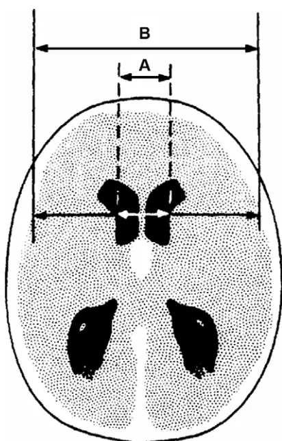

Conférence d'experts
L. Beydon
Département d'anesthésie-réanimation chirurgicale 1, CHU, 4, rue Larrey, 49033 Angers cedex 01, France
Disponible sur internet le 14 juin 2005
L'hémorragie sous-arachnoïdienne (HSA) par rupture d'anévrisme est une pathologie importante à plusieurs titres. Elle concerne une population le plus souvent jeune et en bonne santé. Son pronostic est incertain, sa mortalité est élevée avec une part de risque non maîtrisable. Enfin, son traitement est urgent et met en jeu une filière complexe et multidisciplinaire qui doit assurer la prise en charge du patient de façon rapide et coordonnée. L'enjeu que représente cette pathologie est de donner toutes ses chances au patient.
Les formes graves d'HSA envisagées dans cette conférence d'experts sont définies par un grade III à V dans la classification de la World Federation of Neurological Surgeons (WFNS). Elles représentent le tiers des HSA et posent des problèmes plus complexes encore.
Le but de cette conférence d'experts est de tenter de répondre au mieux aux questions soulevées par ces formes graves.
Pour ce faire, des experts des trois disciplines concernés par la prise en charge de cette pathologie ont uni leurs forces pour analyser cette question et tenter de proposer des réponses cohérentes et communes.
Cette conférence initiée par la Société française d'anesthésie et de réanimation (Sfar) a été réalisée en collaboration avec l'Association de neuroanesthésie réanimation de langue française (ANARLF), la Société française de neurochirurgie et la Société française de neuroradiologie.
La prise en compte des formes graves d'HSA nous a obligés à aborder certains éléments concernant l'hémorragie sous-arachnoïdienne en général lorsque cela paraissait nécessaire, pour permettre une vision d'ensemble du problème. En effet, les formes mineures peuvent s'aggraver et l'HSA constitue une entité globale et évolutive.
Dr G. Audibert, (Nancy), Dr J. Berré, (Bruxelles), Pr L. Beydon, (Angers), Président, Dr G. Boulard, (Bordeaux), Pr N. Bruder, (Marseille), Pr P. Hans, (Liège), Pr L. Puybasset, (Paris), Pr P. Ravussin, (Sion) pour le comité des référentiels de la Sfar, Dr A. Ter Minassian, (Angers).
Pr H. Dufour (Marseille), Pr J.-P. Lejeune (Lille), Pr F. Proust (Rouen).
Pr A. Bonafé (Montpellier), Dr J. Gabrillargues (Clermont-Ferrand), Pr A. de Kersaint-Gilly (Nantes).
Dr V. Bonhomme (Liège), Dr M. Bonnard-Gougeon (Clermont-Ferrand), Pr E. Cantais (Toulon), Pr D. Chassard (Lyon), Dr A.-M. Debailleul (Lille), Pr J.-J. Eledjam (Montpellier), Dr J.-P. Graftieaux (Reims), Pr J.-M. Malinovsky (Reims), Pr C. Martin (Marseille), Dr G. Orliaguet (Paris), Pr J.-F. Payen (Grenoble), Dr J.-L. Raggueneau (Paris), Pr E. Tassonyi (Genève)
Pr J.-P. Castel (Bordeaux), Pr T. Civit (Nancy), Pr P. Decq (Créteil), Pr R. Deruty (Lyon), Pr E. Emery (Caen), Pr J. Lagarrigue (Toulouse), Dr M. Lonjon (Nice), Pr P. Mercier
Adresse e-mail : lbeydon.angers@invivo.edu (L. Beydon).
(Angers), Dr, X. Morandi (Rennes), Pr K. Mourier (Dijon), Pr F. Parker (Le Kremlin-Bicêtre), Pr F. Segnarbieux (Montpellier), Dr P. Toussaint (Amiens)
Dr R. Axionnat (Nancy), Dr J. Berge (Bordeaux), Dr P. Bessou (Grenoble), Dr A. Boulin (Suresnes), Pr J. Chiras (Paris), Pr C. Cognard (Toulouse), Pr P. Courthéoux (Caen), Dr O. Levrier (Marseille), Pr F. Ricolfi (Dijon), Dr L. Spelle (Paris), Pr F. Turjman (Lyon)
La méthode suivie est celle qui a été élaborée par le comité des référentiels de la Sfar. En pratique, le travail a été conduit comme suit : le projet a été soumis au comité des référentiels de la Sfar par le président de la conférence d'experts. Ce dernier et le comité ont proposé des experts anesthésistes réanimateurs. Simultanément, les présidents de la Société française de neurochirurgie et de la Société française de neuroradiologie ont été sollicités pour que leur société respective participe à ce projet. Elles ont chacune proposé des experts. Une fois le panel d'experts ainsi constitué, les participants ont déterminé lors de leur première réunion, le champ des questions leur semblant devoir être traité, compte tenu de leur expérience et de leur connaissance de la littérature, mais aussi des points qui, à leurs yeux, continuent à poser problème. Ils ont ensuite travaillé par sous-groupes sur les différentes questions du projet. Chaque question a ensuite été retravaillée et finalisée par l'ensemble des experts.
Outre les données bibliographiques détenues par chacun des experts, une interrogation Medline a été réalisée en octobre 2003. Les mots clés : subarachnoid haemorrhage et cerebral aneurysm ont généré 10 100 et 9 804 réponses, respectivement. Les articles en anglais et français couvrant la période 1995–2003 correspondant à ces mots clés ont été extraits, soit 4 547 références. Cette base a été ensuite réinterrogée par mots clés par les experts.
Les études ont été classées selon leur niveau de preuve :
Niveau 1 : études randomisées avec un faible risque de faux positifs () et de faux négatifs () (puissance élevée : 5–10 %) (N1).
Niveau 2 : risque à élevé, ou faible puissance (N2).
Niveau 3 : études non randomisées. Sujets « contrôles » contemporains (N3).
Niveau 4 : études non randomisées. Sujets « contrôles » non contemporains (N4).
Niveau 5 : études de cas. Avis d'experts (N5).
NA : non applicable (revue de la littérature, étude expérimentale...) (NA).
À noter que les études de cohortes, avec analyse statistiques en sous-groupes portant sur un nombre important de patients, ont toutes été classées de niveau 5, par principe.
Ce travail a débuté le 22 octobre 2003 et s'est achevé le 20 novembre 2004.
Conférence d'experts
H. Dufour a,*, A. Bonafé b, N. Bruder c, G. Boulard d, P. Ravussin e, J.-P. Lejeune f,
J. Gabrillargues g, L. Beydon h, G. Audibert i, J. Berré j, P. Hans k, L. Puybasset l,
A. Ter Minassian m, F. Proust n, A. de Kersaint-Gilly o
a Service de neurochirurgie, CHU de la Timone, rue Saint-Pierre, 13385 Marseille cedex 05, France
b Service de neuroradiologie, hôpital Gui-de-Chauliac, 1, avenue Bertin-Sans, 34295 Montpellier cedex 05, France
c Département d'anesthésie-réanimation, CHU de la Timone Adultes, 264, rue Saint-Pierre, 13385 Marseille cedex 05, France
d Département d'anesthésie-réanimation, hôpital Pellegrin, place Amélie-Raba-Léon, 33076 Bordeaux, France
e Service d'anesthésiologie, CHU de Vaudois, 1011 Lausanne et hôpital de Sion, 1951 Sion, Suisse
f Clinique neurochirurgicale, hôpital Roger-Salengro, 5937 Lille cedex, France
g Service de neuroradiologie et imagerie médicale, hôpital Gabriel-Montpied, BP 69, 63003 Clermont-Ferrand cedex 01, France
h Département d'anesthésie-réanimation chirurgicale 1, CHU, 4, rue Larrey, 49033 Angers cedex 01, France
i Service d'anesthésie-réanimation chirurgicale, hôpital central, CO n° 34, 29, avenue du Maréchal-de-Lattre-de-Tassigny, 54035 Nancy cedex, France
j Service des soins intensifs, hôpital universitaire Erasme, ULB, route de Lennick 808, 1070 Bruxelles, Belgique
k Service universitaire d'anesthésie-réanimation, CHR de la Citadelle, boulevard du XIIe de Ligue, 4000 Liège, Belgique
l Unité de neuroanesthésie-réanimation, groupe hospitalier Pitié-Salpêtrière, 47–83, boulevard de l'Hôpital, 75651 Paris cedex 13, France
m Département d'anesthésie-réanimation chirurgicale 1, CHU, 4, rue Larrey, 49033 Angers cedex 01, France
n Service de neurochirurgie, CHU de Rouen, hôpital Charles-Nicolle, avenue de Germont, 76031 Rouen cedex, France
o Service de neuroradiologie, hôpital Laennec, BP 1005, 44035 Nantes cedex, France
Mots clés : Hémorragie sous-arachnoïdienne ; Diagnostic
Keywords: Subarachnoid haemorrhage; Diagnosis
L'âge moyen des patients souffrant d'HSA se situe autour de 50 ans avec une prédominance féminine (environ 60 % de femmes) [1,2]. Son incidence varie selon les pays et les populations étudiées. Dans une étude longitudinale finlandaise portant sur 42 862 sujets suivis pendant 12 ans, 187 HSA étaient documentées, soit une incidence de 37 pour 100 000 sujets/année [3]. Elle était de 9 pour 100 000 dans une province anglaise en 1996 [4] et 8 pour 100 000 en Australie [4]. Plus
généralement on retient une fourchette de 4,5 à 28/100 000, selon un rapport de l'Anaes en 2000 [5]. Les facteurs de risque clairement identifiés sont l'hypertension artérielle, le tabagisme et la prise d'alcool [2–7]. L'association hypertension artérielle et tabagisme est synergique et augmente le risque d'HSA d'un facteur 15 [8]. La prise de contraceptifs du type estroprogestatif est un facteur de risque plus discuté et relativement faible [9]. La cocaïne peut être un facteur causal et un facteur aggravant [10].
Il existe également une prédisposition familiale à l'HSA. Entre 5 et 20 % des patients souffrant de cette pathologie ont un antécédent familial. Les parents au premier degré de patients ayant souffert d'HSA ont un risque augmenté d'un facteur 3 à 5 [11–14]. Enfin, 4 % des parents au premier degré d'un patient victime d'HSA sont porteurs d'un anévrisme
* Auteur correspondant.
Adresse e-mail : hdufour@ap-hm.fr (H. Dufour).
[15]. Il existe de réelles formes familiales d'anévrismes qui sont rares mais qui justifient des explorations dans la famille [16–18]. Certaines pathologies à transmission génétique sont fréquemment associées à l'HSA. La plus typique est la polykystose rénale autosomique dominante, que l'anomalie siège sur le chromosome 4 ou le chromosome 16 [19–21]. Entre 15 et 22 % des patients atteints de polykystose rénale auraient un ou plusieurs anévrismes cérébraux [22]. Cependant il s'agit d'une maladie rare ; moins de 1 % des patients souffrant d'HSA ont une polykystose rénale [21]. D'autres pathologies rares ont été également associées à l'HSA (maladie d'Ehlers-Danlos, neurofibromatose de type I) [23–25]. L'association maladie de Marfan et pathologie anévrismale a été mise en doute [26].
Le signe cardinal du diagnostic de l'HSA est la céphalée. Celle-ci est brutale, intense et inhabituelle. Elle apparaît dans les minutes qui suivent l'hémorragie. Cependant, seulement la moitié des patients décrivent la céphalée comme brutale, les autres la décrivant comme s'installant en plusieurs minutes voire plusieurs heures [27] mais d'une extrême intensité. Lorsque le caractère brutal de la céphalée est établi, la cause en est l'HSA chez 25 % des patients au maximum [27,28]. Les signes associés à l'HSA sont peu discriminants pour le diagnostic. Les vomissements surviennent chez 70 % des patients ayant une HSA mais également chez 43 % des patients ayant une céphalée bénigne. Des épisodes antérieurs de céphalée brutale similaire (« epistaxis méningé ») sont trouvés chez 20 % des patients qui ont une HSA et 15 % des patients ayant une céphalée bénigne [27]. Le syndrome méningé est un signe important mais qui n'apparaît que plusieurs heures après l'HSA et qui peut donc faire défaut lors de l'admission aux urgences. Une perte de conscience est fréquente [27]. Sa durée (supérieure à 1 heure) est un facteur de mauvais pronostic [28,29]. Des convulsions accompagnant la céphalée sont hautement évocatrices d'HSA et sont retrouvées chez 6 à 8 % des patients [30–32]. À l'arrivée à l'hôpital, 20 à 30 % des patients ont des troubles de la vigilance [33–35].
Lorsqu'une céphalée brutale est le seul signe clinique, la question de l'exploration radiologique peut se poser. Il a été montré que cette approche était justifiée sur le plan économique car le coût d'un examen négatif est largement compensé par la prévention des séquences que permet un diagnostic précoce [34].
Certains signes neurologiques peuvent orienter vers l'origine du saignement. Une atteinte complète ou partielle du troisième nerf crânien signe la rupture d'un anévrisme de la paroi postérieure de la carotide. L'atteinte des nerfs mixtes témoigne d'un anévrisme de l'artère vertébrale. En revanche, l'atteinte de la sixième paire crânienne n'a pas de valeur localisatrice et résulte de l'hypertension intracrânienne. Néanmoins, une paralysie oculomotrice peut précéder la rupture et impose un traitement préventif précoce [36]. De même, un
flou visuel est le plus souvent lié à un syndrome de Terson (hémorragie du vitré), présent chez 8 % des patients, surtout lorsqu'il existe un coma [37]. Ce syndrome résulterait plus de l'hypertension intracrânienne que de l'HSA en tant que telle [38].
Plusieurs échelles cliniques permettant d'évaluer la gravité de l'état du patient après HSA ont été décrites. Les trois échelles les plus utilisées sont celles de Hunt et Hess (Tableau 1) [39], de la World Federation of Neurological Surgeons (WFNS) (Tableau 2) [40] et le score de Glasgow (Glasgow Coma Scale) [41]. L'élément d'appréciation le plus reproductible et le mieux relié au pronostic est le score de Glasgow, présent dans l'échelle WFNS, ce qui conduit certains auteurs à ne recommander que ce score [42]. Les patients ayant un score de Glasgow inférieur à 12 (grades 4 et 5 de l'échelle WFNS) ont un pronostic péjoratif [35,43]. Récemment, la recherche de facteurs pronostiques plus pertinents que la WFNS a été tentée en exploitant une base de données de 3567 patients atteints d'HSA [44]. Les huit facteurs indépendants ayant une valeur pronostique étaient : le grade dans l'échelle WFNS, l'âge, les antécédents d'hypertension artérielle, la pression artérielle à l'admission à l'hôpital, un vasospasme angiographique à l'admission, l'importance de l'hémorragie évaluée sur le scanner cérébral, la localisation et la taille de l'anévrisme. Une échelle fondée sur ces huit facteurs avait une sensibilité et spécificité légèrement meilleures que l'échelle WFNS mais sa complexité conduisait les auteurs à recommander l'utilisation de cette dernière, voire le score de Glasgow pour la pratique clinique.
Les échelles d'évaluation neurologique à long terme sont principalement le Glasgow Outcome Scale (GOS) (Tableau 3) [45] et le score de Rankin (Tableau 4) [46]. La littérature nous
Tableau 1
Classification de la World Federation of Neurological Surgeons (WFNS) [39]
| Grade | Score de Glasgow | Déficit moteur | GOS grade 1–3 à 6 mois (%)a |
|---|---|---|---|
| I | 15 | Absent | 13 |
| II | 13–14 | Absent | 20 |
| III | 13–14 | Présent | 42 |
| IV | 7–12 | Présent ou absent | 51 |
| V | 3–6 | Présent ou absent | 68 |
a d'après [44].
Tableau 2
Classification de Hunt et Hess [40]
| Grade | Description clinique |
|---|---|
| 0 | Anévrisme non rompu |
| 1 | Asymptomatique ou céphalée minimale |
| 2 | Céphalée modérée à sévère, raideur de nuque |
| 3 | Somnolence, confusion, déficit focal minimal |
| 4 | Coma léger, déficit focal, troubles végétatifs |
| 5 | Coma profond, moribond |
Tableau 3
Glasgow Outcome Scale [45] (Le sens de la gradation est celui décrit dans l'article original. Il est parfois inversé dans les publications)
| Grade | Description |
|---|---|
| 1 | Décès |
| 2 | État végétatif |
| 3 | Handicap sévère |
| 4 | Handicap léger |
| 5 | Bonne récupération |
Tableau 4
Score de Rankin [46]
| Grade | Description |
|---|---|
| 1 | Aucun déficit neurologique |
| 2 | Déficit neurologique mineur |
| 3 | Déficit neurologique modéré |
| 4 | Déficit neurologique modéré mais nécessitant une assistance pour les gestes de la vie quotidienne |
| 5 | Déficit neurologique sévère |
| 6 | Décès |
indique que l'évolution des HSA est proportionnelle au grade de la WFNS.
La notion « d'HSA grave » que recouvre cette conférence d'experts fait référence aux patients en grade III à V de l'échelle de la WFNS. Le grade III a été inclus dans les formes graves dans la mesure où les experts ont retenu la présence d'un déficit focal, comme un facteur de gravité.
Ces formes graves d'HSA représentent 34 % des HSA recensées dans les études Tirilazad entre 1991 et 1997 [34]. Ce chiffre est assez proche d'une série qui recensait au début des années 1980, de l'ordre de 25 % d'HSA graves, définie sous le terme de patients « in poor condition », sur une série prospective de plus de 3000 patients [1]. Il faut garder à l'esprit que ces grandes séries prospectives ne prennent pas en compte les patients décédés avant leur arrivée à l'hôpital.
La ponction lombaire (PL) n'a aucune indication lorsque l'HSA est visualisée sur le scanner cérébral. La PL n'est pas une urgence car il est préférable d'attendre un délai de 6 à 12 heures après l'hémorragie pour la réaliser. La raison en est qu'il faut un temps suffisant pour obtenir la lyse des globules rouges et la formation de bilirubine et d'oxyhémoglobine, permettant de montrer le caractère xanthochromique du liquide cérébrospinal (LCS) surnageant après centrifugation [47]. L'épreuve classique des trois tubes est inutile [48]. En effet, la xanthochromie du LCS peut aussi être retrouvée lorsque le taux de globules rouges est supérieur à 10 000/mm3 lors d'une ponction traumatique, dans l'heure qui suit la ponction [49]. Il est donc important de traiter rapidement le LCS de ces patients par centrifugation pendant sept minutes à 10 000 tours/minute. La méthode de référence pour évaluer la présence de pigments dérivés de l'hémoglobine est la spec-
trophotométrie. Cependant, une étude réalisée en 2002 aux États-Unis a montré que 0,3 % seulement des laboratoires l'utilisaient [50].
L'intérêt de la PL réalisée 12 heures après la céphalée a été évalué chez 175 patients suspects d'HSA dont 58 avaient un scanner normal. Trois de ces 58 patients (5 %) avaient un LCS évocateur d'HSA et ces trois patients avaient un anévrisme intracrânien [51]. Dans une autre étude chez 196 patients dont 189 avaient un scanner normal, la PL révélait une HSA chez trois patients, dont une seule était due à une rupture d'anévrisme. Dans les autres cas où le scanner était douteux, le résultat de la PL n'influençait pas la conduite diagnostique et tous les patients bénéficiaient d'une angiographie. On peut donc conclure à l'importance de la PL pour éliminer le diagnostic d'HSA lorsque la symptomatologie est très évocatrice et le scanner normal, malgré le faible pourcentage de PL positives [47,51,52].
Les examens visant à rechercher de façon préventive la présence d'un anévrisme qui n'a pas saigné (type angioscanner) est une pratique discutée et sort du cadre envisagé ici. En effet, compte tenu de la prévalence des anévrismes dans la population générale (0,4 à 6 % selon la méthode diagnostique) et de la controverse sur l'intérêt du traitement des anévrismes asymptomatiques, le risque de traiter un anévrisme qui n'a pas saigné est réel [53].
Le scanner cérébral sans injection est l'examen de première intention lorsqu'il existe une suspicion d'HSA. Le scanner doit être soigneusement examiné car une petite quantité de sang dans les espaces sous-arachnoïdiens peut facilement passer inaperçue. Même lorsque l'examen est réalisé dans les 12 heures qui suivent l'hémorragie, le scanner est faussement négatif dans environ 2 % des cas [51]. Un faux positif est possible en cas d'œdème cérébral diffus car la congestion veineuse dans les espaces sous-arachnoïdiens peut simuler l'HSA [54]. Le scanner permet également d'évaluer l'importance de l'HSA, qui est un facteur de risque de vasospasme et d'infarctus cérébral. La classification la plus utilisée est l'échelle de Fisher (Tableau 5) [55]. Le problème de cette échelle est qu'elle ne permet pas de différencier les patients ayant une hémorragie ventriculaire ou intraparenchymateuse isolée, de ceux ayant une hémorragie associée des citernes. Une modification de l'échelle de Fisher a été proposée dans le but d'améliorer la prédiction du risque d'ischémie cérébrale secondaire [56]. Cette échelle a été validée rétrospectivement sur un groupe de 276 patients (Tableau 6).
Tableau 5
Grades de Fisher de l'HSA [55]
| Grade de Fisher | Aspect scanner |
|---|---|
| 1 | Absence de sang |
| 2 | Dépôts de moins de 1 mm d'épaisseur |
| 3 | Dépôts de plus de 1 mm d'épaisseur |
| 4 | Hématome parenchymateux ou hémorragie ventriculaire |
Tableau 6
Échelle de Fisher modifiée et risque d'infarctus cérébral
| Grade | Critères | Infarctus cérébral (%) |
|---|---|---|
| 0 | Pas d'HSA ou d'HV | 0 |
| 1 | HSA minime, pas d'HV dans les 2 ventricules latéraux | 6 |
| 2 | HSA minime, HV dans les 2 ventricules latéraux | 14 |
| 3 | HSA importante*, pas d'HV dans les 2 ventricules latéraux | 12 |
| 4 | HSA importante*, HV dans les 2 ventricules latéraux | 28 |
HV : hémorragie ventriculaire ; * HSA remplissant complètement au moins une citerne ou une scissure) [56].
L'intérêt de pratiquer un angioscanner pour rechercher la cause de l'HSA en dehors d'un centre neurochirurgical est discutable. Cet examen n'a qu'un intérêt préthérapeutique et n'est donc pas utile pour la décision du transfert du patient. De plus, il nécessite une technique rigoureuse pour être interprétable, ce qui implique la présence d'un neuroradiologue expérimenté.
L'IRM présente des performances intéressantes [57], mais la surveillance du patient atteint d'HSA grave est problématique justifiant que le scanner demeure l'examen de référence en urgence.
La transmission d'images ne doit pas retarder le transfert des patients souffrant d'HSA. La transmission d'images vers un centre expert n'est utile que pour les formes douteuses d'HSA. Cette technique a fait l'objet d'une mise au point de l'Anaes (www.anaes.fr « État des lieux de la télé-imagerie médicale en France et perspectives de développement » 2003).
Le diagnostic d'HSA impose le transfert dans un centre neurochirurgical. Il semble que les centres qui traitent un nombre important de ces patients soient à préférer car une diminution de la mortalité a été associée à un gros volume de patients traités [58]. Comme pour tout transfert, celui-ci doit s'opérer dans les meilleures conditions respiratoire, hémodynamique et neurologique possibles, et suivre les « recommandations concernant les modalités de la prise en charge médicalisée préhospitalière des patients en état grave » [59].
Le niveau optimal de la pression artérielle pose un problème particulier chez ces patients. L'hypertension artérielle aiguë est un facteur de risque de resaignement, mais l'hypoperfusion cérébrale est également un risque après HSA. Chez les patients conscients (grades 1 à 3 de la WFNS), on considère comme peu probable l'existence d'une hypertension intracrânienne sévère. Le risque est alors surtout lié au resaignement anévrismal, ce qui justifie un traitement de l'hypertension artérielle et le maintien de la pression artérielle dans les limites de la normale. Chez les patients ayant des troubles de la conscience (grades 4 et 5 de la WFNS), une hypertension intracrânienne est probable. Une hypertension artérielle modérée est donc à respecter. Il n'est pas possible de donner des chiffres précis mais il est probable qu'en l'absence de signes d'engagement, une pression artérielle systolique au-dessus de 180–200 mmHg justifie un traitement (avis d'experts).
Nous avons vu plus haut qu'un délai de 6 à 12 heures était nécessaire pour obtenir des signes positifs sur la ponction lombaire. En pratique, les patients bénéficient fréquemment d'une exploration angiographique même lorsque les résultats de la ponction lombaire sont douteux. Même dans le cas d'une PL négative ou douteuse, un transfert dans un centre neurochirurgical peut donc se justifier après en avoir informé le patient.
Compte tenu du risque de resaignement dans les premières heures, un transport médicalisé des patients n'ayant aucun trouble de la conscience (grade 1) pourrait se justifier chez des patients qui ont une histoire clinique très évocatrice d'HSA mais un scanner normal.
[11] Wang PS, Longstreth WT, Koepsell TD. Subarachnoid hemorrhage and family history. A population-based case- control study. Arch Neurol 1995;52:202–4 N3.
[12] Bromberg JE, Rinkel GJ, Algra A, van Duyn CM, Greebe P, Ramos LM, et al. Familial subarachnoid hemorrhage: distinctive features and patterns of inheritance. Ann Neurol 1995;38:929–34 N5.
[13] Schievink WI, Schaid DJ, Michels VV, Piepgras DG. Familial aneurysmal subarachnoid hemorrhage: a community-based study. J Neurosurg 1995;83:426–9 N5.
[14] Gaist D, Vaeth M, Tsiropoulos I, Christensen K, Corder E, Olsen J, et al. Risk of subarachnoid haemorrhage in first degree relatives of patients with subarachnoid haemorrhage: follow up study based on national registries in Denmark. BMJ 2000;320:141–5 N5.
[15] Raaymakers TW. Aneurysms in relatives of patients with subarachnoid hemorrhage: frequency and risk factors. MARS Study Group. Magnetic Resonance Angiography in Relatives of patients with Subarachnoid hemorrhage. Neurology 1999;53:982–8 N5.
[16] Ronkainen A, Hernesniemi J, Puranen M, Niemitukia L, Vanninen R, Ryynanen M, et al. Familial intracranial aneurysms. Lancet 1997;349:380–4 N5.
[17] Ronkainen A, Niskanen M, Piironen R, Hernesniemi J. Familial subarachnoid hemorrhage. Outcome study. Stroke 1999;30:1099–102 N5.
[18] Bromberg JE, Rinkel GJ, Algra A, Greebe P, Beldman T, van Gijn J. Validation of family history in subarachnoid hemorrhage. Stroke 1996;27:630–2 N5.
[19] van Dijk MA, Chang PC, Peters DJ, Breuning MH. Intracranial aneurysms in polycystic kidney disease linked to chromosome 4. J Am Soc Nephrol 1995;6:1670–3 N5.
[20] Butler WE, Barker FG, Crowell RM, Barker FG. Patients with polycystic kidney disease would benefit from routine magnetic resonance angiographic screening for intracerebral aneurysms: a decision analysis. Neurosurgery 1996;38:506–15 N5.
[21] Gieteling EW, Rinkel GJ. Characteristics of intracranial aneurysms and subarachnoid haemorrhage in patients with polycystic kidney disease. J Neurol 2003;250:418–23 N5.
[22] Huston J, Torres VE, Sullivan PP, Offord KP, Wiebers DO. Value of magnetic resonance angiography for the detection of intracranial aneurysms in autosomal dominant polycystic kidney disease. J Am Soc Nephrol 1993;3:1871–7 N5.
[23] Zhao JZ, Han XD. Cerebral aneurysm associated with von Recklinghausen's neurofibromatosis: a case report. Surg Neurol 1998;50:592–6 N5.
[24] Schievink WI, Parisi JE, Piepgras DG, Michels VV. Intracranial aneurysms in Marfan's syndrome: an autopsy study. Neurosurgery 1997;41:866–70 N4.
[25] Schievink WI. Genetics and aneurysm formation. Neurosurg Clin N Am 1998;9:485–95 NA.
[26] Conway JE, Grover BS, Hutchins M, Tamargo RJ. Marfan syndrome in not associated with intracranial aneurysms. Stroke 1999;30:1632–6 N4.
[27] Linn FH, Rinkel GJ, Algra A, van Gijn J. Headache characteristics in subarachnoid haemorrhage and benign thunderclap headache. J Neurol Neurosurg Psychiatry 1998;65:791–3 N5.
[28] Linn FH, Wijdicks EF, van der Graaf Y, Weerdesteijn-van Vliet FA, Bartelds AI, van Gijn J. Prospective study of sentinel headache in aneurysmal subarachnoid haemorrhage. Lancet 1994;344:590–3 N5.
[29] Hop JW, Rinkel GJ, Algra A, van Gijn J. Initial loss of consciousness and risk of delayed cerebral ischemia after aneurysmal subarachnoid hemorrhage. Stroke 1999;30:2268–71 N5.
[30] Butzkueven H, Evans AH, Pitman A, Leopold C, Jolley DJ, Kaye AH, et al. Onset seizures independently predict poor outcome after subarachnoid hemorrhage. Neurology 2000;55:1315–20 N5.
[31] Lin CL, Dumont AS, Lieu AS, Yen CP, Hwang SL, Kwan AL, et al. Characterization of perioperative seizures and epilepsy following aneurysmal subarachnoid hemorrhage. J Neurosurg 2003;99:978–85 N5.
[32] Pinto AN, Canhao P, Ferro JM. Seizures at the onset of subarachnoid haemorrhage. J Neurol 1996;243:161–4 N5.
[33] Lanzino G, Kassell NF. Double-blind, randomized, vehicle-controlled study of high-dose tirilazad mesylate in women with aneurysmal subarachnoid hemorrhage. Part II. A cooperative study in North America. J Neurosurg 1999;90:1018–24 N1.
[34] Lanzino G, Kassell NF, Dorsch NW, Pasqualin A, Brandt L, Schmiedek P, et al. Double-blind, randomized, vehicle-controlled study of high-dose tirilazad mesylate in women with aneurysmal subarachnoid hemorrhage. Part I. A cooperative study in Europe, Australia, New Zealand, and South Africa. J Neurosurg 1999;90:1011–7 N1.
[35] Oshiro EM, Walter KA, Piantadosi S, Witham TF, Tamargo RJ. A new subarachnoid hemorrhage grading system based on the Glasgow Coma Scale: a comparison with the Hunt and Hess and World Federation of Neurological Surgeons Scales in a clinical series. Neurosurgery 1997;41:140–7 N5.
[36] Yanaka K, Matsumaru Y, Mashiko R, Hyodo A, Sugimoto K, Nnose T. Small unruptured cerebral aneurysms presenting with oculomotor palsy. Neurosurg 2003;52:556–7 N5.
[37] Kuhn F, Morris R, Witherspoon CD, Mester V. Terson syndrome. Results of vitrectomy and the significance of vitreous hemorrhage in patients with subarachnoid hemorrhage. Ophthalmol 1998;105:472–7 N5.
[38] Medele RJ, Stummer W, Mueller AJ, Steiger HJ, Reulen HJ. Terson's syndrome in subarachnoid hemorrhage and severe brain injury accompanied by acutely raised intracranial pressure. J Neurosurg 1998;88:851–4 N5.
[39] Drake CG, Hunt W, Sano K, Kassell N, Teasdale G, Pertuiset B, et al. Report of the World Federation of Neurological Surgeons Committee on a Universal Subarachnoid Hemorrhage Grading Scale. J Neurosurg 1988;68:985–6 N5.
[40] Hunt WE, Hess RM. Surgical risk as related to time of intervention in the repair of intracranial aneurysms. J Neurosurg 1968;28:14–20 N5.
[41] Teasdale G, Jennett B. Assessment of coma and impaired consciousness. A practical scale. Lancet 1974;2:81–4 N5.
[42] Oshiro EM, Walter KA, Piantadosi S, Witham TF, Tamargo RJ. A new subarachnoid hemorrhage grading system based on the Glasgow Coma Scale: a comparison with the Hunt and Hess and World Federation of Neurological Surgeons Scales in a clinical series. Neurosurgery 1997;41:140–7 N5.
[43] Takagi K, Tamura A, Nakagomi T, Nakayama H, Gotoh O, Kawai K, et al. How should a subarachnoid hemorrhage grading scale be determined? A combinatorial approach based solely on the Glasgow Coma Scale. J Neurosurg 1999;90:680–7 N5.
[44] Rosen DS, Macdonald RL. Grading of subarachnoid hemorrhage: modification of the World Federation of Neurosurgical Societies scale on the basis of data for a large series of patients. Neurosurgery 2004;54:566–75 N5.
[45] Jennett B, Bond M. Assessment of outcome after severe brain damage. Lancet 1975;1:480–4 N5.
[46] Rankin J. Cerebral vascular accidents in patients over the age of 60. II. Prognosis. Scott Med J 1957;2:200–15 N5.
[47] van Gijn J, Rinkel GJ. Subarachnoid haemorrhage: diagnosis, causes and management. Brain 2001;124:249–78 NA.
[48] Edlow JA, Caplan LR. Avoiding pitfalls in the diagnosis of subarachnoid hemorrhage. N Engl J Med 2000;342:29–36 NA.
[49] Graves P, Sidman R. Xanthochromia is not pathognomonic for subarachnoid hemorrhage. Acad Emerg Med 2004;11:131–5 N5.
[50] Edlow JA, Bruner KS, Horowitz GL. Xanthochromia. Arch Pathol Lab Med 2002;126:413–5 NA.

Conférence d'experts
G. Boulard a,*, P. Ravussin b, F. Proust c, A. Bonafé d, G. Audibert e, A. De Kersaint-Gilly f,
P. Hans g, J. Berré h, N. Bruder i, L. Puybasset j, A. Ter Minassian k, H. Dufour l, J-P. Lejeune m,
J. Gabrillargues n, L. Beydon o
a Département d'anesthésie-réanimation, hôpital Pellegrin, place Amélie-Raba-Léon, 33076 Bordeaux, France
b Service d'anesthésiologie, CHU de Vaudois, 1011 Lausanne et hôpital de Sion, 1951 Sion, Suisse
c Service de neurochirurgie, hôpital Charles-Nicolle, rue de Germont, 76031 Rouen cedex, France
d Service de neuroradiologie, hôpital Guy-de-Chauliac, 2, avenue Bertin-Sans, 34295 Montpellier cedex 5, France
e Service d'anesthésie-réanimation chirurgicale, hôpital central, CO n° 34, 29, avenue du Maréchal-de-Lattre-de-Tassigny, 54035 Nancy cedex, France
f Service de neuroradiologie, hôpital Laennec, BP 1005, 44035 Nantes cedex, France
g Service universitaire d'anesthésie-réanimation, CHR de la Citadelle, boulevard du XIIe de Ligue, 4000 Liège, Belgique
h Service des soins intensifs, hôpital universitaire Erasme, ULB, route de Lennick 808, 1070 Bruxelles, Belgique
i Département d'anesthésie-réanimation, CHU de la Timone Adultes, 264, rue Saint-Pierre, 13385 Marseille cedex 5, France
j Unité de neuroanesthésie-réanimation, groupe hospitalier Pitié-Salpêtrière, 47–83, boulevard de l'Hôpital, 75651 Paris cedex 13, France
k Département d'anesthésie-réanimation chirurgicale I, CHU, 4, rue Larrey, 49033 Angers cedex 1, France
l Service de neurochirurgie, CHU de la Timone, rue Saint-Pierre, 13385 Marseille cedex 5, France
m Clinique neurochirurgicale, hôpital Roger Salengro, 59037 Lille, France
n Service de neuroradiologie et imagerie médicale, hôpital Montpied, BP 69, 63003 Clermont-Ferrand cedex 1, France
o Département d'anesthésie-réanimation chirurgicale I, CHU, 4, rue Larrey, 49033 Angers cedex 1, France
Disponible sur internet le 03 mai 2005
Mots clés : Organisation ; Hémorragie sous-arachnoïdienne
Keywords: Organisation; Subarachnoid haemorrhage
Les premières heures de la prise en charge d'une HSA sont dominées par la nécessité d'identifier la lésion anévrismale responsable du saignement en vue de l'exclure et d'éviter ainsi la récidive hémorragique. Elles doivent permettre de traiter l'HTIC qui est d'autant plus fréquente dans ce contexte que le tableau clinique est plus grave. Enfin, cette période permet par ailleurs la mise en œuvre de la réanimation symptomatique en cas de troubles de la vigilance et de dysautonomie.
Le caractère hautement spécialisé de cette prise en charge requiert compétences et plateau technique spécifiques, réunis dans des centres de référence dont le nombre est relativement restreint.
* Auteur correspondant.
Adresse e-mail : gary.boulard@chu-bordeaux.fr (G. Boulard).
La prise en charge préhospitalière du patient présentant une HSA se fait le plus souvent sur le mode de l'urgence, pouvant impliquer médecin généraliste, centre 15, Samu-Smur, Sau des hôpitaux généraux.
Dans ces conditions, la filière de prise en charge conduisant à l'hospitalisation dans le centre de référence dans les plus brefs délais doit être préalablement identifiée. Pour ce faire, l'information des différents acteurs potentiels de la filière d'amont doit être assurée.
L'accord du centre de référence doit être obtenu avant transfert, par un échange téléphonique de senior à senior qui n'exclut en aucun cas la transmission d'un dossier circonstancié.
Le patient présentant une HSA doit être orienté le plus précocement possible vers un établissement capable d'assurer sa prise en charge multidisciplinaire associant neuroradiologue, neurochirurgien et neuroanesthésiste-réanimateur.
Ce centre doit traiter un nombre suffisant de patients souffrant d'HSA pour entretenir une filière interne efficace et entraînée à faire face aux nombreux cas de figure tant cliniques que radiologiques et chirurgicaux [1,2]. Un tel effet bénéfique du nombre de patients traités sur la mortalité a également été retrouvé pour la chirurgie tumorale cérébrale [3]. La filière d'amont peut bénéficier de l'aide au diagnostic radiologique de l'HSA par transmission des images tomodensitométriques vers le centre spécialisé.
Ce centre de référence doit pouvoir réaliser un bilan neuroradiologique (scanner, IRM, angiographie), et mettre en œuvre un traitement par radiologie interventionnelle ou une intervention neurochirurgicale adaptée (DVE, clip, évacuation d'un hématome...) dans des délais brefs, en s'efforçant d'optimiser les contraintes techniques.
Au sein du centre de référence doit être identifiée une filière unique de prise en charge du patient quel que soit le degré de gravité clinique de l'HSA. Cette filière doit tout particulièrement être capable de faire face en permanence à une aggravation rapide de l'état neurologique, tant en termes de réanimation, que de neuroradiologie et de neurochirurgie.
Les différents médecins impliqués doivent converger vers le patient. Pour ce faire, cette filière doit prendre en compte les particularités propres à chaque établissement en privilégiant si possible un regroupement géographique des entités prenant en charge le patient.
On peut proposer, à titre d'exemple, le modèle fonctionnel décrit ci-après qui s'efforcera toujours d'optimiser la stratégie au mieux des contraintes locales, dans l'intérêt du patient :
Quel que soit son état de gravité, le patient admis pour HSA est pris en charge par l'unité de réanimation du Sau qui dispose en outre d'un scanner et d'un bloc opératoire proche et disponible, permettant ainsi, sans trop déplacer le patient, de réaliser l'évaluation clinique (WFNS, dysautonomie, antécédents...) et tomodensitométrique, la mise en condition (voie veineuse centrale, cathéter artériel, réanimation respiratoire
symptomatique...), voire un drainage ventriculaire externe en urgence.
En cas de dysautonomie majeure (myocardiopathie adrénergique par exemple), on temporisera jusqu'à stabilisation. En l'absence de dysautonomie majeure ou après stabilisation, on poursuit la procédure de prise en charge spécifique.
Il est effectué afin de réaliser une angiographie à la recherche d'un anévrisme et de réaliser le cas échéant, l'exclusion de l'anévrisme par voie endovasculaire dans le même temps que l'angiographie diagnostique. Dans le cas contraire, le patient sera pris en charge par l'équipe neurochirurgicale pour intervention (clip et/ou drainage ventriculaire) ou traitement endovasculaire ultérieur.
Le patient sera transféré dans une telle unité, pour surveillance et gestion spécifique post-embolisation ou postopératoire et poursuite de la réanimation.
Pour impérative qu'elle soit, l'exclusion de l'anévrisme par radiologie interventionnelle ou par chirurgie est exclusivement préventive de la récidive hémorragique et en aucun cas curative de la « maladie hémorragie méningée ». Son évolution naturelle, marquée notamment par le risque de vasospasme et d'hydrocéphalie, est de l'ordre de deux semaines dans les bas grades sans complication, mais peut atteindre six semaines ou plus dans les grades les plus élevés, dont le tableau clinique est dominé par le coma.

Conférence d'experts
A. Ter Minassian a,*, F. Proust b, J. Berré c, P. Hans d, A. Bonafé e, L. Puybasset f, G. Audibert g,
A. de Kersaint-Gilly h, L. Beydon i, N. Bruder j, G. Boulard k, P. Ravussin l, H. Dufour m,
J.-P. Lejeune n, J. Gabrillargues o
a Département d'anesthésie-réanimation chirurgicale I, CHU, 4, rue Larrey, 49033 Angers cedex 1, France
b Service de neurochirurgie, hôpital Charles-Nicolle, rue de Germont, 76031 Rouen cedex, France
c Service des soins intensifs, hôpital universitaire Erasme, ULB, route de Lennick 808, 1070 Bruxelles, Belgique
d Service universitaire d'anesthésie-réanimation, CHR de la Citadelle, boulevard du XIIe de Ligue, 4000 Liège, Belgique
e Service de neuroradiologie, hôpital Gui-de-Chauliac, 2, avenue Bertin Sans, 34295 Montpellier cedex 5, France
f Unité de neuroanesthésie-réanimation, groupe hospitalier Pitié-Salpêtrière, 47–83, boulevard de l'Hôpital, 75651 Paris cedex 13, France
g Service d'anesthésie-réanimation chirurgicale, hôpital central, CO n° 34, 29, avenue du Maréchal-de-Lattre-de-Tassigny, 54035 Nancy cedex, France
h Service de neuroradiologie, hôpital Laennec, BP 1005, 44035 Nantes cedex, France
i Département d'anesthésie-réanimation chirurgicale I, CHU, 4, rue Larrey, 49033 Angers cedex 1, France
j Département d'anesthésie-réanimation, CHU de la Timone Adultes, 264, rue Saint-Pierre, 13385 Marseille cedex 5, France
k Département d'anesthésie-réanimation, hôpital Pellegrin, place Amélie-Raba-Léon, 33076 Bordeaux, France
l Service d'anesthésiologie, CHU de Vaudois, 1011 Lausanne et hôpital de Sion, 1951 Sion, Suisse
m Service de neurochirurgie, CHU de la Timone, rue Saint-Pierre, 13385 Marseille cedex 5, France
n Clinique neurochirurgicale, hôpital Charles-Nicolle, rue de Germont, 76031 Rouen cedex, France
o Service de neuroradiologie et imagerie médicale, hôpital Gabriel-Montpied, BP 69, 63003 Clermont-Ferrand cedex 1, France
Disponible sur internet le 26 mai 2005
Mots clés : Hémorragie sous-arachnoïdienne ; Gravité
Keywords: Subarachnoid haemorrhage; Severity
L'hypertension intracrânienne (HTIC) est un phénomène constant à un moment de l'évolution de l'HSA grave. Ses causes sont diverses et différentes selon la période posthémorragique considérée. Rappelons que la pression intracrânienne (PIC) et la pression artérielle moyenne (PAM) sont les deux facteurs qui déterminent la pression de perfusion cérébrale (PPC) :
* Auteur correspondant.
Adresse e-mail : arterminassian@chu-angers.fr (A. Ter Minassian).
La rupture ou fissuration est responsable de l'irruption soudaine de sang artériel dans les espaces sous-arachnoïdiens, parfois dans le parenchyme cérébral et les ventricules. Cette extravasation est responsable dans tous les cas d'une augmentation de la PIC. Ce phénomène a été décrit expérimentalement [1–4] et observé cliniquement chaque fois qu'une récidive hémorragique survenait chez des patients dont la PIC était monitorée [5–10]. Le chiffre de PIC est tel qu'il annule la PPC pendant une durée variable. C'est le mécanisme principal qui rend compte de la perte de conscience initiale et probablement pour tout ou partie, de l'évolution ultérieure de
la maladie, du pronostic vital et des séquelles. Des séries cliniques montrent une corrélation positive entre la PIC et le grade clinique de Hunt et Hess [11–13]. On sait en effet que la PIC, du fait de la faible capacité de compensation volumique de la cavité ostéomeningée rigide, peut atteindre des valeurs comprises entre la pression artérielle diastolique et systolique, qui annulent la PPC et font chuter le débit sanguin cérébral [3,14]. L'index pression–volume traduit cette capacité de compensation et indique le volume qu'il faudrait ajouter au contenu intracrânien pour multiplier la PIC par un facteur 10 (rappelons que la valeur normale de la PIC est de 10 mmHg). Ainsi, une extravasation de ml dans les espaces sous-arachnoïdiens élève la PIC à 100 mmHg [15]. Dans ce contexte, l'enregistrement du signal doppler transcrânien de l'artère cérébrale moyenne montre un profil vélocimétrique caractéristique de bas débit sanguin ou d'arrêt circulatoire cérébral [5]. Ces poussées d'HTIC expliquent la dégradation neurologique [9]. La durée de la perte de conscience initiale est fortement prédictive d'ischémie secondaire. Dans une série de 125 hémorragies méningées, les patients ayant présenté une perte de connaissance initiale supérieure à une heure avaient une probabilité d'ischémie cérébrale secondaire six fois plus élevée que ceux dont la perte de connaissance était inférieure à une heure (IC 95 % : 3–12) [16].
Un œdème cérébral peut s'installer dans les heures qui suivent la poussée d'HTIC [8,9]. Dans une série consécutive de 374 patients, l'analyse en régression logistique montre que parmi les six variables associées à la présence d'un œdème cérébral sur le scanner initial en analyse univariée, seuls la perte de conscience au moment de la rupture et un score de Hunt et Hess élevé sont des prédicteurs indépendants d'œdème sur le scanner cérébral [17]. Il est couramment admis que l'augmentation initiale de la PIC et la diminution de la PPC et donc de la pression transmurale de l'anévrisme favorisent la formation d'un thrombus et l'arrêt du saignement [6,8]. L'arrêt de l'hémorragie se produit lorsque le comblement et la compartementalisation des espaces sous-arachnoïdiens permet la formation d'un caillot stable [1].
Enfin, une réaction de Cushing, conséquence de l'HTIC, est observée, dans la quasi-totalité des observations cliniques de récidive hémorragique où la PAM a été mesurée [5,6,11]. Cette hypertension artérielle contribue certainement au maintien d'un niveau minimal de PPC lors du saignement et à sa restauration relative lors de la formation du thrombus. Mais elle contribue aussi au risque de défaillance cardiaque par myocardiopathie adrénergique. Dans ces conditions, le traitement de l'HTA relève d'un nécessaire compromis et ne pourra être optimisé qu'après le contrôle de l'HTIC.
L'HTIC aiguë qui suit la rupture anévrismale met en jeu l'hydrodynamique du LCS et ses mécanismes compensa-
teurs. Expérimentalement, l'HTIC générée par l'injection intracisternale de sérum salé est suivie d'une décroissance exponentielle rapide de la PIC jusqu'à normalisation. En revanche, l'injection intracisternale de sang s'accompagne d'une augmentation plus importante et prolongée de la PIC. Cet effet marqué du sang par rapport au sérum salé est dû à l'augmentation de la résistance à l'écoulement du LCS (Ro) qui augmente de façon exponentielle selon le volume de sang injecté [1,18]. En clinique, il a été montré dans une série de 17 HSA que Ro était augmenté de façon constante (de 4 à 30 fois sa valeur normale [19], tandis que l'index PVI (reflet de la compliance cérébrale globale) est diminué [20]. La sévérité des perturbations de la circulation du LCS est corrélée au grade clinique de Hunt et Hess [21].
La diminution de la compliance intracrânienne et l'augmentation de Ro sont maximales vers le sixième jour [22] et s'observent dans la quasi-totalité des cas. En effet, des auteurs n'ont retrouvé que deux patients avec une circulation normale du LCS dans une série de 42 patients souffrant d'HSA et dont l'hydraulique du LCS était étudiée par cisternographie radio-isotopique [21].
En résumé, au cours de l'HSA grave, l'association d'une extravasation sanguine importante et d'un œdème cérébral secondaire au bas débit justifie un monitoring de la PIC et le contrôle de l'HTIC.
Les anomalies de l'hydraulique du LCS, et notamment l'augmentation de la résistance à l'écoulement, expliquent l'hydrocéphalie (Hc) qui se définit par une dilatation du système ventriculaire [23]. Cette Hc peut être aiguë, précoce (dans les 3 à 72 heures suivant la rupture) ou retardée (entre le troisième jour et la troisième semaine). L'Hc chronique survient plus tardivement, au-delà du premier mois. L'Hc aiguë précoce est surtout liée au blocage de la circulation du LCS par les caillots et la fibrine plasmatique qui comblent les cisternes et les espaces sous-arachnoïdiens. L'Hc chronique est plutôt la conséquence de l'activation de phénomènes inflammatoires par les éléments figurés du sang, cloisonnant les espaces sous-arachnoïdiens.
L'Hc aiguë induit une HTIC qui justifie un drainage ventriculaire externe en urgence car la mortalité globale des patients en Hc est significativement plus importante que celle des patients sans hydrocéphalie. Ceci tient principalement au fait que l'incidence des complications ischémiques est plus importante en cas d'Hc [24].
L'incidence de l'Hc précoce (à l'admission), tous grades confondus, est de 16 à 35 % selon les séries [25–27]. Les facteurs prédictifs de l'Hc sont : l'âge, l'hémorragie intraventriculaire, l'importance de l'HSA, la localisation de l'anévrisme sur la circulation postérieure et l'utilisation d'inhibi-
teurs de la fibrinolyse afin de réduire l'incidence des récidives hémorragiques [25,27–29]. L'Hc est plus fréquente chez les patients en grade IV (40 % à 51 %) [30,31]. Une incidence plus faible (26 %) chez les patients en grade V a été rapportée. Cela est probablement du au fait que nombre de ces patients décèdent avant l'apparition d'une ventriculomégalie.
Les signes cliniques d'Hc n'ont aucune spécificité. En effet, les troubles de la conscience sont retrouvés chez 93 % des patients en Hc mais également chez 55 % des patients ne présentant pas de dilatation ventriculaire [26]. Les signes radiologiques de dilatation ventriculaire sont discrets, particulièrement dans les une à trois heures suivant l'obstruction [32]. Il faut en effet du temps pour que le déséquilibre entre production et résorption du LCS puisse entraîner une ventriculomégalie.
Les signes scanographiques pouvant faire évoquer une Hc sont l'apparition d'une dilatation des cornes temporales ou l'augmentation du l'index bicaudé (Fig. 1). L'index bicaudé défini par le ratio de la largeur des cornes frontales au niveau des noyaux caudés, au diamètre du cerveau sur la même coupe, peut être utile pour suivre l'évolution du volume ventriculaire. On retient comme seuil pathologique, un index bicaudé ventriculaire supérieur à la limite des 95 percentiles pour l'âge, ce qui nécessite le recours à des abaques [23,33]. L'effacement des sillons classiquement retrouvé dans l'hydrocéphalie est peu spécifique dans le cadre d'une hémorragie méningée diffuse.
En cas de doute, le doppler transcrânien (DTC) peut permettre d'objectiver des signes d'HTIC. En effet, lorsque la PIC augmente progressivement vers des valeurs proches de la pression artérielle diastolique, la modulation d'amplitude
du signal Doppler augmente, ce qui se traduit par une augmentation de l'index de pulsatilité (IP) [5].
La normale de cet index étant de [34]. Des valeurs supérieures à 1,07 sont donc pathologiques et peuvent traduire l'existence d'une HTIC. Cependant, l'IP est influencé par d'autres facteurs que l'augmentation de la PIC. L'hypotension artérielle, l'élévation des résistances vasculaires cérébrales par hypocapnie, la bradycardie l'augmentent. Ce sont autant de facteurs confondants. Mais chez un patient normotendu, normocapnique et non excessivement bradycarde, une augmentation de l'IP traduit une HTIC. Dans ces conditions, le DTC apporte un argument supplémentaire au diagnostic d'HTIC et à l'indication de dérivation ventriculaire externe en urgence.
Les éléments diagnostiques de l'Hc étant posés, l'impact clinique péjoratif de l'hydrocéphalie dans les HSA graves (WFNS IV et V) doit être souligné. Par exemple, des auteurs retrouvent une incidence de l'hydrocéphalie de 44 % dans une série de 62 patients avec une mortalité de 41 % chez ces patients contre 6 % en cas d'HSA isolée [35]. D'autres ont analysé les causes de décès potentiellement évitables de 61 patients en grade IV et V : une Hc manifeste non traitée était retrouvée chez 25 % de ces patients [36]. Inversement, on observe une évolution favorable chez 75 % des patients traités par dérivation ventriculaire externe (DVE) [28,35,37]. Des résultats semblables sont retrouvés avec 64 % de bons résultats chez les patients en grade IV éligibles pour la chirurgie après contrôle de la PIC et amélioration clinique [38].
Ainsi, la DVE améliore le grade clinique des patients en Hc et permet de les rendre éligibles à la chirurgie [39]. Cette

Fig. 1. Mesure de l'index bicaudé [33] : c'est le rapport A/B (A : largeur des cornes frontales au niveau des noyaux caudés ; B : diamètre cérébral au même niveau).
Ce ratio doit être interprété en fonction de l'âge (interpoler) :
| Âge | Index bicaudé normal |
|---|---|
| 50 | |
| 60 | |
| 80 | |
| 100 |
amélioration neurologique est plus fréquente chez les patients grade IV que grade V [40] et la dérivation n'est utile que si elle est appliquée précocement [30].
Cela conduit à dériver le LCS de toute hydrocéphalie accompagnant une HSA. Dans les formes graves, en absence d'hydrocéphalie, il est essentiel de monitorer la PIC compte tenu de la fréquence de l'HTIC dans ce contexte. En effet, 88 % des HSA graves sans ventriculomégalie ou présentant une discrète dilatation ont une PIC > 23 mmHg et 17 % une PIC > 30 mmHg [13]. L'importance toute particulière du facteur liquidien dans cette HTIC doit faire préférer le monitoring de la PIC par voie intraventriculaire ce qui permettra le drainage du LCR.
Le recours à un traitement agressif de l'HTIC est fondé. Des auteurs ont proposé un algorithme décisionnel chez les patients en grade IV et V de Hunt et Hess [40]. Cet algorithme est fondé sur l'évolution clinique après contrôle de la PIC en dessous de 20 mmHg, par la DVE systématique. Le traitement médical de l'HTIC était ici semblable à celui de l'HTIC post-traumatique et comprenait : le drainage du LCS, le monitoring continu de la PIC et de la PPC mais également l'osmothérapie, l'augmentation de la PAM par les amines pressives, une sédation lourde, voire l'utilisation de barbituriques. Ces auteurs rapportent 31 % de devenir favorable dans l'ensemble de la série de 118 patients et 47 % chez les patients dont l'anévrisme a été traité [41]. De façon plus anecdotique, une étude a analysé le devenir de 26 patients ayant fait un arrêt respiratoire sur le terrain et traités selon un algorithme semblable. Tous les patients se présentaient en grade V. Le devenir à un an était favorable chez 35 % des 14 patients éligibles pour le traitement de l'anévrisme [42].
Une étude tend à montrer que les patients traités de façon active par DVE, optimisation hémodynamique, évacuation des hématomes intracrâniens et occlusion précoce de l'anévrisme ont un meilleur devenir : 23 vs 75 % de mortalité chez les patients non opérés [43]. D'autres auteurs ont confirmé ces résultats [44]. Enfin, un travail par analyse multivariée a montré, chez 159 patients avec HSA grave, qu'une prédiction du devenir des HSA graves prise sur les seules données cliniques et paracliniques à l'admission aboutirait à arrêter le traitement de 30 % des patients qui auront un devenir favorable [45]. Bien que cette attitude reste encore controversée, la conclusion logique de ces auteurs est qu'il est nécessaire de traiter de façon précoce les hémorragies méningées graves quel que soit le résultat clinique découlant de la pose de DVE et les données préopératoires du monitoring de la PIC [45]. Enfin, une méta-analyse a montré que la proportion de décès était significativement augmentée après traitement conservateur sans DVE [46].
L'Hc aiguë précoce est un facteur de risque de l'Hc retardée. Cependant, seulement une fraction des patients se présentant en Hc aiguë va développer cette complication L'incidence de l'Hc retardée est de 10 à 26 % [27,47,48]. Une partie
de la dispersion de ces chiffres tient à la définition donnée : ventriculomégalie ou Hc nécessitant une opération de dérivation définitive. Les HSA grade III à V rendent compte des 2/3 des Hc requérant un shunt définitif [27]. Les principaux facteurs prédictifs d'Hc tardive sont : le grade clinique élevé, une Hc aiguë à l'admission, une HSA de grande abondance (Fisher III), l'inondation ventriculaire, le sexe féminin, et un épisode de méningite.
L'apparition d'une Hc chronique au cours de l'HSA est essentiellement liée à la fibrose des espaces sous-arachnoïdiens et à une prolifération inflammatoire des cellules des villosités arachnoïdiennes [49].
Deux types d'hydrocéphalie caractérisée par le régime de pression intracrânienne peuvent se rencontrer : hydrocéphalie à pression élevée et hydrocéphalie à pression normale.
Comme pour l'Hc aiguë, la probabilité de développer une Hc chronique est maximale sur les ruptures d'anévrisme de la circulation postérieure et minimale pour la cérébrale moyenne (de 0 à 4 %) [27,29,37].
L'influence de la technique d'exclusion de l'anévrisme sur l'Hc chronique a donné lieu à plusieurs études et controverses. La chirurgie précoce par rapport à la chirurgie tardive ne semble pas influencer l'incidence de l'Hc [27,50]. Il n'est pas non plus retrouvé de différence entre traitement précoce endovasculaire ou chirurgical dans l'incidence de l'indication de shunt définitif pour Hc chronique [51,52]. Ces résultats sont à prendre avec prudence du fait de possibles biais d'appariement.
L'Hc aiguë n'est pas nécessairement associée à une Hc chronique ultérieure, de même que le niveau de la PIC et de Ro à la phase aiguë ne l'est pas non plus [19]. Certaines particularités hémodynamiques et hydrodynamiques permettent de prédire la survenue d'une Hc tardive. Le DSC est significativement plus faible chez les patients n'ayant pas de dilatation ventriculaire à la phase aiguë mais qui présentent ultérieurement une hydrocéphalie chronique. L'Hc chronique à pression élevée est associée à une diminution du DSC et des irrégularités de la PIC sous formes d'ondes de type A et B de Lundberg ainsi qu'une augmentation de Ro. Il ne semble pas exister de corrélation entre le volume de LCS soustrait à la phase aiguë et la survenue d'une Hc chronique [50,53].
Le sevrage de la DVE a fait l'objet d'une étude récente : un sevrage « rapide » ou « lent » n'influe pas la survenue d'une hydrocéphalie et la nécessité ultérieure de dérivation définitive [54].
L'Hc symptomatique n'est pas nécessairement liée à une HTIC. L'Hc à pression normale ou basse se voit généralement plusieurs mois après l'épisode initial. En dehors de l'étiologie idiopathique, l'HSA en est la cause la plus fré-
quente. Au plan clinique, les troubles de la conscience et les troubles psychiatriques organiques dominant [54,55]. Au plan hémodynamique et hydrodynamique, il existe un continuum entre les différents types d'hydrocéphalie. Plus l'hydrocéphalie est tardive, plus la PIC tend à se normaliser avec une récurrence moins fréquente des ondes B, et plus le DSC tend à diminuer [56,57]. À l'extrême, chez les patients présentant une Hc à basse pression, le DSC est diminué à des valeurs proches du seuil ischémique [58]. Ce continuum entre hydrocéphalie à pression haute et basse semble résulter de modifications des propriétés viscoélastiques du tissu cérébral expliquant le comportement non linéaire de la relation pression-volume ventriculaire.

Conférence d'experts
F. Proust a,*, A. Ter Minassian b, P. Hans c, L. Puybasset d, J. Berré e, A. Bonafé f, H. Dufour g,
G. Audibert h, A. De Kersaint-Gilly i, G. Boulard j, L. Beydon k, P. Ravussin l, J-P. Lejeune m,
J. Gabrillargues n, N. Bruder o
a Service de neurochirurgie, CHU de Rouen, hôpital Charles-Nicole, avenue de Germont, 76031 Rouen cedex, France
b Département d'anesthésie-réanimation chirurgicale 1, CHU, 4, rue Larrey, 49033 Angers cedex 01, France
c Service universitaire d'anesthésie-réanimation, CHR de la Citadelle, boulevard du XIIe-de-Ligue, 4000 Liège, Belgique
d Unité de neuroanesthésie-réanimation, groupe hospitalier Pitié-Salpêtrière, 47–83, boulevard de l'Hôpital, 75651 Paris cedex 13, France
e Service des soins intensifs, hôpital universitaire Erasme, ULB, route de Lennick 808, 1070 Bruxelles, Belgique
f Service de neuroradiologie, hôpital Gui-de-Chauliac, avenue Bertin-Sans, 342954 Montpellier cedex 5, France
g Service de neurochirurgie, CHU de la Timone-Adultes, rue Saint-Pierre, 13385 Marseille cedex 5, France
h Service d'anesthésie-réanimation chirurgicale, hôpital central, CO n° 34, 29, avenue du Maréchal-de-Lattre-de-Tassigny, 54035 Nancy cedex, France
i Service de neuroradiologie, hôpital Laennec, BP 1005, 44035 Nantes cedex, France
j Département d'anesthésie-réanimation, hôpital Pellegrin, place Amélie-Raba-Léon, 33076 Bordeaux, France
k Département d'anesthésie-réanimation chirurgicale 1, CHU, 4, rue Larrey, 49033 Angers cedex 01, France
l Service d'anesthésiologie, CHU de Vaudois, 1011 Lausanne et hôpital de Sion, 1951 Sion, Suisse
m Clinique neurochirurgicale, hôpital Roger-Salengro, 59037 Lille cedex, France
n Service de neuroradiologie et imagerie médicale, hôpital Gabriel-Montpied, BP 69, 63003 Clermont-Ferrand cedex 1, France
o Service de neurochirurgie, CHU de la Timone, rue Saint-Pierre, 13385 Marseille cedex 5, France
Mots clés : Hémorragie sous-arachnoïdienne ; Hypertension intracrânienne
Keywords: Subarachnoid haemorrhage; Intracranial hypertension
La dérivation ventriculaire externe (DVE) par un cathéter ventriculaire est la méthode communément utilisée et dont l'indication est large chez tout patient présentant une HSA grave, lorsque la taille du système ventriculaire le permet [1–3]. Implantée dans la corne frontale, le risque essentiel de la DVE est l'infection [4]. L'incidence de la ventriculite après DVE au cours de l'HSA varie de 50 % à moins de 5 %. Cette incidence est évidemment croissante avec la durée de la dérivation [1,5–7]. Afin de réduire cette incidence, il a été proposé de procéder au drainage par ponctions lombaires ité-
ratives [6,8]. Cette proposition est à considérer avec prudence car si la technique est réalisable, il existe parfois un fort gradient de pression entre l'étage ventriculaire et lombaire exposant au risque d'engagement [9]. Le drainage lombaire en alternative à la DVE semble cependant avoir un réel intérêt. Une étude récente, portant sur 167 patients atteints d'HSA, rapporte que l'utilisation d'un drainage lombaire permet de drainer efficacement le sang des espaces méningés. Or, on sait que la présence de sang dans l'espace sous-arachnoïdien est un déterminant majeur du vasospasme. Les auteurs montraient une diminution significative de l'incidence du vasospasme (de 51 à 17 %), des infarctus cérébraux (de 27 à 7 %) et un meilleur devenir clinique chez les patients drainés par voie lombaire. Le groupe témoin étant constitué dans cette étude de patients non drainés et de patients por-
* Auteur correspondant.
Adresse e-mail : francois.proust@chu-rouen.fr (F. Proust).
teurs d'une dérivation ventriculaire externe en proportion égale, la supériorité de cette technique sur la DVE reste à démontrer [10].
Un point important doit être évoqué : la pose d'une DVE peut devenir problématique une fois une héparinothérapie instituée. Cela incite à poser clairement l'indication de la DVE avant tout geste endovasculaire et incite nombre d'équipes à la mettre en place précocement et selon des indications larges dans ce contexte, sachant que la « fenêtre de pose » risque de se fermer dans les heures qui suivent du fait de l'anti-coagulation nécessaire durant le geste d'embolisation.
La mise en place de la DVE doit se faire de préférence au bloc opératoire. En cas de nécessité (malade intrtransportable, bloc opératoire indisponible), il est éventuellement possible de procéder à cette intervention au lit du malade car la littérature rapporte dans une série, l'absence de complication chirurgicale notable et un taux de surinfection remarquablement bas (2 à 4 %) [11]. Ce résultat est obtenu au prix du respect d'un certain nombre de règles incluant la tunnelisation du cathéter, et les règles habituelles de manipulation stérile qui s'imposent de toute façon.
Il n'a pas été retrouvé dans la littérature de données comparatives sur l'incidence de différentes modalités de surveillance et de gestion des systèmes de dérivation sur l'apparition de ventriculite. On recommande de ne prélever du LCR sur la ligne de la DVE qu'en cas de suspicion de méningite afin de préserver au maximum un système clos et de limiter ainsi le risque de contamination.
Dès la pose chirurgicale, le niveau du zéro de la DVE est fixé à 15 cm au-dessus de l'orifice du conduit auditif externe, afin d'assurer une certaine contre-pression et limiter ainsi le risque de rupture de l'anévrisme et d'hypotension intracrânienne. Ce niveau pourra ensuite être diminué, une fois l'anévrisme traité.
Cette procédure fait partie de la prise en charge des HSA en grade sévère. Elle permet de guider le traitement de l'HTIC et d'améliorer le pronostic de l'HSA grave [1,2,12]. Le capteur peut être placé dans différents espaces intracrâniens : sous-dural, ventriculaire ou intraparenchymateux [13–17]. Le monitorage par capteur intraparenchymateux est le plus communément utilisé en raison de sa facilité de mise en place. Cependant, la mesure de la pression sur la DVE a pour avantage d'autoriser le drainage thérapeutique du liquide cérébro-spinal. Le problème lié à cette approche est la sous-estimation systématique de la PIC lorsque le système est ouvert, nécessitant un clampage régulier. Cet inconvénient peut être évité en couplant les deux méthodes : DVE continue et insertion d'un capteur intraparenchymateux. Comme pour la DVE, l'insertion d'un capteur de PIC doit être au mieux réalisée dans un bloc opératoire. Le risque infectieux est estimé à 2,1 % [18–20]. Plusieurs auteurs ont proposé d'orienter les stratégies de prise en charge selon l'évolution de la PIC et préco-
nisent de ne pas traiter l'anévrisme chez les patients dont l'HTIC n'est pas médicalement contrôlée [21,22].
L'étude déjà citée montre que la prédiction du devenir sur les seules données cliniques et paracliniques à l'admission, PIC incluse, avant le traitement de l'anévrisme, aboutirait à arrêter le traitement chez 30 % des patients qui ont un devenir favorable [2]. Nous proposons chez les patients en grade sévère d'HSA, le monitorage systématique de la PIC par le biais de la DVE, si la taille du système ventriculaire le permet (sinon, par un système intraparenchymateux), suivi du traitement rapide de l'anévrisme. Comme cela a été évoqué pour la pose de DVE, si l'anévrisme doit être traité par voie endovasculaire, l'implantation d'un capteur intraparenchymateux ou intraventriculaire devra au mieux être effectuée avant la procédure neuroradiologique du fait de l'emploi d'héparine durant et après l'embolisation.
Chez les patients dont l'anévrisme a été traité, pour lesquels le drainage ventriculaire ne permet pas l'évacuation des caillots alors que la dilatation ventriculaire et l'HTIC persistent, l'injection intraventriculaire par le cathéter de 4 mg d'activateur du plasminogène tissulaire (APTr) (dans 4 ml) a été proposée avec succès dans une courte série et sans complication particulière (hémorragique ou infectieuse). Ces auteurs recommandent de respecter un délai de quelques heures à 24 heures entre l'intervention chirurgicale et l'injection [23].
De plus, les thrombolytiques ont été proposés pour éviter l'utilisation prolongée d'une DVE qui expose à un risque infectieux [24,25]. Une lyse des caillots était obtenue dans cette indication, par l'administration intraventriculaire de lysine plasminogène avant urokinase, ou administration de fortes doses d'urokinase ou d'activateur du plasminogène [26]. D'après une méta-analyse, l'association de fibrinolytiques intraventriculaires à la ventriculostomie réduit significativement la mortalité dans les HSA avec hémorragie intraventriculaire [27]. Cependant, toutes ces études concernent des patients opérés. La sécurité de la thrombolysie intrathécale après coiling et notamment son influence sur la reperméabilisation de l'anévrisme et la récidive hémorragique n'a pas été étudiée.
Des auteurs ont montré, par régression logistique, que le risque de récidive hémorragique est accru par le drainage ventriculaire précoce. Les facteurs prédictifs associés étaient le mauvais grade clinique, l'hydrocéphalie et la taille de l'anévrisme. Le taux de récidive chez les patients dérivés pour Hc de cette cohorte historique était de 43 % [28] et identique au taux de récidive retrouvé par d'autres (43 % pour les patients
dérivés vs 15 % chez les patients non dérivés) [5]. De façon notable, les auteurs ne rapportaient pas le délai entre la DVE et le contrôle de l'anévrisme à une époque où le traitement différé de l'anévrisme (au-delà de la première semaine) était la règle chez ces patients de haut grade formant la majorité des patients de ces études. Le risque de récidive hémorragique après DVE croissant avec le temps écoulé, ces arguments pour un risque accru de resaignement par le drainage ventriculaire ont été mis en doute quand l'exclusion précoce de l'anévrisme est devenue la règle.
Ainsi, d'autres auteurs observent que l'incidence des récidives hémorragiques diminue de 13 à 7 % alors que le taux de DVE passe de 10 à 60 % entre les deux extrêmes des deux périodes analysées de cette étude [1]. Ceci s'explique probablement par une chirurgie plus précoce dans la seconde période de l'étude. Un autre travail récent confirme cette tendance : la DVE préopératoire, lorsqu'elle est suivie d'une exclusion de l'anévrisme dans les 48 heures suivantes, n'augmente pas le risque hémorragique [29]. Cet impératif d'exclure rapidement l'anévrisme afin d'éviter les récidives hémorragiques se justifie d'autant que ces récidives surviennent pour l'essentiel plus de 24 heures après la dérivation [6]. Ainsi, les études récentes plaident clairement pour une dérivation et une chirurgie précoce et infirment la notion selon laquelle la dérivation du LCS augmente le risque de saignement.
Il a été proposé d'utiliser des traitements antifibrinolytiques afin de prévenir la récidive hémorragique. En effet, il semblait que la réduction des récidives par l'acide epsilon-aminocaproïque en bolus de 5 à 10 g suivi d'une perfusion continue de 36 à 48 g par jour jusqu'à l'occlusion de l'anévrisme ne soit pas associée à une incidence accrue de l'Hc ou du vasospasme [30]. Pourtant, plusieurs études dont une méta-analyse de Cochrane infirment ces conclusions en montrant que la réduction des récidives hémorragiques est malheureusement obérée par une augmentation des mauvais devenirs secondaires à l'ischémie cérébrale [31,32]. Cette augmentation accrue des accidents ischémiques pourrait pour tout ou partie, être due à l'incidence accrue de l'Hc chez les patients traités [33]. Les antifibrinolytiques apparaissent donc comme devant être contre-indiqués chez ces patients.
La nécessité de maintenir dès l'ouverture du drainage, une certaine contre-pression par le niveau de la DVE afin de réduire le risque hémorragique a été évoquée. Il existe cependant peu d'éléments dans la littérature sur le niveau de PIC à respecter. Dans une série de 54 patients, le taux de récidive hémorragique des patients dérivés contre une pression de 20–25 mmHg est de 17 % et n'est guère différent du taux de 16 % retrouvé dans une série de 127 patients dérivés contre une pression de 15 mmHg [34,35]. Des auteurs ont comparé la contre-pression de dérivation des patients présentant ou non une récidive hémorragique [29]. Elle était en moyenne de 2 mmHg chez les deux patients sur 45 présentant une récidive hémorragique (de 0 à 5 mmHg) et de 11 mmHg chez ceux qui étaient indemnes de cette complication (de 0 à 11 mmHg) [36]. Le recouvrement des valeurs de PIC entre
les deux groupes et la faiblesse de l'effectif doit faire considérer ces chiffres avec prudence. Il est ainsi possible de retenir le chiffre de 11 mmHg de contre-pression. Cette méthode a évidemment ses limites car elle ne tient pas compte de la PAM et de la PPC qui doit être maintenue dans le même temps à un niveau physiologique. La littérature ne fournissant aucune donnée sur l'influence de la PAM et de la PPC sur l'incidence des récidives hémorragiques Nous proposons d'éviter l'hyperdrainage et de maintenir une PPC minimale autour de 60 mmHg afin de diminuer le risque potentiel de récidive hémorragique en attendant l'exclusion de l'anévrisme. Le maintien de la PPC à ce niveau est facilité par la nimodipine et la sédation. Si un antihypertenseur est nécessaire, il est possible de proposer en complément soit une dihydropyridine de courte durée d'action administrée en continu (nicardipine), soit notamment en cas d'effet de masse intracrânien un antihypertenseur d'action centrale et de brève durée d'action (urapidil : avis d'experts).
Entre le moment de la pose de DVE et celui de l'exclusion de l'anévrisme, il est recommandé de dériver en continu le LCS sous monitoring de la PIC afin d'éviter les à-coups de la dérivation intermittente. Le traitement de l'anévrisme devra être effectué si possible dans les 24 heures suivant la DVE.
Aucune donnée n'a pu être retrouvée sur les modalités de sevrage de la DVE en dehors du fait que la rapidité du sevrage n'influence pas l'incidence de l'indication de shunt définitif.
À défaut, on propose que le sevrage de la DVE soit entrepris hors de la période de sevrage de la ventilation ou de vasospasme significatif au Doppler, dès que le LCS devient xantochromique. Après clamping de la DVE, le monitoring de la PIC durant 48 heures avec enregistrement des tendances permet d'apprécier sa dérive éventuelle et de dépister des ondes en plateau de type A de Lundberg, notamment nocturnes. Le scanner de contrôle effectué avant le retrait de la DVE est recommandé et permet d'objectiver l'évolution de la taille ventriculaire et de l'index bicaudé. Les anticoagulants doivent être arrêtés 12 heures avant ablation de la DVE et repris 24 heures après. Une PIC supérieure à 20 mmHg, l'existence d'ondes en plateau du type A de Lundberg ou d'ondes B supérieures à 20 mmHg sont des indications de shunt définitif par DVP.
Comparée aux Hc d'autres étiologies, la symptomatologie de l'Hc de l'adulte à pression normale post-HSA est la plus régulièrement améliorée par la pose d'un shunt définitif [35]. Le traitement de l'Hc à basse pression nécessite le drainage préalable en pression négative de façon à obtenir un débit minimal de LCS de 10 ml/h suivi de la pose différée d'un shunt à basse pression [37,38].
Différentes techniques de dérivation définitive ont été proposées. La dérivation lombopéritonéale a été comparée à la dérivation ventriculopéritonéale. Le suivi au long terme des patients montre que 91 % d'entre eux recevant une dérivation
ventriculopéritonéale sont améliorés contre seulement 50 % de ceux traités par dérivation lombopéritonéale [39]. La dérivation lombopéritonéale semble se compliquer d'un taux anormalement élevé de récidive d'Hc, probablement en raison de phénomènes mécaniques comprimant les parois de l'aqueduc [40].
Enfin, la ventriculocisternostomie antérieure peropératoire, lorsqu'elle est possible, diminue d'un facteur 5 l'incidence de l'hydrocéphalie tardive et la pose de shunt ; elle semble favorablement influencer le devenir [41–43].
Conférence d'experts
P. Hans a,*, G. Audibert b, J. Berré c, N. Bruder d, P. Ravussin e, A. Ter Minassian f,
L. Puybasset g, L. Beydon h, G. Boulard i, A. Bonafé j, A. de Kersaint-Gilly k, J. Gabrillargues l,
J.-P. Lejeune m, F. Proust n, H. Dufour o
a Service universitaire d'anesthésie-réanimation, CHR de la Citadelle, boulevard du XIIe-de-Ligue, 4000 Liège, Belgique
b Service d'anesthésie-réanimation chirurgicale, hôpital central, CO n° 34, 29, avenue du Maréchal-de-Lattre-de-Tassigny, 54035 Nancy cedex, France
c Service des soins intensifs, hôpital universitaire Erasme, ULB, route de Lennick 808, 1070 Bruxelles, Belgique
d Département d'anesthésie-réanimation, CHU de la Timone, rue Saint-Pierre, 13385 Marseille cedex 05, France
e Service d'anesthésiologie, CHU de Vaudois, 1011 Lausanne et hôpital de Sion, 1951 Sion, Suisse
f Département d'anesthésie-réanimation chirurgicale 1, CHU, 4, rue Larrey, 49033 Angers cedex 01, France
g unité de neuroanesthésie-réanimation, groupe hospitalier Pitié-Salpêtrière, 47–83, boulevard de l'Hôpital, 75651 Paris cedex 13, France
h Département d'anesthésie-réanimation chirurgicale 1, CHU, 4, rue Larrey, 49033 Angers cedex 01, France
i Département d'anesthésie-réanimation, hôpital Pellegrin, place Amélie-Raba-Léon, 33076 Bordeaux, France
j service de neuroradiologie, hôpital Guy-de-Chauliac, 2, avenue Bertin-Sans, 34295 Montpellier cedex 05, France
k Service de neuroradiologie, hôpital Laennec, BP 1005, 44035 Nantes cedex, France
l Service de neuroradiologie et imagerie médicale, hôpital Gabriel-Montpied, BP 69, 63003 Clermont-Ferrand cedex 01, France
m Clinique neurochirurgicale, hôpital Roger-Salengro, 59037 Lille cedex, France
n Service de neurochirurgie, hôpital Charles-Nicolle, rue de Germont, 76031 Rouen cedex, France
o Service de neurochirurgie, CHU de la Timone, rue Saint-Pierre, 13385 Marseille cedex 05, France
Disponible sur internet le 10 mai 2005
Mots clés : Hémorragie sous-arachnoïdienne ; Système cardiovasculaire
Keywords: Subarachnoid haemorrhage; Heart; Circulation
Les hémorragies sous-arachnoïdiennes (HSA) par rupture d'anévrisme peuvent avoir des répercussions cardiovasculaires et pulmonaires. Elles sont dues à une stimulation hypothalamique qui induit une hyperactivation sympathique et une décharge noradrénergique. Benedict et Loach ont rapporté une augmentation significative des concentrations plasmatiques d'adrénaline et de noradrénaline chez les patients victimes d'HSA, les concentrations élevées étant corrélées à une évolution défavorable [1].
L'hyperactivation sympathique consécutive à une HSA peut entraîner des lésions myocardiques et contribuer au dysfonctionnement ventriculaire. Dans un modèle animal, il a été rapporté une augmentation brutale et immédiate des concentrations plasmatiques d'adrénaline et de noradrénaline après perforation de l'artère basilaire [2]. Ces concentrations qui atteignent 15 à 39 fois les valeurs basales, se normalisent dans les 30 minutes. Les valeurs de pression aortique, pression de l'artère pulmonaire, pression veineuse centrale, et débit cardiaque augmentent également après la rupture anévrismale mais diminuent ensuite jusqu'à 30 à 50 % en des-
* Correspondant.
Adresse e-mail : pol.hans@chu.ulg.ac.be (P. Hans).
sous des valeurs normales. Des pics de concentrations plasmatiques de CK–MB et de troponine T sont enregistrés au même moment que ceux des concentrations plasmatiques d'adrénaline et de noradrénaline. Cependant, les concentrations plasmatiques de CK–MB et de troponine sont inférieures à celles observées dans l'infarctus du myocarde. Chez l'animal, ces modifications biologiques moins importantes conjuguées aux altérations électro- et échocardiographiques traduisent une atteinte myocardique diffuse [2]. Chez l'homme, des examens post-mortem [3] ont également mis en évidence des lésions microscopiques endocardiques diffusées et des granulations éosinophiles suggérant un état d'hypercontractilité [4]. Les catécholamines plasmatiques provoquent une surcharge calcique au sein des cellules myocardiques. Cette surcharge calcique serait responsable des lésions endocardiques et d'une diminution secondaire de la contractilité, en dehors de lésions coronaires [5,6]. Les lésions myocardiques peuvent également résulter d'une augmentation d'activité de l'endothéline et d'une diminution de la production de NO [7]. Il a également été démontré que l'HSA induit une hypersensibilité du myocarde à la noradrénaline et à la stimulation nerveuse sympathique, et qu'elle facilite l'apparition d'arythmies.
Les retentissements cardiaques des HSA incluent : troubles du rythme (de tous types), anomalies de la repolarisation et altérations de la fonction ventriculaire gauche. L'incidence des anomalies de l'électrocardiogramme (ECG) varie entre 49 et 100 % selon les auteurs [8]. Cette grande variabilité s'explique par l'existence préalable d'une pathologie cardiaque chez certains patients, indépendamment de l'HSA. En effet, dans une étude prospective portant sur 406 patients, des altérations de l'ECG ont été observées dans 82 % des cas avec une incidence plus élevée chez les patients à risque cardiovasculaire [9]. Par ailleurs, 35 % des patients développent une arythmie cardiaque dans les deux semaines qui suivent la rupture anévrismale avec un pic de fréquence au deuxième et troisième jour. Seulement 5 % de ces arythmies sont sévères [10] et rarement mortelles. Ces anomalies seraient plus fréquentes en cas d'atteinte neurologique sévère [11,12] et si la quantité de sang présente dans les espaces sous-arachnoïdiens est importante, mais leur incidence ne dépend pas de la localisation de l'anévrisme [13].
Certaines anomalies ECG peuvent faire suspecter une dysfonction cardiaque : une inversion de l'onde T et un allongement du QTc au-delà de 500 millisecondes sont corrélées à l'existence d'une dyskinésie ventriculaire gauche [14]. Une association entre le développement d'un œdème pulmonaire neurogène et la présence d'ondes T négatives à l'ECG a également été rapportée [15]. La présence d'une onde T négative et d'un allongement du QTc décelée sur des ECG répétés a une sensibilité de 100 % et une spécificité de 81 % eu égard à l'existence d'une dyskinésie ventriculaire gauche associée. Ces modifications électrocardiographiques doivent donc inciter à la réalisation d'un bilan échocardiographique.
Un infarctus du myocarde et un choc cardiogénique peuvent survenir à la suite de l'accident hémorragique initial. Le taux de décompensation cardiaque clinique est de 4 à 13 % [10,16]. À l'échocardiographie, l'incidence du dysfonctionnement ventriculaire gauche se situe entre 8 et 100 % [14,17–23] selon que le patient a un terrain cardiaque ou non. Ce résultat est particulièrement pertinent dans la mesure où 80 % de ces patients vont présenter un choc cardiogénique et où 60 % d'entre eux vont développer un œdème pulmonaire [5,22].
Les anomalies de la perfusion myocardique et de contractilité ne sont pas liées aux anomalies ECG [22] mais la dysfonction ventriculaire est plus fréquente chez les patients en grade WFNS 4 ou 5 [5].
Les principaux marqueurs biologiques des répercussions cardiaques des HSA sont l'isoenzyme MB de la créatine kinase (CK–MB), la troponine I et le brain natriuretic peptide (BNP).
La mesure de la CK–MB chez les patients victimes d'une HSA a conduit à des résultats controversés. Certaines études ont montré une augmentation des taux sériques de l'isoenzyme [17,24,25], et d'autres pas [20,26]. Dans le modèle animal, le pic sérique de la CK–MB a été mesuré après 180 minutes et coïncide avec le pic des catécholamines [2]. En clinique, ce pic est habituellement observé un jour et demi en moyenne après l'accident hémorragique [16]. Les taux sériques sont rarement aussi élevés que ceux observés dans l'infarctus du myocarde en raison d'une atteinte diffuse et moins sévère. Vingt-et-un pour cent des patients ont un taux de CK–MB supérieur à 2 %, et 60 % d'entre eux ont une dyskinésie ventriculaire objectivée à l'échocardiogramme [16]. L'intérêt du dosage de l'activité plasmatique de la CK–MB chez les patients victimes d'une HSA est discutable.
La troponine I présente l'avantage de pouvoir identifier avec une grande sensibilité et une spécificité moyenne une lésion myocardique non détectable par les techniques enzymatiques conventionnelles. Des augmentations de la troponine I ont été mesurées chez les patients victimes d'HSA [20,27,28]. La relation entre dysfonction myocardique et troponine est controversée. Dans une étude portant sur 32 patients, 25 % d'entre eux ont présenté une augmentation de la troponine I et 11 % une augmentation de la CK–MB [20]. Dans une autre étude, 17 % des patients avaient un taux de troponine I supérieur à 0,4 ng/ml et 50 % d'entre eux ont développé une insuffisance cardiaque ou sont morts d'une ischémie myocardique [27]. Dans une autre étude rétrospective concernant 350 patients, 10 % avaient une fraction d'éjection inférieure à 40 % dans les 24 premières heures avec des taux de troponine inférieurs à 0,7 ng/ml [29]. Enfin, une étude récente portant sur 43 patients sans antécédent cardiaque rapporte des taux élevés de troponine I mesurés chez 28 % des
patients victimes d'HSA [28]. Tous les patients qui ont présenté une dyskinésie ventriculaire gauche avaient des taux de troponine élevés. En résumé, les patients les plus sévèrement atteints au plan neurologique ont une probabilité plus grande de présenter une augmentation de troponine et une altération de la fonction myocardique. La valeur prédictive de la troponine pour ce dysfonctionnement myocardique est supérieure à celle de la CK-MB. En présence de taux élevés de troponine, l'exploration écho-cardiographique devrait permettre de déterminer les patients qui nécessitent un monitoring hémodynamique intensif dans la période périopératoire.
Le BNP est une hormone synthétisée principalement par le myocarde et accessoirement par d'autres organes comme le cerveau. Il possède des propriétés de vasodilatation, de natriurèse et d'inhibition de la sécrétion d'aldostérone. Son taux plasmatique fréquemment augmenté dans les HSA met en jeu plusieurs hypothèses. Il pourrait s'expliquer par un remplissage vasculaire excessif dans le cadre de la prévention du vasospasme, qui serait responsable d'une augmentation des pressions intracardiaques [30,31]. Un taux élevé de BNP pourrait également traduire une ischémie myocardique [32,33]. Enfin, il pourrait aussi refléter une atteinte hypothalamique [34], d'autant qu'il existe une relation entre lésions myocardiques et lésions hypothalamiques [3,35]. Des études complémentaires apparaissent nécessaires pour évaluer l'intérêt du dosage du BNP dans les HSA.
La physiopathologie de l'œdème pulmonaire neurogène est encore mal comprise. Parmi les nombreux mécanismes qui ont été proposés, deux mécanismes principaux méritent d'être discutés. Le premier mécanisme attribue à cet œdème une origine cardiogénique. La libération massive de catécholamines entraîne des modifications hémodynamiques pulmonaires et systémiques. La vasoconstriction intense provoque une augmentation de la précharge et de la postcharge. Cette augmentation des résistances vasculaires associée à une atteinte myocardique peut conduire à la défaillance ventriculaire gauche avec diminution du débit cardiaque, augmentation de la pression capillaire pulmonaire bloquée et œdème pulmonaire. Le deuxième mécanisme met en exergue une augmentation de la perméabilité capillaire pulmonaire. La vasoconstriction pulmonaire initiale et l'hypertension endommageraient l'endothélium capillaire. Elles pourraient ainsi entraîner une augmentation de la perméabilité et un œdème riche en protéines en l'absence de défaillance cardiaque. Le fait que le liquide d'œdème alvéolaire ait la même concentration en protéines que le plasma plaide en faveur d'une augmentation de la perméabilité capillaire, et a été corroboré par des expériences animales [36,37]. En revanche, des études réalisées sur d'autres modèles expérimentaux laissent à penser que l'augmentation de la perméabilité capillaire n'est pas
nécessaire au développement de l'œdème [36]. Il est néanmoins admis que l'augmentation de la pression capillaire hydrostatique qui résulte de la libération massive de catécholamines et de la vasoconstriction post-capillaire constitue probablement le mécanisme principal de l'œdème pulmonaire neurogène [38–41]. L'augmentation de la perméabilité capillaire apparaît dès lors comme un phénomène secondaire aux modifications hémodynamiques.
Les lésions hypothalamiques ne sont pas systématiquement décelées chez les patients qui développent un œdème pulmonaire neurogène à la suite d'une pathologie intracrânienne mais lorsqu'elles sont présentes, elles constituent un facteur de mauvais pronostic [42].
Des complications pulmonaires ont été documentées chez 22 % des patients : pneumonie nosocomiale (9 %), œdème pulmonaire cardiogénique (8 %), pneumonie d'inhalation (6 %), œdème pulmonaire neurogène (2 %), embolie pulmonaire (< 1 %) [43]. L'œdème pulmonaire neurogène est la complication respiratoire grave et typique de l'HSA. Dans une étude multicentrique, son incidence globale est de 10 à 30 %, et de 23 % chez les patients qui présentent des complications médicales secondaires à l'HSA [10,44]. Cette incidence serait plus élevée après rupture d'anévrisme de l'artère vertébrale.
L'œdème neurogène se développe dans les sept jours suivant l'hémorragie avec un pic de fréquence au troisième jour. Il survient préférentiellement chez les patients les plus sévères et affecterait le pronostic [45]. Enfin, soulignons qu'il complique la stratégie thérapeutique.
Le diagnostic des complications cardiovasculaires repose sur la clinique, les marqueurs biologiques, l'échographie et, ou le cathétérisme droit. Le tableau clinique peut être extrêmement variable, au même titre que la sévérité lésionnelle. Par ailleurs, la symptomatologie est peu spécifique et commune à de nombreuses pathologies. Dans ce contexte, l'intérêt contributif des examens complémentaires mérite d'être discuté.
Le diagnostic et le traitement des complications cardiopulmonaires secondaires aux HSA s'inscrivent dans la prise en charge globale du patient qui implique la maintenance de l'oxygénation et de la stabilité hémodynamique, le diagnostic rapide des complications neurologiques aiguës et leur traitement. Le succès du traitement des complications cardiorespiratoires conditionne l'évolution neurologique du patient.
La composante cardiopulmonaire impose une surveillance étroite de l'ECG, de la pression artérielle, de la saturation en oxygène. Un ECG et éventuellement une échocardiographie,
doivent être réalisés quotidiennement lorsque des anomalies ECG sont détectées à l'admission. La présence de troubles du rythme cardiaque tels que la prolongation de l'intervalle QT et des anomalies de l'onde T nécessite un contrôle rigoureux du bilan électrolytique et le recours éventuel à des agents antiarythmiques [46].
Ces complications cardiovasculaires reflètent en partie la sévérité de l'état neurologique et ne modifient pas l'objectif thérapeutique de fond de l'HSA mais la compliquent et la retardent. Ainsi, la persistance d'une fraction d'éjection ventriculaire inférieure à 30 % en dépit d'une thérapeutique spécifique fera généralement différer le traitement chirurgical ou endovasculaire de l'anévrisme, en dehors de la pose d'une DVE entrant dans le cadre du traitement d'une hypertension intracrânienne [47].
L'œdème pulmonaire neurogénique impose une prise en charge spécifique. Le traitement de première ligne comprend l'administration de 100 % d'oxygène, l'intubation trachéale, la ventilation, l'administration de médicaments vasoactifs et le transfert en unité de soins intensifs. En cas d'hypoxie réfractaire à la ventilation conventionnelle, l'inhalation de NO peut être indiquée, et la ventilation en position ventrale peut améliorer l'oxygénation [48]. Certains auteurs ont également proposé de bloquer les effets de l'hypersécrétion catécholaminergique par l'administration d'agents alpha- et bêtabloquants dans le but de prévenir la défaillance ventriculaire et l'œdème pulmonaire neurogène [49]. Cette modalité thérapeutique publiée en 1978 n'a pas été validée. En outre, elle n'est pas sans danger et ne peut être entreprise sans monitoring approprié.
Certains malades s'améliorent rapidement après la prise en charge initiale [50]. D'autres requièrent un monitoring du débit cardiaque pour optimiser leur état hémodynamique [35]. L'échographie cardiaque est essentielle pour évaluer la fraction d'éjection systolique et identifier des anomalies de contractilité ventriculaire. Le cathétérisme de l'artère pulmonaire facilite la prise en charge thérapeutique [6,51] qui demeure symptomatique et non spécifique aux HSA. Dans les cas de bas débit cardiaque avec augmentation de la pression systolique de l'artère pulmonaire et de la pression d'artère pulmonaire bloquée, la dobutamine améliore la fonction myocardique ainsi que le rapport [6,51]. Le débit cardiaque peut également être amélioré par les inhibiteurs des phosphodiésterases [47,52]. Enfin, en complément du remplissage vasculaire guidé par le monitoring, l'administration de noradrénaline peut être requise pour restaurer une pression de perfusion cérébrale.
Le risque thromboembolique associé à une HSA grave est important et justifie l'instauration d'une prévention par HBPM, une fois l'anévrisme exclu [53]. La prévention de la maladie thromboembolique en réanimation a fait l'objet de recommandations d'experts au sein de la Société de réanimation de langue française (2001).
[20] Parekh N, Venkatesh B, Cross D, Leditschke A, Atherton J, Miles W, et al. Cardiac troponin I predicts myocardial dysfunction in aneurysmal subarachnoid hemorrhage. J Am Coll Cardiol 2000;36:1328–35 N5.
[21] Zaroff JG, Rordorf GA, Ogilvy CS, Picard MH. Regional patterns of left ventricular systolic dysfunction after subarachnoid hemorrhage: evidence for neurally mediated cardiac injury. J Am Soc Echocardiogr 2000;13:774–9 N5.
[22] Szabo MD, Crosby G, Hurford WE, Strauss HW. Myocardial perfusion following acute subarachnoid hemorrhage in patients with an abnormal electrocardiogram. Anesth Analg 1993;76:253–8 N5.
[23] Kono T, Morita H, Kuroiwa T, Onaka H, Takatsuka H, Fujiwara A. Left ventricular wall motion abnormalities in patients with subarachnoid hemorrhage: neurogenic stunned myocardium. J Am Coll Cardiol 1994;24:636–40 N5.
[24] Kaste M, Somer H, Konttinen A. Heart type creatine kinase isoenzyme (CK MB) in acute cerebral disorders. Br Heart J 1978;40:802–5 N5.
[25] Kettunen P. Subarachnoid haemorrhage and acute heart injury. Clin Chim Acta 1983;134:123–7 N5.
[26] Rudhill A, Gordon E, Sundqvist K, Sylven C, Wahlgren NG. A study of ECG abnormalities and myocardial specific enzymes in patients with subarachnoid haemorrhage. Acta Anaesthesiol Scand 1982;26:344–50 N5.
[27] Horowitz MB, Willet D, Keffer J. The use of cardiac troponin-I (cTnI) to determine the incidence of myocardial ischemia and injury in patients with aneurysmal and presumed aneurysmal subarachnoid hemorrhage. Acta Neurochir (Wien) 1998;140:87–93 N5.
[28] Deibert E, Barzilai B, Braverman AC, Edwards DF, Aiyagari V, Dacey R, et al. Clinical significance of elevated troponin I levels in patients with nontraumatic subarachnoid hemorrhage. J Neurosurg 2003;98:741–6 N2.
[29] Bulsara KR, McGirt MJ, Liao L, Villavicencio AT, Borel C, Alexander MJ, et al. Use of the peak troponin value to differentiate myocardial infarction from reversible neurogenic left ventricular dysfunction associated with aneurysmal subarachnoid hemorrhage. J Neurosurg 2003;98:524–8 N5.
[30] Fukui K, Inamura T, Nakamizo A, Inoha S, Kawamura T, Sayama T, et al. Relationship between cardiac natriuretic peptide (ANP/BNP) and fluid intake in patients with subarachnoid hemorrhage. No To Shinkei 2000;52:1019–23 N5.
[31] Inoha S, Inamura T, Nakamizo A, Matushima T, Ikezaki K, Fukui M. Fluid loading in rats increases serum brain natriuretic peptide concentration. Neurol Res 2001;23:93–5 N5.
[32] Espiner EA, Leikis R, Ferch RD, MacFarlane MR, Bonkowski JA, Frampton CM, et al. The neuro-cardio-endocrine response to acute subarachnoid haemorrhage. Clin Endocrinol (Oxf) 2002;56:629–35 N5.
[33] Tomida M, Muraki M, Uemura K, Yamasaki K. Plasma concentrations of brain natriuretic peptide in patients with subarachnoid hemorrhage. Stroke 1998;29:1584–7 N3.
[34] Takahashi K, Totsune K, Sone M, Ohneda M, Murakami O, Itoi K, et al. Human brain natriuretic peptide-like immunoreactivity in human brain. Peptides 1992;13:121–3 N5.
[35] Macmillan CS, Grant IS, Andrews PJ. Pulmonary and cardiac sequelae of subarachnoid haemorrhage: time for active management? Intensive Care Med 2002;28:1012–23 N5.
[36] Simon RP, Bayne LL, Tranbaugh RF, Lewis FR. Elevated pulmonary lymph flow and protein content during status epilepticus in sheep. J Appl Physiol 1982;52:91–5 N5.
[37] McClellan MD, Dauber IM, Weil JV. Elevated intracranial pressure increases pulmonary vascular permeability to protein. J Appl Physiol 1989;67:1185–91 N5.
[38] Maron MB, Dawson CA. Pulmonary venoconstriction caused by elevated cerebrospinal fluid pressure in the dog. J Appl Physiol 1980;49:73–8 N5.
[39] Johnston SC, Darragh TM, Simon RP. Postictal pulmonary edema requires pulmonary vascular pressure increases. Epilepsia 1996;37:428–32 N5.
[40] Smith WS, Matthay MA. Evidence for a hydrostatic mechanism in human neurogenic pulmonary edema. Chest 1997;111:1326–33 N5.
[41] Maron MB, Holcomb PH, Dawson CA, Rickaby DA, Clough AV, Linehan JH. Edema development and recovery in neurogenic pulmonary edema. J Appl Physiol 1994;77:1155–63 N5.
[42] Imaizumi T, Chiba M, Honma T, Niwa J. Detection of hemosiderin deposition by T2*-weighted MRI after subarachnoid hemorrhage. Stroke 2003;34:1693–8 N5.
[43] Friedman JA, Pichelmann MA, Piepgras DG, McIver JI, Tousaint LG, McClellan RL, et al. Pulmonary complications of aneurysmal subarachnoid hemorrhage. Neurosurgery 2003;52:1025–31 N5.
[44] Ochiai H, Yamakawa Y, Kubota E. Deformation of the ventrolateral medulla oblongata by subarachnoid hemorrhage from ruptured vertebral artery aneurysms causes neurogenic pulmonary edema. Neurol Med Chir (Tokyo) 2001;41:529–34 N5.
[45] Gruber A, Reinprecht A, Gorzer H, Fridrich P, Czech T, Illievich UM, et al. Pulmonary function and radiographic abnormalities related to neurological outcome after aneurysmal subarachnoid hemorrhage. J Neurosurg 1998;88:28–37 N5.
[46] Andreoli A, di Pasquale G, Pinelli G, Grazi P, Tognetti F, Testa C. Subarachnoid hemorrhage: frequency and severity of cardiac arrhythmias. A survey of 70 cases studied in the acute phase. Stroke 1987;18:558–64 N5.
[47] Sakka SG, Huettemann E, Reinhart K. Acute left ventricular dysfunction and subarachnoid hemorrhage. J Neurosurg Anesthesiol 1999;11:209–13 N5.
[48] Fletcher SJ, Atkinson JD. Use of prone ventilation in neurogenic pulmonary oedema. Br J Anaesth 2003;90:238–40 N5.
[49] Neil-Dwyer G, Walter P, Cruickshank JM, Doshi B, O’Gorman P. Effect of propranolol and phentolamine on myocardial necrosis after subarachnoid haemorrhage. Br Med J 1978;2:990–2 N5.
[50] Papavasiliou AK, Harbaugh KS, Birkmeyer NJ, Feeney JM, Martin PB, Faccio C, et al. Clinical outcomes of aneurysmal subarachnoid hemorrhage patients treated with oral diltiazem and limited intensive care management. Surg Neurol 2001;55:138–46 N5.
[51] Parr MJ, Finfer SR, Morgan MK. Reversible cardiogenic shock complicating subarachnoid haemorrhage. BMJ 1996;313:681–3 N5.
[52] Sato K, Yoshimoto A. Effects of olprinone on systemic and cerebral circulation in patients with subarachnoid hemorrhage. J Neurosurg Anesthesiol 2000;12:81–3 N5.
[53] Agnelli G, Piovela F, Buoncristiani P, Severi P, Pini M, D’Angelo A, et al. Enoxaparin plus compression stocking compared with compression stocking alone in the prevention of venous thromboembolism after elective neurosurgery. N Engl J Med 1998;339:80–5 N2.
Conférence d'experts
J. Berré a,*, P. Hans b, L. Puybasset c, L. Beydon d, G. Audibert e, N. Bruder f, P. Ravussin g,
G. Boulard h, A. Ter Minassian i, H. Dufour j, A. de Kersaint-Gilly k, J. Gabrillargues l,
J-P. Lejeune m, F. Proust n, A. Bonafé o
a Service des soins intensifs, hôpital universitaire Erasme, ULB, route de Lennick 808, 1070 Bruxelles, Belgique
b Service universitaire d'anesthésie-réanimation, CHR de la Citadelle, boulevard du-XIIe-de-Ligue, 4000 Liège, Belgique
c Unité de neuroanesthésie-réanimation, groupe hospitalier Pitié-Salpêtrière, 47–83, boulevard de l'Hôpital, 75651 Paris cedex XIII, France
d Département d'anesthésie-réanimation chirurgicale 1, CHU, 4, rue Larrey, 49033 Angers cedex 01, France
e Service d'anesthésie-réanimation chirurgicale, hôpital central, CO n° 34, 29, avenue du Maréchal-de-Lattre-de-Tassigny, 54035 Nancy cedex, France
f Département d'anesthésie-réanimation, CHU de la Timone, rue Saint-Pierre, 13385 Marseille cedex 05, France
g Service d'anesthésiologie, CHU de Vaudois, 1011 Lausanne et hôpital de Sion, 1951 Sion, Suisse
h Département d'anesthésie-réanimation, hôpital Pellegrin, place Amélie-Raba-Léon, 33076 Bordeaux, France
i Département d'anesthésie-réanimation chirurgicale 1, CHU, 4, rue Larrey, 49033 Angers cedex 01, France
j Service de neurochirurgie, CHU de Timone, rue Saint-Pierre, 13385 Marseille cedex 05, France
k service de neuroradiologie, hôpital Laennec, BP 1005, 44035 Nantes cedex, France
l Service de neuroradiologie et imagerie médicale, hôpital Gabriel-Montpied, BP 69, 63003 Clermont-Ferrand cedex 01, France
m Clinique neurochirurgicale, hôpital Roger-Salengro, 59037 Lille cedex, France
n Service de neurochirurgie, hôpital Charles-Nicolle, rue de Germont, 76031 Rouen cedex, France
o Service de neuroradiologie, hôpital Guy-de-Chauliac, 2, avenue Bertin-sans, 34295 Montpellier cedex 05, France
Disponible sur internet le 10 mai 2005
Mots clés : Hémorragie sous-arachnoïdienne ; Épilepsie ; Convulsions
Keywords: Subarachnoid haemorrhage; Epilepsy; Seizure
Les crises convulsives qui apparaissent après HSA sont habituellement classées en précoces ou tardives. Les convulsions précoces surviennent au cours ou immédiatement après l'épisode hémorragique initial. Les convulsions tardives apparaissent dans les 12 ou 24 premières heures après l'hémorragie. On distingue également l'épilepsie au long cours qui justifiera un traitement de longue durée.
La majorité des convulsions sont précoces (6 à 25 % des patients) ; elles surviennent au moment de l'HSA chez 4 à
16 % des patients, selon les séries [1–5]. Quelques études rétrospectives de petite taille ont tenté d'estimer les facteurs de risque des convulsions survenant au cours ou immédiatement après l'épisode hémorragique [1–3,6]. Dans une étude prospective non randomisée avec groupe témoin contemporain comprenant 412 patients consécutifs avec HSA anévrismale ou non anévrismale, facteurs prédictifs de développer des convulsions précoces, c'est-à-dire survenant dans les 24 premières heures après l'apparition des céphalées ont été évaluées [4]. Une régression logistique a montré que les convulsions précoces étaient corrélées avec la quantité de sang observée sur le scanner initial (OR : 1,1 ; IC 95 % : 1,0–1,23 ; ), mais pas avec la durée de perte de connaissance initiale, ni avec le score GCS, ni avec la présence d'un anévrisme, ni avec une histoire d'HTA ou d'épilepsie.
Dans une série de 253 patients, les convulsions précoces étaient associées à un mauvais pronostic neurologique mais l'analyse était univariée [3]. Le devenir neurologique à six
* Auteur correspondant.
Adresse e-mail : jberre@ulb.ac.be (J. Berré).
mois estimé par le Glasgow Outcome Scale (GOS) était indépendamment prédit par un score de Glasgow (GCS) initial à 3–5 (OR : 13,7 ; IC 95 % : 2,2–228 ; ), la survenue de convulsions initiales (OR : 7,8 ; IC 95 % : 1,1–13,9 ; ) et la présence de sang dans les citernes (OR : 1,1 ; IC 95 % : 1,08–1,18 ; ) [4].
Les convulsions tardives apparaissent chez 7 à 14 % des patients avec HSA [2,7–12]. Au risque de l'évolution naturelle de la maladie, peut s'ajouter celui du traumatisme chirurgical [7–9,11–15].
L'analyse d'une cohorte monocentrique, avec groupe témoin contemporain, a montré que les crises apparaissant dans les six semaines étaient indépendamment corrélées avec une récidive hémorragique (OR : 94,4 ; IC 95 % : 4,1–186 ; ) et avec la survenue de convulsions précoces (OR : 27,4 ; IC 95 % : 2,3–330 ; ) mais pas avec les autres variables initiales, ni avec le développement d'une hydrocéphalie ou d'un vasospasme [4]. Aucune étude n'a investi le pronostic des convulsions tardives.
Des études rétrospectives ont décrit l'installation d'une maladie épileptique chez 7 à 12 % des patients avec HSA [8–10,12–16]. Un interrogatoire téléphonique de 121 survivants d'une HSA révèle une incidence d'épilepsie après HSA de 8 %, quatre à sept ans après l'accident initial [17].
Des auteurs ont mené en Islande la seule étude de population dans laquelle ont été inclus tous les patients ayant présenté une HSA sur rupture d'anévrisme intracrânien qui ont survécu au moins six mois après l'hémorragie, pendant 11 ans (1958–1968). L'incidence d'épilepsie atteignait 18 % à un an et 25 % à cinq ans [18].
Les facteurs de risque favorisant l'apparition d'épilepsie au long cours après HSA ont été rapportés dans plusieurs études rétrospectives : la présence d'un anévrisme de l'artère sylvienne [8,13,19], un grade clinique élevé en préopératoire [9,13,17], la présence d'une grande quantité de sang dans les citernes [10], un hématome intraparenchymateux [14,15,19], une récidive hémorragique [10], une ischémie et un vasospasme postopératoire [7,8,13,17,20], une hydrocéphalie shunt-dépendante [13] et une histoire d'hypertension artérielle [7].
Dans une étude prospective unicentrique observationnelle récente, des auteurs ont observé 247 cas de convulsions sur 431 patients qui ont survécu à une HSA anévrysmale [16]. Les deux seuls facteurs prédictifs indépendants d'épilepsie à un an (2 ou plus crises convulsives après la sortie de l'hôpital), identifiés par une analyse multivariée étaient l'hématome sous-dural (OR : 9,9 ; IC : 95 % : 1,9–52,8) ou l'infarctus cérébral (OR : 3,9 ; IC : 95 % : 1,4–11,3). Le grade de Hunt-Hess, le caillot intracisternal, une hémorragie intracé-
rébrale, le vasospasme au contrôle angiographique et l'hydrocéphalie n'ont pas été retenus par l'analyse multivariée. L'épilepsie après HSA est plus souvent associée à une pathologie focale qu'à une lésion diffuse secondaire à l'hémorragie [16]. La présence d'une épilepsie (définie par la survenue d'au moins 2 crises convulsives après la sortie de l'hôpital) sur une période de cinq ans est associée de manière indépendante à une récupération fonctionnelle et une qualité de vie médiocres à 12 mois [16].
Il n'existe aucune étude prospective contrôlée et encore moins randomisée permettant de répondre à la question de savoir si une prophylaxie est indiquée et combien de temps elle doit être maintenue.
L'administration systématique d'une prophylaxie antiépileptique durant la période périopératoire après HSA a été évaluée dans de petites séries non contrôlées en absence de suivi de routine des dosages sériques des agents anti-convulsivants [1,21–23]. Aucune n'a pu établir son bénéfice de manière formelle.
Des études non contrôlées ont suggéré qu'une prophylaxie antiépileptique pouvait être bénéfique après craniotomie, mais le nombre de patients avec HSA était trop petit pour conclure valablement [24–26]. Dans une étude récente contrôlée randomisée, il a été montré que l'administration prophylactique de diphénylhydantoïne était inefficace dans la prévention des crises convulsives précoces survenant dans les sept premiers jours postopératoires après craniotomie pour tumeur cérébrale supratentorielle [27].
Une épilepsie généralisée est susceptible d'aggraver l'œdème cérébral en présence d'une HSA sur anévrisme non sécurisé, une prophylaxie anti-épileptique pourrait être envisagée chez les patients à haut risque de développer des crises convulsives, c'est-à-dire en présence de sang dans les citernes, d'un infarctus cérébral ou d'une lésion focale, ou encore d'un hématome sous-dural. Il n'y aucune recommandation pour la durée de la prophylaxie.
La diphénylhydantoïne est le seul agent dont l'efficacité est prouvée pour la prophylaxie des crises d'épilepsie précoces après traumatisme crânien [28], l'acide valproïque n'ayant pas démontré une équivalence d'efficacité et de sécurité [29]. Néanmoins la littérature est trop parcellaire et ancienne pour qu'on puisse recommander telle ou telle molécule, d'autant que de nouvelles molécules sont apparues depuis.

Conférence d'experts
G. Audibert a,*, L. Puybasset b, N. Bruder c, P. Hans d, J. Berré e, L. Beydon f, P. Ravussin g,
G. Boulard h, A. Ter Minassian i, A. de Kersaint-Gilly j, H. Dufour k, J. Gabrillargues l,
A. Bonafé m, F. Proust n, J-P. Lejeune o
a Service d'anesthésie-réanimation chirurgicale, hôpital central, CO n° 34, 29, avenue du Maréchal-de-Lattre-de-Tassigny, 54035 Nancy cedex, France
b Unité de neuroanesthésie-réanimation, groupe hospitalier Pitié-Salpêtrière, 47–83, boulevard de l'Hôpital, 75651 Paris cedex 13, France
c Département d'anesthésie-réanimation, CHU de la Timone, rue Saint-Pierre, 13385 Marseille cedex 05, France
d Service universitaire d'anesthésie-réanimation, CHR de la Citadelle, boulevard du XIIe-de-Ligue, 4000 Liège, Belgique
e Service des soins intensifs, hôpital universitaire Erasme, ULB, route de Lennick 808, 1070 Bruxelles, Belgique
f Département d'anesthésie-réanimation chirurgicale 1, CHU, 4, rue Larrey, 49033 Angers cedex 01, France
g Service d'anesthésiologie, CHU de Vaudois, 1011 Lausanne et hôpital de Sion, 1951 Sion, Suisse
h Département d'anesthésie-réanimation, hôpital Pellegrin, place Amélie-Raba-Léon, 33076 Bordeaux, France
i Département d'anesthésie-réanimation chirurgicale 1, CHU, 4, rue Larrey, 49033 Angers cedex 01, France
j Service de neuroradiologie, hôpital Laennec, BP 1005, 44035 Nantes cedex, France
k Service de neurochirurgie, CHU de la Timone, rue Saint-Pierre, 13385 Marseille cedex 05, France
l Service de neuroradiologie et d'imagerie médicale, hôpital Gabriel-Montpied, BP 69, 63003 Clermont-Ferrand cedex 01, France
m Service de neuroradiologie, hôpital Gui-de-Chauliac, 2, avenue Bertin-Sans, 34295 Montpellier cedex 05, France
n Service de neurochirurgie, hôpital Charles-Nicolle, rue de Germont, 76031 Rouen cedex, France
o Clinique neurochirurgicale, hôpital Roger-Salengro, 59037 Lille cedex, France
Disponible sur internet le 10 mai 2005
Mots clés : Hémorragie sous-arachnoïdienne ; Rein ; Natrémie
Keywords: Subarachnoid haemorrhage; Kidney; Natremia
Une hyponatrémie (natrémie < 135 mmol/l pendant au moins 24 heures) complique de nombreuses agressions cérébrales. Cette hyponatrémie est particulièrement fréquente au cours des HSA par rupture anévrismale. Ce désordre métabolique est susceptible d'aggraver l'œdème cérébral, voire de favoriser la survenue d'un vasospasme [1,2]. Un diagnostic précoce et un traitement adéquat sont donc des éléments essentiels de la réanimation des patients. Plus récemment, la possibilité de survenue d'une hypernatrémie (natrémie > 145 mmol/l) a été signalée [3].
Dans de nombreuses études, une hyponatrémie est diagnostiquée chez environ 30 % des patients souffrant d'HSA [2,4–6]. Lors de séries plus récentes, l'hyponatrémie n'est retrouvée que chez 14 % des patients [7]. Certaines stratégies thérapeutiques semblent permettre de l'éviter totalement [8]. Elle survient entre 5 et 20 jours après le début de l'HSA [6]. Elle pourrait être plus fréquente après rupture d'anévrisme de l'artère communicante antérieure, qui favoriserait une ischémie hypothalamique antérieure [7].
Dans une série récente de 298 patients, si une hyponatrémie était relevée chez 30 % des patients, on notait une hypernatrémie chez 19 % d'entre eux. Alors que la survenue d'une hyponatrémie ne modifiait pas le pronostic, celle d'une hypernatrémie, apparaissant dans les quatre premiers jours, était significativement associée à une évolution neurologique défavorable [3].
* Auteur correspondant.
Adresse e-mail : g.audibert@chu-nancy.fr (G. Audibert).
Les stratégies thérapeutiques de l'hyponatrémie sont différentes voire opposées en fonction des mécanismes responsables. La compréhension de la physiopathologie est donc un préalable indispensable à l'instauration d'un traitement [1].
La première description d'une hyponatrémie au cours de l'HSA remonte à 1950 [9]. À propos de trois observations d'hyponatrémie sévère (), Peters créait le terme de « cerebral salt wasting syndrome » (CSWS) décrivant une natriurèse inadaptée associée à une déshydratation extracellulaire, au cours d'une atteinte du système nerveux central. Ces troubles se corrigeaient par des apports sodés importants et prolongés. Ce concept a été occulté pendant 30 ans par celui de sécrétion inappropriée d'hormone antidiurétique (SIADH). Au cours de celui-ci, l'hyponatrémie est la conséquence d'une élévation de l'ADH responsable d'une rétention d'eau et d'une dilution du stock sodé avec natriurèse paradoxale. Le traitement logique du SIADH est fondé sur la restriction hydrique. Cependant, celle-ci a été associée à la survenue de complications ischémiques cérébrales au cours de la réanimation de l'HSA [10]. Depuis lors, l'hypothèse du CSWS est considérée comme la plus probable sans faire toutefois l'unanimité [11]. Les principales caractéristiques des deux mécanismes d'hyponatrémie sont rappelées dans le Tableau 1 [12].
Une des caractéristiques des désordres métaboliques observés au cours de l'HSA est l'hypovolémie. Celle-ci a été documentée dans trois études ayant fait appel à une mesure isotopique de la masse sanguine : elle est observée chez la moitié des patients et semble alors être associée à la survenue de complications ischémiques secondaires [13–15]. Lorsqu'il existe une hypovolémie, elle est accompagnée d'une natriurèse élevée et d'un bilan sodé négatif. La mesure des concentrations d'ADH met en évidence une augmentation initiale de courte durée (réaction de stress) avec une normalisation rapide, qui paraît exclure la possibilité d'un SIADH [6,8,16]. Un CSWS serait à l'origine de 60 à 80 % des hyponatrémies observées après HSA [13,15].
L'existence d'une natriurèse abondante pose le problème du rôle des peptides natriurétiques. Ceux-ci sont au nombre
de trois : l'atrial natriuretic peptide (ANP), le brain natriuretic peptide (BNP) et le C natriuretic peptide (CNP). L'ANP et le BNP sont sécrétés de façon quasi exclusive par les myocytes cardiaques. L'ANP est d'origine atriale et le BNP d'origine ventriculaire. Chacun de ces peptides est synthétisé sous forme de précurseurs (pro-ANP et pro-BNP) qui seront ensuite clivés. Le stimulus à l'origine de leur sécrétion est l'étirement des myocytes. Le CNP tient une place à part car il est sécrété par l'endothélium vasculaire et également dans l'hypothalamus.
Plusieurs équipes ont mis en évidence une élévation de l'ANP après HSA, parfois chez tous les patients atteints d'HSA, [6] parfois chez les seuls patients hyponatrémiques [17]. Les patients sans élévation d'ANP ont en général une balance sodée positive. Pour certains auteurs, l'ANP est élevé chez tous les patients lors des premiers jours après HSA et il demeure élevé seulement en cas d'hyponatrémie, au-delà du dixième jour [5]. Le rôle du BNP a été évoqué plus récemment. Il pourrait être le facteur prédominant à l'origine de la natriurèse [8]. Son élévation serait significativement associée à la survenue d'hyponatrémies alors que l'ANP ne jouerait aucun rôle [16]. Certains ont évoqué un lien entre l'élévation de BNP et la survenue de vasospasme [18]. Enfin, d'autres ont retrouvé une élévation parallèle de l'ANP et du BNP, sans corrélation avec la gravité clinique des patients et sans relation établie avec la survenue d'une hyponatrémie [19]. L'interprétation des bilans hormonaux dans ces différentes études est obscurcie par plusieurs facteurs : présence de patients de gravités différentes dans des collectifs de petite taille, apports sodés de volumes très variables, traitements concomitants agissant sur le métabolisme sodé (exemple : corticothérapie). Le CNP a été peu exploré au cours de l'HSA : il semble peu modifié [8]. Au total, au cours de l'HSA, il semble exister une natriurèse anormale. Les peptides natriurétiques, qu'il s'agisse de l'ANP ou du BNP, sont fréquemment élevés, avec des pics de concentration qui surviennent jusqu'à la deuxième semaine. Des apports sodés importants pourraient permettre d'éviter la survenue d'hyponatrémies [8]. Parfois, ces apports sont susceptibles de déclencher par eux-mêmes une natriurèse importante [11].
Lorsqu'une hypernatrémie a été rapportée, la possibilité d'un diabète insipide par atteinte hypothalamique directe a été évoquée [3].
L'hyponatrémie devient le plus souvent symptomatique pour une valeur proche de et peut alors entraîner convulsions puis coma. Les signes cliniques sont retardés si l'installation est lente. Au cours de l'HSA, la surveillance de la natrémie doit être quotidienne. En cas d'anomalie, l'intervalle de surveillance est diminué. Si l'osmolalité plasmatique est normale, il s'agit d'une fausse hyponatrémie. Le SIADH et le CSWS partagent des critères diagnostiques communs : osmolalité plasmatique basse (), natriu-
Tableau 1
comparaison entre CSWS et SIADH (d'après Bracco et al. [12])
| Paramètres | CSWS | SIADH |
|---|---|---|
| Natrémie | Basse | Basse |
| Osmolalité plasmatique | Basse | Basse |
| Natriurèse | Haute | Haute |
| Osmolalité urinaire | Haute | Haute |
| Rapport des osmolalités | ||
| Diurèse | Élevée | Faible |
| Indicateurs d'hypovolémie | ||
| volume plasmatique | Diminué | Augmenté |
| hydratation | Présente | Absente |
| poids | Diminué | Augmenté |
| pression veineuse centrale | Diminuée | Augmentée |
| hématocrite | Augmenté | Diminué |
rèse élevée, osmolalité urinaire haute supérieure à l'osmolalité plasmatique. Le diagnostic de CSWS s'appuie sur l'existence d'une hypovolémie (dont le diagnostic n'est jamais aisé en réanimation) et d'une natriurèse élevée. En cas de doute diagnostique, d'autres causes de natriurèse excessive doivent être recherchées : insuffisance surrénalienne, insuffisance thyroïdienne, diurétiques...
En cas d'hyponatrémie, un diabète insipide doit être recherché : il associe une polyurie (diurèse > 4 ml/kg par heure) à une hypotonie urinaire (osmolalité urinaire < 300 mOsm/l ou densité urinaire < 1005).
L'adaptation des apports hydrosodés est un aspect essentiel de la réanimation des patients atteints d'HSA. Toute restriction hydrique doit être proscrite. Les patients doivent recevoir des apports en liquides isotoniques suffisants pour maintenir une volémie et une natrémie normales [9,20]. Un protocole, fondé sur le remplacement des pertes en eau et en sel mesurées toutes les six heures, a permis d'éviter la survenue de toute hyponatrémie ; l'apport hydrique dans ce travail a varié entre 30 et 50 ml/kg [8]. Le traitement d'une hypovolémie peut également faire appel à la correction d'une anémie et à la perfusion de colloïdes.
La correction d'une hyponatrémie est fondée sur son diagnostic étiologique. Le plus souvent, il faudra restaurer la volémie par des colloïdes et compenser les pertes par du sérum salé physiologique. La vitesse de correction varie selon la profondeur de l'hyponatrémie. Une correction initiale rapide est justifiée en cas d'hyponatrémie symptomatique (agitation, coma, crise convulsive), diagnostic parfois difficile à distinguer des conséquences de l'HSA initiale. Elle a pour objectif d'atteindre une natrémie de 125 mmol/l. La vitesse de correction proposée varie de 1 à 2 mmol/l par heure, le soluté administré pouvant être hypertonique [21,22]. Pour un homme de 70 kg, ceci correspond à un apport de 2 g de NaCl par heure. Dans un second temps, la normalisation de la natrémie sera obtenue avec une correction n'excédant pas 8 à 10 mmol/l par jour [1].
Une correction trop rapide d'une hyponatrémie expose au risque théorique de myélinolyse centropontine. Celle-ci apparaît trois à dix jours après les modifications de natrémie : elle associe tétraplégie, diplégie faciale et paralysie de la latéralité du regard, la conscience étant conservée. L'ensemble constitue un locked-in syndrome. Le diagnostic est confirmé par la réalisation d'une IRM. Il existe des facteurs de risque : éthyisme chronique, insuffisance hépatique, hypoxie concomitante. Le pronostic de cette complication est sévère : 25 % de décès, 25 % de handicaps sévères, 25 % de handicaps modérés et seulement 25 % de guérison [23].
En présence de variations de l'osmolalité plasmatique, les cellules cérébrales sont dotées d'un mécanisme d'osmorégulation limitant leur variation de volume, ce dernier ayant « naturellement » tendance à augmenter en cas d'hyponatré-
mie et à diminuer lors des hypernatrémies. Ainsi, en cas d'hyponatrémie (l'inverse étant vrai en cas d'hyponatrémie), la cellule augmente son contenu osmotique de manière rapide par transfert d'électrolytes, puis plus lentement par production d'osmoles organiques (acides aminés, polyols,...). En cas de souffrance cérébrale, le contrôle thérapeutique de la natrémie compense des capacités de régulation altérées, du fait de la pathologie. Si le milieu extracellulaire redevient brutalement isotonique, un transfert d'eau vers la cellule aboutit alors à un œdème cellulaire [24]. Ceci est responsable de signes neurologiques, notamment de convulsions. La correction d'une hypernatrémie ne doit pas être trop rapide. Il est recommandé de ne pas dépasser 12 mmol/l par jour.
Lors de la « triple H therapy », la natrémie peut diminuer sous l'effet du traitement hypervolémique. Deux études contrôlées randomisées (niveau 2) ont récemment montré que la natriurèse pouvait être réduite et la natrémie plus élevée quand le traitement hypervolémique était complété par l'administration de 0,3 mg/jour de fludrocortisone ou 1 200 mg d'hydrocortisone pendant dix jours, en raison de l'effet minéralocorticoïde [25,26].

Conférence d'experts
F. Proust a,*, A. Bonafé b, J.-P. Lejeune c, A. de Kersaint-Gilly d, J. Gabrillargues e, H. Dufour f,
L. Puybasset g, N. Bruder h, P. Hans i, L. Beydon j, G. Audibert k, G. Boulard l,
A. Ter Minassian m, J. Berré n, P. Ravussin o
a Service de neurochirurgie, hôpital Charles-Nicolle, rue de Germont, 76031 Rouen cedex, France
b Service de neuroradiologie, hôpital Gui-de-Chauliac, rue Saint-Pierre, 13385 Montpellier cedex 05, France
c Clinique de neuroradiologie, hôpital Roger-Salengro, 59037 Lille cedex, France
d Service de neuroradiologie, hôpital Laennec, BP 1005, 44035 Nantes cedex, France
e Service de neuroradiologie et imagerie médicale, hôpital Gabriel-Montpied, BP 69, 63003 Clermont-ferrand cedex 01, France
f Département d'anesthésie-réanimation, CHU de la Timone Adultes, 264, rue Saint-Pierre, 13385 Marseille cedex 05, France
g Unité de neuroanesthésie-réanimation, groupe hospitalier Pitié-Salpêtrière, 47–83, boulevard de l'Hôpital, 75651 Paris cedex 13, France
h Service de neurochirurgie, CHU de la Timone, rue Saint-Pierre, 13385 Marseille cedex 05, France
i Service universitaire d'anesthésie-réanimation, CHR de la Citadelle, boulevard du XIIe-de-Ligue, 4000 Liège, Belgique
j Département d'anesthésie-réanimation chirurgicale 1, CHU, 4, rue Larrey, 49033 Angers cedex 01, France
k Service d'anesthésie-réanimation chirurgicale, hôpital central, CO n° 34, 29, avenue du Maréchal-de-Lattre-de-Tassigny, 54035 Nancy cedex, France
l Département d'anesthésie-réanimation, hôpital Pellegrin, place Amélie-Raba-Léon, 33076 Bordeaux, France
m Département d'anesthésie-réanimation chirurgicale 1, CHU, 4, rue Larrey, 49033 Angers cedex 01, France
n Service des soins intensifs, hôpital universitaire Erasme, ULB, route de Lennick 808, 1070 Bruxelles, Belgique
o Service d'anesthésiologie, CHU de Vaudois, 1011 Lausanne et hôpital de Sion, 1951 Sion, Suisse
Disponible sur internet le 26 mai 2005
Mots clés : Hémorragie sous-arachnoïdienne ; Chirurgie ; Clip ; Coil
Keywords: Subarachnoid haemorrhage; Surgery; Clip; Coil
Le but du traitement du sac anévrismaux est son exclusion de la circulation artérielle intracrânienne en préservant l'artère porteuse. Le traitement microchirurgical consiste en l'application sous microscope opératoire d'un clip à ressort sur le collet du sac.
Ce texte ne prétend pas être exhaustif mais rappeler les principaux temps de l'exclusion microchirurgicale d'un anévrisme supratentorial, tout en soulignant les points particuliers liés à l'hémorragie cérébroméningée.
La principale voie d'accès chirurgical est la voie d'abord ptérionale décrite par Yasargil en 1975 [1]. L'installation est un temps primordial : tête en rotation vers le côté opposé à l'anévrisme de 30° par rapport à l'horizontale, l'os malaire étant placé au zénith. L'incision cutanée arciforme suit la ligne d'implantation capillaire. Le rasage peut être évité. La craniotomie est centrée sur le ptérion mais peut être élargie sur le versant frontal ou temporal à la demande selon la situation de l'anévrisme ou le siège d'un hématome intracérébral associé. La dimension du volet doit être adaptée à l'importance de l'hypertension intracrânienne souvent présente dans les formes graves d'hémorragie méningée. Ces larges volets, parfois imposés par l'HIC, permettraient de jouer le rôle de « sou-pape » bien que cela reste l'objet de controverses.
Après ouverture durale en demi-cercle autour de l'arête sphénoïdale, une détente cérébrale doit être obtenue car toute
* Auteur correspondant.
Adresse e-mail : francois.proust@chu-rouen.fr (F. Proust).
turgescence invincible du cerveau rend impossible la poursuite de l'intervention. La combinaison de plusieurs méthodes permet d'y parvenir. Nous les passons en revue.
1.1.2.1. Les traitements osmotiques. Selon l'importance de la turgescence cérébrale, une prescription de mannitol 20 % sera recommandée à la posologie de 200 ml renouvelable. Son efficacité rapide permet d'éviter des manipulations chirurgicales par les écarteurs dont la pression excessive est source de traumatisme parenchymateux. Dans un travail multicentrique réalisé par la Sfar, le mannitol 20 % était utilisé en peropératoire dans 69 % des interventions [2]. Le sérum salé hypertonique dans les conditions peropératoires a une efficacité comparable [3].
1.1.2.2. Le drainage cisternal. À l'aide d'un écarteur glissé prudemment en sous frontal, sous microscope opératoire, une des citernes de la base — carotido-optique le plus communément, sylvienne — est ouverte ; permettant une aspiration douce du liquide céphalorachidien. Il est recommandé de commencer par l'ouverture a rétro de la vallée sylvienne d'aval en amont avant d'accéder à la citerne optocarotidienne en glissant un écarteur sous-frontal. Cependant, dans un contexte d'hémorragie méningée grave, atteindre ces citernes de la base peut parfois être problématique, d'autant qu'elles peuvent contenir beaucoup de caillots et peu de LCR.
1.1.2.3. La ponction ventriculaire. Parfois, la survenue d'une hydrocéphalie aiguë dans les heures qui suivent l'hémorragie méningée a rendu nécessaire une dérivation ventriculaire externe, la détente cérébrale est déjà suffisante. Dans le cas contraire, la ponction ventriculaire peut être faite au travers de la craniotomie, en direction de la corne frontale du ventricule latéral. Par l'intermédiaire d'un cathéter placé à un niveau de + 5 cm par rapport au niveau du conduit auditif externe, elle permet d'obtenir un drainage progressif du liquide céphalorachidien. Dans les formes sévères d'hémorragie cérébro-méningée, le drainage lombaire ne peut être envisagé en raison de l'hypertension intracrânienne.
C'est une procédure complémentaire qui peut être réalisée après exclusion du sac anévrisimal, en particulier dans les anévrismes de l'artère communicante antérieure. Profondément située, la lame terminale ne peut être en effet atteinte qu'avec une détente cérébrale suffisante. Certains travaux suggèrent l'efficacité de ce geste pour prévenir le développement d'un Hc chronique sans pouvoir en démontrer l'intérêt : dans une série de 52 patients consécutifs, ils n'obtenaient que 3,4 % d'Hc chronique à distance imposant l'implantation d'un shunt par comparaison avec la littérature où cette proportion est estimée à 15 % [4–6].
La topographie d'un hématome intracérébral est frontale ou temporale. Il est observé dans 35 % des anévrismes rom-
pus [7]. Son évacuation est d'une aide considérable dans l'obtention d'une détente cérébrale. Cette évacuation se produit dès la craniotomie réalisée par voie transgyrale, en restant prudent au contact du sac anévrisimal afin d'éviter la rupture.
Ce temps de dissection permet d'exposer la bifurcation de l'artère porteuse et son anévrisme et prépare le temps suivant qu'est l'application du clip. De la qualité de l'exposition dépend la sûreté de mise en place du clip définitif, mais cela ne doit pas se faire au risque de compromettre l'hémodynamique cérébrale déjà compromise par le saignement initial. En effet, plusieurs causes peuvent la compromettre : compression par écarteurs autostatiques, clip temporaire, hypotension contrôlée, occlusion de l'artère porteuse par clip définitif.
1.1.5.1. Écarteurs cérébraux autostatiques. Le temps de dissection impose l'utilisation d'écarteurs autostatiques. Indispensables, ils peuvent être non seulement ischémisants pour le parenchyme cérébral, mais aussi être responsables de rupture prématurée. Leurs positions doivent souvent être modifiées afin de réduire les perturbations microcirculatoires. En effet, après 30 minutes d'application d'un écarteur avec une pression de 30 mmHg, le débit sanguin focal chute de 80 %. Il convient donc de relâcher régulièrement la pression de l'écarteur pour quelques minutes afin d'éviter la constitution d'un foyer de contusion. En outre, l'écarteur peut être dangereux par traction excessive sur l'anévrisme et entraîner une rupture prématurée.
1.1.5.2. Clampage temporaire [8–11]. Son utilisation doit être réduite aux situations difficiles : exclusion d'anévrisme géant, poursuite d'un geste de dissection dans le cas d'anévrisme complexe afin d'éviter une rupture prématurée. Un clampage, à condition qu'il soit de durée courte, est bien toléré [12], non seulement sur le plan hémodynamique mais aussi au niveau endothélial. Selon des auteurs, la durée bien tolérée du clampage est de 14 minutes en moyenne [9]. Deux types de clippage temporaire peuvent être utilisés :
1.1.5.3. La dissection [14]. La dissection de l'anévrisme porte classiquement : sur l'artère porteuse et ses branches, puis sur le collet ; le fond du sac restant le plus longtemps possible respecté et protégé par le faux sac ou l'hémostase spontanée de la brèche. La dissection du sac peut être nécessaire, en particulier, lors d'artères d'aval adhérentes à la paroi interdisant l'accès correct au collet. Enfin, une dissection rétrograde, du fond du sac vers le collet, est possible notamment
pour les anévrismes de la bifurcation de l'artère cérébrale moyenne [15]. Le collet, habituellement implanté sur une bifurcation, est une surface circulaire de 2–3 mm de large située au-dessus du collet anatomique qui est la zone de jonction entre le vaisseau porteur et le sac anévrismaux. On remarquera que la dissection au départ toujours cisternale, peut s'achever en sous-piale, en particulier dans le cadre des anévrismes de l'artère communicante antérieure.
Les clips actuellement utilisés sont RMN compatibles et à usage unique. L'axe visuel détermine l'axe d'application du clip. Il existe des clips de différentes conformations afin de permettre que la fermeture des branches de clip se fasse dans l'axe du vaisseau porteur. La pose du clip ne peut débuter qu'après une analyse et une compréhension correcte de l'anatomie du sac et de son environnement vasculaire particulier. En effet, cette pose ne peut débuter qu'après dissection d'au moins trois parois du collet chirurgical. L'anesthésiste doit être prévenu de ce temps délicat. La position initiale du clip doit être précise, à distance de l'artère porteuse, afin d'éviter de mordre sur celle-ci ou d'induire une torsion mécanique de l'artère. Théoriquement, l'application des clips induit une réduction progressive du sac anévrismaux jusque vers le collet. Ces manœuvres évitent l'occlusion intempête d'une artère porteuse.
Le maintien d'une hémodynamique cérébrale normale apparaît indispensable, le cerveau ayant déjà subi l'agression liée à la rupture initiale ayant conduit à un arrêt circulatoire au moment de l'hémorragie méningée. Normotension et normovolémie, voire hypervolémie, sont conseillées. L'hypotension artérielle est à éviter, excepté dans des conditions de sauvetage sur rupture incontrôlable qui reste finalement une situation exceptionnelle. L'hypotension artérielle induit :
Les capteurs peuvent être placés dans différents espaces intracrâniens : sous-dural, ventriculaire ou intraparenchymateux [16–23]. Actuellement, le monitoring par capteur intraparenchymateux est le plus communément utilisé en raison de sa facilité de mise en place qui n'impose pas l'aide d'un neurochirurgien. Cependant, la pression intraventriculaire a pour avantage de coupler le monitoring à un drainage continu du liquide céphalorachidien. En outre, nous insistons sur la réalisation de la procédure d'insertion dans un bloc opératoire. En effet, le risque infectieux est estimé à 2,1 % [24,25].
L'intérêt de ce monitoring guide les stratégies de prise en charge [26–28]. En effet, des pressions intracrâniennes non contrôlées médicalement chez des patients souffrant d'HSA en état grave ont fait proposer par ces auteurs un traitement limité au simple confort du patient. Inversement, l'implantation d'un drainage ventriculaire chez un groupe de patients de grade sévère a été démontrée comme étant un des facteurs associés à une amélioration clinique [28]. Cet argument, en particulier justifie que chez les patients en grade sévère d'HSA un monitoring de la PIC par capteur de pression intraventriculaire soit mis en œuvre, si la taille du système ventriculaire le permet. Dans le cas contraire, un capteur intraparenchymateux sera utilisé.
Les complications durant la procédure ou le risque chirurgical ne sont pas augmentés chez les patients en grade élevé préopératoire [17].
L'incidence de la rupture peropératoire est estimée entre 7 et 61 % des interventions. Il faut distinguer la fissuration survenant en fin de dissection contrôlée au sucer, ne gênant pas la suite de la procédure chirurgicale, de la rupture incontrôlable qui impose des manœuvres de clamping temporaire total voire d'hypotension contrôlée. Dans le premier cas, ces ruptures sont sans conséquences alors que dans le second, elles sont à l'origine de conséquences microcirculatoires hémodynamiques. L'incidence des complications ischémiques durant ce type de saignement a été calculée autour de 20 %. La phase de survenue la plus fréquente est durant la phase finale de dissection du sac et l'application du clip, dans 41 %. Une rupture prématurée avant toute dissection survient dans moins de 5 % des ruptures.
1.4.1.1. Occlusion vasculaire de l'artère porteuse. L'incidence de l'occlusion vasculaire, difficile à calculer en raison du faible nombre d'études utilisant une angiographie de contrôle, est estimée entre 3 et 12 %. Les facteurs favorisant cette complication sont la taille de l'anévrisme, sa morphologie et la survenue d'une rupture peropératoire. Sa prévention passe par une prudence extrême lors de l'application des clips avec un principe de réduction progressive du sac jusque la bifurcation porteuse. Certains ont proposé l'usage de micro-Doppler peropératoire [33]. Sa mise en œuvre peropératoire n'est pas toujours simple (disponibilité en personnel, préparation de la microsonde 16 MHz) ce qui le rend applicable uniquement dans les anévrismes géants non rompus.
1.4.1.2. Contusion cérébrale. Elle est induite par l'usage d'écarteurs autostatiques. Au cours de l'ouverture durale avant l'obtention d'une détente cérébrale, leur utilisation doit être prudente. L'incidence de cette complication chirurgicale est estimée à 0,5 %.
L'objectif du traitement chirurgical est l'exclusion du sac afin d'éviter un resaignement. Or il a été montré l'absence de majoration des complications chirurgicales lors de traitement précoce de patients en mauvais grade préopératoire [34]. Nous recommandons un traitement précoce : dans les 24–48 heures qui suivent l'admission des patients chez les patients dont le potentiel de récupération est correct. En effet, l'indication à l'exclusion du sac est fonction de la cause de la sévérité de l'hémorragie cérébroméningée :
Enfin, les rares grades sévères liés aux conséquences de l'arrêt circulatoire contemporain de la rupture sont exceptionnellement l'objet d'une indication chirurgicale.
Le traitement endovasculaire se déroule en deux phases : microcathétérisme du sac anévrismaux et occlusion de la poche anévrismale, la plus complète possible.
Le microcathétérisme du sac anévrismaux se fait par cathétérisme coaxial, à l'aide d'un microcathéter dont l'extrémité thermoformable est marquée par une bague métallique. La navigation intracrânienne s'effectue après roadmapping (tracçage artériel) à l'aide de microguides hydrophiles préformés ou de microguides.
L'occlusion du sac anévrismaux est réalisée par déploiement de microcoils de platine de formes (3D, 2D) et de dimensions variables.
Difficultés techniques : les limitations au traitement relatives à la taille du collet et à un rapport collet/sac défavorable, ont été progressivement contournées par diverses innovations techniques qui permettent d'étendre le champ d'application du traitement endovasculaire aux anévrismes à collet large.
L'usage de ballons d'occlusion temporaire en regard du collet permet de stabiliser le microcathéter à l'intérieur du sac anévrismaux et prévient l'extrusion des microcoils dans le vaisseau porteur. Ces techniques de reconstruction de la paroi artérielle au collet par ballon d'occlusion temporaire, font l'objet de descriptions isolées [35,36] ou de séries de cas d'anévrismes à collet large, toutes localisations confondues, avec des taux d'occlusion complète favorables (83 %) [37].
Plus récemment, l'usage d'endoprotèses vasculaires a été également proposé pour le traitement d'anévrismes sous-arachnoïdiens à collet large ou d'anévrismes disséquants [38,39], avec une morbidité et une mortalité liées à cette procédure difficilement évaluables compte tenu soit du faible nombre de patients inclus, soit de la diversité des pathologies traitées.
Le traitement endovasculaire, initialement réservé aux contre-indications et aux échecs de la chirurgie, s'est progressivement développé pour les anévrismes de morphométrie favorable (anévrismes de petite taille ou large, à collet étroit inférieur à 4 mm et de rapport collet/sac inférieur à 2).
L'extension progressive des indications est intervenue à la faveur de développements techniques d'une part, et de la publication de résultats de l'étude randomisée ISAT d'autre part.
Ils sont favorables et ont une mortalité faible ou acceptable eu égard au siège de l'anévrisme.
Les séries de cas d'anévrismes rompus de la circulation postérieure [40], de l'artère basilaire [41] ou du sommet de l'artère basilaire [42–44] font état de taux d'occlusion complète s'échelonnant entre 67 et 90 %, stables à six mois ou à un an, pour une morbidité globalement équivalente à celles des anévrismes de la circulation antérieure. Une seule étude randomisée de faible puissance, compare le traitement endovasculaire au traitement chirurgical pris pour référence ; 91 % des patients traités par voie endovasculaire ont un bon résultat clinique alors que ce taux n'est que de 73 % dans le bras chirurgical. Les auteurs concluent que le traitement endovasculaire est une alternative compétitive à la chirurgie pour les anévrismes du sommet de l'artère basilaire.
Les études comparant le traitement chirurgical et endovasculaire dans les formes graves d'HSA sont le plus souvent rétrospectives et de faible puissance [45–47]. En dehors des indications chirurgicales formelles, l'occlusion endovasculaire lorsqu'elle est possible est le traitement de choix des HSA en grade élevé [45,48].
Sujets âgés. Quelques études font état de la faisabilité de la technique après 70 ans [49–51].
Formes multiples. Deux études, l'une rétrospective [52], l'autre prospective [53] portant sur 38 patients, rapportent 79 anévrismes traités avec prise en charge en un temps dans 66 % des cas. Une exclusion complète des anévrismes traités est obtenue dans 94 % des cas à six mois, avec un devenir clinique favorable dans 91 % des cas traités. À noter que seulement 29 des patients traités le furent après HSA. Les avantages invoqués sont la prévention du vasospasme et le risque de récidive hémorragique. L'impact éventuel de la multipli-
cation des procédures en termes de morbidité n'est pas détaillé.
Les résultats du traitement endovasculaire se déclinent en résultats angiographiques et résultats cliniques.
2.3.1.1. Facteur d'occlusion. L'évaluation du résultat angiographique immédiat, à partir d'une étude rétrospective, montre que les trois facteurs déterminants d'un résultat angiographique non satisfaisant (occlusion incomplète) sont : la taille de l'anévrisme, le siège terminal de l'anévrisme et le niveau d'expertise de l'embolisateur [54].
À l'inverse, une étude prospective [55] montre que le seul facteur corrélé à une occlusion complète de l'anévrisme lors du traitement initial est la taille du collet alors qu'à distance interviennent la taille du collet, l'exclusion complète de l'anévrisme lors du traitement initial, la survenue d'un vasospasme et le siège de l'anévrisme (artère cérébrale antérieure ou sommet de l'artère basilaire).
2.3.1.2. Taux d'occlusion. Le taux d'occlusion est diversement apprécié en littérature à court ou moyen terme. Des auteurs rapportent un taux d'occlusion complète de 55 %, une persistance d'un collet visible au contrôle dans 35 %, une embolisation clairement incomplète dans 3 % et impossible dans 5 % des cas, respectivement [56]. Selon les auteurs, trois (occlusion complète, reliquat au collet, occlusion partielle) ou quatre degrés d'exclusion sont utilisés [57]. Le résultat angiographique est considéré comme stable dans 61 à 88 % des cas [55–58]. Un résultat instable est observé dans 39 % des cas soit par compaction du matériel emboligène dans la poche anévrismale (28 %) soit par repousse anévrismale (11 % des cas). La nécessité de retraiter le patient peut apparaître dès le troisième mois [59] et concerner 11 % des anévrismes déjà traités. Enfin, l'exclusion complète à trois mois ne préjuge pas d'une recanalisation ultérieure qui est observée dans 94 % des cas entre le troisième et le 40e mois pour des anévrismes dont le traitement initial était complet [59]. L'étude de l'histoire naturelle du reliquat anévrismal au collet montre que le taux de recanalisation est corrélé à la taille du sac et du collet [60]. La thrombose progressive et extensive du sac anévrismal est observée une fois sur deux pour des anévrismes de petite taille à petit collet, une fois sur quatre pour les anévrismes de petite taille à collet large, et n'est jamais rencontrée dans les autres cas de figure.
2.3.2.1. Résultats en fonction du timing. À partir d'une étude rétrospective de 175 anévrismes rompus, il apparaît que le taux de 84 % de résultats favorables n'est pas lié à la taille de l'anévrisme ni au « timing » du traitement. Il n'est pas retrouvé
de différence de morbidité périprocédurale ou du devenir des patients à six mois quel que soit le timing opératoire [61]. Des taux supérieurs à 80 % de résultats favorables pour des hémorragies méningées de grade 1 Hunt et Hess ou WFNS 1 ou 2, sont régulièrement rapportés [57,58,60,62]. L'étude en termes de qualité de vie de patients embolisés par rapport à une série historique de patients opérés ne montre pas de différence significative entre les deux modalités de prise en charge [63].
2.3.2.2. Résultats en fonction du risque hémorragique à distance. Le traitement dans les 72 premières heures prévient le resaignement précoce et met à l'abri d'un resaignement dans les six premiers mois [60,64,65].
Le risque de récidive hémorragique à distance du traitement initial est fonction de la taille de l'anévrisme. À trois ans et demi de suivi, le risque hémorragique est de 0 % pour les anévrismes de petite taille, de 4 % pour les anévrismes larges et de 33 % pour les anévrismes géants.
À partir d'une série prospective, le risque de resaignement à distance est évalué globalement à 7,9 % et corrélé à la recanalisation anévrismale qui survient au cours des trois premières années avec un pic lors de la troisième année (2,4 % de resaignement) [66]. Dans l'étude ISAT, le taux de resaignement du groupe traité par voie endovasculaire était de 2 % dans le premier mois suivant l'embolisation et 0,6 % entre le deuxième et le 12e mois [67]. Mais cette étude comprenait quasi-exclusivement des patients de grade WFNS I et II.
2.3.2.3. Résultats en fonction du vasospasme. La survenue d'une ischémie retardée est corrélée avec le grade clinique, le grade de Fisher, les données vélocimétriques, une récidive hémorragique et le traitement endovasculaire () [68]. Si les biais d'inclusion portant sur les patients Fisher grade 4 sont pris en compte, les résultats du traitement endovasculaire n'atteignent pas le seuil de signification et ne peuvent être retenus comme un facteur aggravant du vasospasme.
À l'inverse, deux études, l'une rétrospective comparant chirurgie et embolisation et une série non randomisée comparant chirurgie et embolisation après ajustement des paramètres du modèle de régression logistique, montrent que le risque de vasospasme symptomatique est plus faible pour les grades favorables d'HSA (WFNS 1–3) après traitement endovasculaire.
2.3.2.4. Résultats en fonction de l'hydrocéphalie. Une incidence globale de l'hydrocéphalie de 21,2 % est rapportée après HSA par rupture anévrismale. Sur cette série rétrospective, les facteurs corrélés à l'hydrocéphalie montrent que si l'embolisation est associée au développement ultérieur d'une hydrocéphalie, celui-ci n'est que l'ultime facteur, avec la pondération statistique la plus faible d'une série de 9, dont les plus importants sont : l'âge, le sexe, le grade clinique, le grade radiologique (Fisher), l'hémorragie intraventriculaire, l'hydrocéphalie tomodensitométrique, la localisation anévrismale au niveau de la circulation postérieure et le vasospasme.
2.3.2.5. Résultats cliniques et devenir à court et moyen termes. L'étude ISAT, portant sur 2143 patients, randomisée, réalisée chez des patients majoritairement en grade 1 et 2 (88 %) montre que le devenir à un an est meilleur avec le traitement endovasculaire pour les patients pour lesquels les deux modalités de traitement peuvent être proposées. Cet avantage du traitement endovasculaire avec un seuil de signification élevé () a conduit à l'interruption prématurée de l'essai randomisé. On note une diminution du risque relatif (22,6 %) et absolu (6,9 %) de morbid mortalité [67]. De l'ensemble de la littérature disponible, c'est la seule publication avec niveau 1 de preuve scientifique.
La morbid mortalité liée au geste varie de 2 à 8 % [42,57,58,64,69,70]. Les complications en cours de procédure sont de deux types : hémorragiques par perforation du sac anévrismal et thromboemboliques en cours de procédure ou à distance du geste.
Les perforations : une méta-analyse montre que le risque est plus élevé lors de traitement d'anévrismes rompus (4,1 %) avec un risque de morbid mortalité de 38 % en cas de perforation [71,72]. Le risque thromboembolique est diversement apprécié à la faveur de séries rétrospectives. Ce risque s'échelle de 28 % [73] à 2 % [70] avec un taux de mortalité de 2 % [64] et une morbidité neurologique résiduelle de 5 % [73].
Plusieurs mécanismes de rupture peuvent être reconnus. La rupture peut résulter d'une perforation du sac anévrismal par le microcathéter ou les microcoils, survenir en début ou en cours de procédure ou résulter d'une surdistension du sac anévrismal liée à un remplissage « excessif ».
Les perforations entraînent le décès immédiat du malade sur table une fois sur deux ou l'apparition d'un syndrome d'HTIC aiguë par blocage à l'écoulement du LCS dont le traitement par dérivation ventriculaire externe, s'il n'a pas été effectué avant la procédure, devrait pouvoir être exécuté idéalement en « salle d'angiographie » sans avoir à mobiliser le malade au bloc.
Lorsque la perforation survient en cours de traitement, il convient d'antagoniser l'héparine et de poursuivre le remplissage de la poche anévrismale le plus rapidement possible, afin de limiter l'importance de l'épanchement sous-arachnoïdien. Au cours de la procédure, le patient est, pour certains, placé sous traitement antiépileptique bien que cette approche ne soit pas validée.
La rupture anévrismale peut survenir par surdistension de la poche anévrismale, tout particulièrement si celle-ci est le siège d'un faux sac.
Le saignement peut être favorisé par le traitement anticoagulant avant embolisation. C'est pourquoi, avant de reprendre le traitement anticoagulant et/ou antiplaquettaire, un scan-
ner de contrôle est tout particulièrement indiqué s'il s'agit d'un patient de réanimation ou si l'état neurologique au réveil n'est pas revenu à l'état initial observé avant l'intervention. Il est en effet nécessaire d'éliminer un hématome intracérébral dont l'existence doit faire discuter l'opportunité d'un traitement anticoagulant post-procédure.
La prévention de la thrombose locale par l'héparine ne peut faire l'objet de recommandations systématiques. Elle dépend des risques thrombotiques individuels évalués par le neuro-radiologue. Ensuite s'envisage la prévention de la thrombose du décubitus tant que la déambulation n'est pas acquise.
Toute navigation endovasculaire présente à un risque thromboembolique : le fait de naviguer dans des vaisseaux distaux pour aller traiter un anévrisme (parfois pendant plusieurs heures, en utilisant éventuellement des ballonets pour la technique de remodelling), augmente encore ce risque.
Le protocole d'anticoagulation est différent selon les équipes de neuroradiologie interventionnelle. À titre d'exemple, le protocole suivant a été proposé [74] :
La survenue d'une thrombose en cours de traitement ou dans les heures qui suivent doit faire envisager un traitement spécifique de désobstruction : actuellement, anti-GPIIb-IIIa ou thrombolytique. Pour les déficits installés dans les suites de la procédure, une exploration tomodensitométrique doit être réalisée afin d'écarter l'hypothèse d'un resaignement.
La décision du choix thérapeutique doit résulter, d'une discussion entre chirurgiens, radiologues et neuroanesthésistes—
réanimateurs. Celle-ci doit tenir compte de la localisation de l'anévrisme, de son aspect anatomique, de l'état clinique du patient et de ses antécédents. La disponibilité et l'expérience des équipes chirurgicale et neuroradiologique sont des critères qui interviennent dans la discussion.
La présence d'un hématome intracrânien compressif est une indication de la chirurgie en urgence. Une prise en charge de ces patients dans les premières heures permet d'améliorer leur pronostic [75]. Le caractère compressif de l'hématome est jugé par la clinique, le scanner et éventuellement par le doppler transcrânien.
En dehors des patients ayant un hématome, l'embolisation semble être l'approche à privilégier pour les anévrismes pour lesquels cette technique est réalisable. L'étude ISAT [67] met en évidence une réduction de la morbidité neurologique après embolisation par rapport au traitement par voie chirurgicale. Cette étude se rapporte pour l'essentiel à des patients en bon grade clinique. Cette différence de morbidité devrait très logiquement être d'autant plus importante que les patients sont en grade élevé, bien que cela n'ait pas été démontré par manque de puissance des études qui ont analysé ce problème [46]. L'apparition de nouvelles techniques d'embolisation (remodelling, stents) a élargi ses indications à certains anévrismes à collets larges et aux anévrismes sylviens.
D'une manière générale, le traitement précoce du sac anévrismaux a deux objectifs : mettre à l'abri du resaignement et autoriser l'optimisation de la pression artérielle. Celle-ci doit être réalisée le plus précocement possible après l'occlusion de l'anévrisme, afin de prévenir les conséquences ischémiques du spasme et d'améliorer ainsi le devenir des patients [76].
Un resaignement est l'indication d'un traitement en urgence quel que soit le délai par rapport au premier épisode. Celui-ci est diagnostiqué sur l'histoire clinique du patient. La présence d'un hématome intracrânien évoque un resaignement.
La constatation d'un vasospasme fait discuter l'abstention chirurgicale temporaire. Un geste endovasculaire reste néanmoins possible. Il peut alors être précédé par un traitement endovasculaire du vasospasme [48,77].
En cas de défaillance cardiaque (associée ou non à un œdème aigu pulmonaire neurogénique), le traitement du sac anévrismaux doit être différé jusqu'à obtention d'une stabilisation de la fonction cardiaque par administration d'agents inotropes, par la ventilation mécanique et par le renforcement de la sédation. En revanche, cette stratégie ne doit pas retarder la mise en place d'une DVE, indispensable aux patients ayant une hydrocéphalie aiguë ainsi qu'aux patients présentant une HTIC, elle-même source de la défaillance cardiaque (avis d'experts).
Chez les patients en grade élevé et les patients présentant une hydrocéphalie aiguë, il est préférable, lorsque cela est
réalisable techniquement, de mettre en place la DVE avant l'embolisation (avis d'experts). Cette stratégie a l'avantage de réaliser le geste avant la mise sous anticoagulant nécessaire à l'embolisation, réduisant ainsi le risque d'hématome postopératoire, et de permettre la mesure de la PIC durant l'embolisation. Si l'HTIC devient menaçante en cours de traitement, la soustraction de LCS est possible. La DVE sera ouverte à une hauteur d'au moins 15 cm par rapport au zéro, jusqu'à ce que l'anévrisme soit sécurisé par l'embolisation.
La difficulté technique de l'embolisation, et ses complications ischémiques potentielles sont similaires quel que soit le délai par rapport au saignement [61]. Dans le cas où l'embolisation est choisie, le traitement doit être le plus précoce possible [78].
En ce qui concerne la chirurgie, la littérature se fonde sur des études d'époques différentes. Il a longtemps prévalu que la chirurgie précoce induit un taux de complications ischémiques supérieur à la chirurgie tardive [79,80] (niveau 2 et niveau 4) qui pour sa part expose au risque de resaignement [81] et de spasme symptomatique [76] (NP 4). Cette idée a été par la suite remise en cause. Analysé chez 3251 patients dans les années 1980, le risque spécifique de la chirurgie précoce a été évalué comme identique aux risques de resaignement et de spasme symptomatique que comporte la chirurgie tardive [82] (NP 1). Des résultats similaires ont été rapportés [83] (NP 4). Plus récemment, une méta-analyse (10 études, 1814 patients) a objectivé une réduction des séquelles postopératoires avec la chirurgie précoce (< 3 jours) [84]. Des résultats similaires ont été retrouvés par Miyaoka dans une étude observationnelle portant sur 1 622 patients [85] (NP 4). Pour cet auteur, la chirurgie précoce est d'autant plus bénéfique que le grade est élevé. Par ailleurs, il a été démontré que la chirurgie précoce réduit la durée de séjour [47] (NP 4).
Il n'est pas recommandé d'intervenir chirurgicalement entre le quatrième et le 10e jour, c'est-à-dire durant la période pendant laquelle le spasme débute. La chirurgie réalisée durant cette période est celle qui donne les plus mauvais résultats [79] (NP 2).
Un traitement agressif des patients en grade élevé (monitorage de la PIC, drainage du LCS, monitorage hémodynamique, triple H thérapie précoce) améliorerait significativement leur pronostic [34] (NP 3). Chez les patients en grade élevé, l'embolisation offre une opportunité thérapeutique plus appropriée que la chirurgie [45,86].
Chirurgie et traitement endovasculaire sont parfois complémentaires.
Plusieurs situations peuvent imposer un geste chirurgical après embolisation :
Le geste chirurgical se fera soit après l'arrêt et épuisement de l'héparine circulante, soit après antagonisation par la protamine qui n'est pas dénuée de risque thrombotique. Si le patient a reçu des antiplaquettaires au cours de l'embolisation, l'administration de plaquettes est recommandée.
L'embolisation peut être proposée au cours d'un traitement chirurgical en cas de récidive anévrismale au niveau du collet [90–93].
[32] Chandler JP, Getch CC, Batjer HH. Intraoperative aneurysm rupture and complication avoidance. Neurosurg Clin N Am 1998;9:861–8 N5.
[33] Firsching R, Synowitz HJ, Hanebeck J. Practicability of intraoperative microvascular Doppler sonography in aneurysm surgery. Minim Invasive Neurosurg 2000;43:144–8 N4.
[34] Le Roux PD, Elliott JP, Newell DW, Grady MS, Winn HR. Predicting outcome in poor-grade patients with subarachnoid hemorrhage: a retrospective review of 159 aggressively managed cases. J Neurosurg 1996;85:39–49 N3.
[35] Levy DI, Ku A. Balloon-assisted coil placement in wide-necked aneurysms. Technical note. J Neurosurg 1997;86:724–7 N5.
[36] Mericle RA, Wakhloo AK, Rodriguez R, Guterman LR, Hopkins LN. Temporary balloon protection as an adjunct to endosaccular coiling of wide-necked cerebral aneurysms: technical note. Neurosurg 1997;41:975–8 N5.
[37] Lefkowitz MA, Gobin YP, Akiba Y, Duckwiler GR, Murayama Y, Guglielmi G, et al. Ballonn-assisted Guglielmi detachable coiling of wide-necked aneurysms: Part II - clinical results. Neurosurg 1999;45:531–7 N5.
[38] Han PP, Albuquerque FC, Ponce FA, MacKay CI, Zabramski JM, Spetzler RF, et al. Percutaneous intracranial stent placement for aneurysms. J Neurosurg 2003;99:23–30 N5.
[39] Lylyk P, Cohen JE, Ceratto R, Ferrario A, Miranda C. Endovascular reconstruction of intracranial arteries by stent placement and combined techniques. J Neurosurg 2002;97:1306–13 N5.
[40] Nichols DA, Brown RD, Thielen KR, Meyer FB, Atkinson JL, Piepgras DG, et al. Endovascular treatment of ruptured posterior circulation aneurysms using electrolytically detachable coils. J Neurosurg 1997;87:374–80 N5.
[41] Pierot L, Boulin A, Castaings L, Rey A, Moret J. Selective occlusion of basilar artery aneurysms using controlled detachable coils: report of 35 cases. Neurosurg 1996;38:948–53 N5.
[42] Bavinzski G, Killer M, Gruber A, Reinprecht A, Gross CE, Richling B. Treatment of basilar artery bifurcation aneurysms by using Guglielmi detachable coils: a 6-year experience. J Neurosurg 1999;90:843–52 N5.
[43] Klein GE, Szolar DH, Leber KA, Karaic R, Hausegger KA. Basilar tip aneurysm: endovascular treatment with Guglielmi detachable coils - midterm results. Radiol 1997;205:191–6 N5.
[44] McDougall CG, Halbach VV, Dowd CF, Higashida RT, Larsen DW, Hishima GB. Endovascular treatment of basilar tip aneurysms using electrolytically detachable coils. J Neurosurg 1996;84:393–9 N5.
[45] Weir RU, Marcellus ML, Do HM, Steinberg GK, Marks MP. Aneurysmal subarachnoid hemorrhage in patients with Hunt and Hess grade 4 or 5: treatment using the Guglielmi detachable coil system. AJNR Am J Neuroradiol 2003;24:585–90 N5.
[46] Groden C, Kremer C, Regelsberger J, Hansen HC, Zeumer H. Comparison of operative and endovascular treatment of anterior circulation aneurysms in patients in poor grades. Neuroradiol 2001;43:778–83 N5.
[47] Ross J, O'Sullivan MG, Grant IS, Sellar R, Whittle IR. Impact of early endovascular aneurysmal occlusion on outcome of patients in poor grade after subarachnoid haemorrhage: a prospective, consecutive study. J Clin Neurosci 2002;9:648–52 N4.
[48] Bracard S, Lebedinsky A, Anxionnat R, Neto JM, Audibert G, Long Y, et al. Endovascular treatment of Hunt and Hess grade IV and V aneurysms. AJNR Am J Neuroradiol 2002;23:953–7 N5.
[49] Rowe JG, Molyneux AJ, Byrne JV, Renowden S, Aziz TZ. Endovascular treatment of intracranial aneurysms: a minimally invasive approach with advantages for elderly patients. Age Ageing 1996;25:372–6 N5.
[50] Johansson M, Norback O, Gal G, Cesarini KG, Tovi M, Solander S, et al. Clinical outcome after endovascular coil embolization in elderly patients with subarachnoid hemorrhage. Neuroradiol 2004;46:385–91 N5.
[51] Jain R, Deveikis J, Thompson BG. Endovascular management of poor-grade aneurysmal subarachnoid hemorrhage in the geriatric population. AJNR Am J Neuroradiol 2004;25:596–600 N5.
[52] Pierot L, Boulin A, Castaings L, Rey A, Moret J. The endovascular approach in the management of patients with multiple intracranial aneurysms. Neuroradiol 1997;39:361–6 N5.
[53] Solander S, Ulhoa A, Vinuela F, Duckwiler GR, Gobin YP, Martin NA, et al. Endovascular treatment of multiple intracranial aneurysms by using Guglielmi detachable coils. J Neurosurgery 1999;90:857–64 N5.
[54] Turjman F, Massoud TF, Sayre J, Vinuela F. Predictors of aneurysmal occlusion in the period immediately after endovascular treatment with detachable coils: a multivariate analysis. AJNR Am J Neuroradiol 1998;19:1645–51 N5.
[55] Hope JK, Byrne JV, Molyneux AJ. Factors influencing successful angiographic occlusion of aneurysms treated by coil embolization. AJNR Am J Neuroradiol 1999;20:391–9 N5.
[56] Murayama Y, Nien YL, Duckwiler G, Gobin YP, Jahan R, Frazee J, et al. Guglielmi detachable coil embolization of cerebral aneurysms: 11 years' experience. J Neurosurg 2003;98:959–66 N4. N5.
[57] Raymond J, Roy D, Bojanowski M, Moumdjian R, L'Esperance G. Endovascular treatment of acutely ruptured and unruptured aneurysms of the basilar bifurcation. J Neurosurg 1997;86:211–9 N5.
[58] Raymond J, Roy D. Safety and efficacy of endovascular treatment of acutely ruptured aneurysms. Neurosurg 1997;41:1235–45 N5.
[59] Cognard C, Weill A, Tovi M, Castaings L, Rey A, Moret J. Treatment of distal aneurysms of the cerebellar arteries by intraaneurysmal injection of glue. AJNR Am J Neuroradiol 1999;20:780–4 N5.
[60] Hayakawa M, Murayama Y, Duckwiler GR, Gobin YP, Guglielmi G, Vinuela F. Natural history of the neck remnant of a cerebral aneurysm treated with the Guglielmi detachable coil system. J Neurosurg 2000;93:561–8 N5.
[61] Baltasias GS, Byrne JV, Halsey J, Coley SC, Sohn MJ, Molyneux AJ. Effects of timing of coil embolization after aneurysmal subarachnoid hemorrhage on procedural morbidity and outcomes. Neurosurg 2000;47:1320–9 N5.
[62] Kuether TA, Nesbit GM, Barnwell SL. Clinical and angiographic outcomes, with treatment data, for patients with cerebral aneurysms treated with Guglielmi detachable coils: a single-center experience. Neurosurg 1998;43:1016–25 N5.
[63] Kahara VJ, Seppanen SK, Kuurne T, Laasonen EM. Patient outcome after endovascular treatment of intracranial aneurysms with reference to microsurgical clipping. Acta Neurol Scand 1999;99:284–90 N5.
[64] Cognard C, Weill A, Castaings L, Rey A, Moret J. Intracranial berry aneurysms: angiographic and clinical results after endovascular treatment. Radiol 1998;206:499–510 N5.
[65] Graves VB, Strother CM, Duff TA, Perl J, Perl J. Early treatment of ruptured aneurysms with Guglielmi detachable coils: effect on subsequent bleeding. Neurosurgery 1995;37:640–7 N5.
[66] Byrne JV. Long-term outcomes of Guglielmi detachable coil packing for acutely ruptured cerebral aneurysms. AJNR Am J Neuroradiol 1999;20:1184 N5.
[67] Molyneux A, Kerr R, Stratton I, Sandercock P, Clarke M, Shrimpton J, et al. International Subarachnoid Aneurysm Trial (ISAT) of neurosurgical clipping versus endovascular coiling in 2143 patients with ruptured intracranial aneurysms: a randomised trial. Lancet 2002;360:1267–74 N1.
[68] Gruber A, Ungersbock K, Reinprecht A, Czech T, Gross C, Bednar M, et al. Evaluation of cerebral vasospasm after early surgical and endovascular treatment of ruptured intracranial aneurysms. Neurosurgery 1998;42:258–67 N5.
[69] Debrun GM, Aletich VA, Kehrli P, Misra M, Ausman JI, Charbel F. Selection of cerebral aneurysms for treatment using Guglielmi detachable coils: the preliminary University of Illinois at Chicago experience. Neurosurgery 1998;43:1281–95 N5.
[70] Friedman JA, Nichols DA, Meyer FB, Pichelmann MA, McIver JI, Toussaint LG, et al. Guglielmi detachable coil treatment of ruptured saccular cerebral aneurysms: retrospective review of a 10-year single-center experience. AJNR Am J Neuroradiol 2003;24:526–33 N5.
[71] Cloft HJ, Kallmes DF. Cerebral aneurysm perforations complicating therapy with Guglielmi detachable coils: a meta-analysis. AJNR Am J Neuroradiol 2002;23:1706–9 N5.
[72] Doerfler A, Wanke I, Egelfof T, Dietrich U, Asgari S, Stolke D, et al. Aneurysmal rupture during embolization with Guglielmi detachable coils: causes, management, and outcome. AJNR Am J Neuroradiol 2001;22:1825–32 N5.
[73] Pelz DM, Lownie SP, Fox AJ. Thromboembolic events associated with the treatment of cerebral aneurysms with Guglielmi detachable coils. AJNR Am J Neuroradiol 1998;19:1541–7 N5.
[74] Qureshi AI, Luft A, Sharma M, Guterman LR, Hopkins LN. Prevention and treatment of thromboembolic and ischemic complications associated with endovascular procedures: part I. Pathological and pharmacological features. Neurosurgery 2000;46:1344–59 N5.
[75] Su CC, Saito K, Nakagawa A, Endo T, Suzuki Y, Shirane R. Clinical outcome following ultra-early operation for patients with intracerebral hematoma from aneurysm rupture-focussing on the massive intra-sylvian type of subarachnoid hemorrhage. Acta Neurochir Suppl (Wien) 2002;82:65–9 N5.
[76] Inagawa T. Effect of early operation on cerebral vasospasm. Surg Neurol 1990;33:239–46 N5.
[77] Murayama Y, Song JK, Uda K, Gobin YP, Duckwiler GR, Tateshima S, et al. Combined endovascular treatment for both intracranial aneurysm and symptomatic vasospasm. AJNR Am J Neuroradiol 2003;24:133–9 N5.
[78] Byrne JV. Acute endovascular treatment by coil embolisation of ruptured intracranial aneurysms. Ann R Coll Surg Engl 2001;83:253–6 N2.
[79] Ohman J, Servo A, Heiskanen O. Risks factors for cerebral infarction in good-grade patients after aneurysmal subarachnoid hemorrhage and surgery: a prospective study. J Neurosurg 1991;74:14–20 N2.
[80] Brilstra EH, Rinkel GJ, Algra Avan Gijn J. Rebleeding, secondary ischemia, and timing of operation in patients with subarachnoid hemorrhage. Neurology 2000;55:1656–60 N4.
[81] Whitfield PC, Moss H, O'Hare D, Smielewski P, Pickard JD, Kirkpatrick PJ. An audit of aneurysmal subarachnoid haemorrhage: earlier resuscitation and surgery reduces inpatient stay and deaths from rebleeding. J Neurol Neurosurg Psychiatry 1996;60:301–6 N5.
[82] Kassell NF, Torner JC, Haley Jr. EC, Jane JA, Adams HP, Kongable GL. The International Cooperative Study on the Timing of Aneurysm Surgery. Part 1: Overall management results. J Neurosurg 1990;73:18–36 N1.
[83] Chyatte D, Fode NC, Sundt Jr. TM. Early versus late intracranial aneurysm surgery in subarachnoid hemorrhage. J Neurosurg 1988;69:326–31 N4.
[84] de Gans K, Nieuwkamp DJ, Rinkel GJ, Algra A. Timing of aneurysm surgery in subarachnoid hemorrhage: a systematic review of the literature. Neurosurgery 2002;50:336–40 N5.
[85] Miyaoka M, Sato Kishii S. A clinical study of the relationship of timing to outcome of surgery for ruptured cerebral aneurysms. A retrospective analysis of 1622 cases. J Neurosurg 1993;79:373–8 N4.
[86] van Loon J, Waerzeggers Y, Wilms G, Van Calenbergh F, Goffin JP, Lets C. Early endovascular treatment of ruptured cerebral aneurysms in patients in very poor neurological condition. Neurosurgery 2002;50:457–64 discussion 464–55. N5.
[87] Zhang YJ, Barrow DL, Cawley CM, Dion JE. Neurosurgical management of intracranial aneurysms previously treated with endovascular therapy. Neurosurgery 2003;52:283–93 N5.
[88] Deinsberger W, Mewes H, Traupe H, Boeker DK. Surgical management of previously coiled intracranial aneurysms. Br J Neurosurg 2003;17:149–54 N5.
[89] Thornton J, Dovey Z, Alazzaz A, Misra M, Aletich VA, Debrun GM, et al. Surgery following endovascular coiling of intracranial aneurysms. Surg Neurol 2000;54:352–60 N5.
[90] Amagasaki K, Higa T, Takeuchi N, Kakizawa T, Shimizu T. Late recurrence of subarachnoid hemorrhage due to regrowth of aneurysm after neck clipping surgery. Neurol Med Chir (Tokyo) 2002;42:496–500 N5.
[91] Asgari S, Doerfler A, Wanke I, Schoch B, Forsting M, Stolke D. Complementary management of partially occluded aneurysms by using surgical or endovascular therapy. J Neurosurg 2002;97:843–50 N5.
[92] Rabinstein AA, Nichols DA. Endovascular coil embolization of cerebral aneurysm remnants after incomplete surgical obliteration. Stroke 2002;33:1809–15 N5.
[93] Cekirge HS, Islak C, Firat MM, Kocer N, Saatci I. Endovascular coil embolization of residual or recurrent aneurysms after surgical clipping. Acta Radiol 2000;41:111–5 N5.

Conférence d'experts
F. Proust a,*, H. Dufour b, J-P. Lejeune c, A. Bonafé d, A. de Kersaint-Gilly e, L. Puybasset f,
J. Berré g, N. Bruder h, P. Ravussin i, P. Hans j, G. Audibert k, G. Boulard l, A. Ter Minassian m,
L. Beydon n, J. Gabrillargues o
a Service de neurochirurgie, hôpital Charles-Nicolle, rue de Germont, 76031 Rouen cedex, France
b Service de neurochirurgie, CHU de la Timone, rue Saint-Pierre, 13385 Marseille cedex 05, France
c Clinique neurochirurgicale, hôpital Roger-Salengro, 59037 Lille cedex, France
d Service de neuroradiologie, Hôpital Gui-de-Chauliac, 2, avenue Bertin-Sans, 34295 Montpellier cedex 05, France
e Service de neuroradiologie, hôpital Laennec, BP 1005, 44035 Nantes cedex, France
f Unité de neuroanesthésie-réanimation, groupe hospitalier Pitié-Salpêtrière, 47–83, boulevard de l'Hôpital, 75651 Paris cedex 13, France
g Service des soins intensifs, hôpital universitaire Erasme, ULB, route de Lennick 808, 1070 Bruxelles, Belgique
h Département d'anesthésie-réanimation, CHU de la Timone-Adultes, 264, rue Saint-Pierre, 13385 Marseille cedex 05, France
i Service d'anesthésiologie, CHU de Vaudois, 1011 Lausanne et hôpital de Sion, 1951 Sion, Suisse
j Service universitaire d'anesthésie-réanimation, CHR de la Citadelle, boulevard du XIIe-de-Ligue, 4000 Liège, Belgique
k Service d'anesthésie-réanimation chirurgicale, hôpital central, CO n° 34, 29, avenue du Maréchal-de-Lattre-de-Tassigny, 54035 Nancy cedex, France
l Département d'anesthésie-réanimation, hôpital Pellegrin, place Amélie-Raba-Léon, 33076 Bordeaux, France
m Département d'anesthésie-réanimation chirurgicale, CHU, 4, rue Larrey, 49933 Angers cedex 01, France
n Département d'anesthésie-réanimation chirurgicale, CHU, 4, rue Larrey, 49933 Angers cedex 01, France
o Service de neuroradiologie et imagerie médicale, hôpital Montpied, BP 69, 63003 Clermont-Ferrand cedex 01, France
Disponible sur internet le 10 mai 2005
Mots clés : Hémorragie sous-arachnoïdienne ; Hématome ; Resaignement
Keywords: Subarachnoid haemorrhage; Rebleeding; Haematoma
Complication redoutable, le resaignement précoce est le plus souvent responsable d'une dégradation neurologique aboutissant au décès chez plus de 70 % des patients [1]. L'objectif premier du traitement de l'anévrisme est d'éviter cette récidive hémorragique. Le resaignement précoce est défini par la survenue d'une rupture du sac anévrisimal dans les heures ou jours qui suivent le saignement initial. Le diagnostic doit être évoqué devant toute aggravation clinique brutale. Son diagnostic formel repose sur :
Le risque de survenue d'un resaignement précoce conditionne le « timing » du traitement du sac anévrisimal.
La description de cette complication s'appuie uniquement sur des études de niveau de preuve V. Il n'existe aucune homo-
* Auteur correspondant.
Adresse e-mail : francois.proust@chu-rouen.fr (F. Proust).
génétité méthodologique et seulement deux études sont prospectives [1,6].
La variation de l'incidence du resaignement est importante, soit entre 4 et 22,5 % des patients hospitalisés pour anévrisme rompu. Cela est dû non seulement à la variabilité temporelle d'admission des patients et du traitement du sac anévrismaux par rapport à l'accident hémorragique initial mais aussi au fait que la majorité des épisodes de resaignement surviennent avant toute hospitalisation alors que le diagnostic n'est pas fait. En effet, l'incidence de rupture varie dans le temps.
La majorité des auteurs s'accordent pour penser que l'incidence est maximale durant les 24 premières heures [2–6]. Dans les études rétrospectives [7], ce nouvel épisode hémorragique survient chez 50 à 83 % des patients du groupe avec resaignement. À partir d'un travail multicentrique prospectif incluant 1 076 patients, il a été calculé (selon une méthode de Kaplan-Meyer) un risque de resaignement à j0 de 0,8 % [1].
Dans les jours suivants, un désaccord apparaît dans les publications. À partir d'une étude coopérative internationale, des auteurs trouvaient que la proportion de resaignement diminuait progressivement sans rebond : 30 % des patients à j15, 5 % entre j40 et j90 [6]. À l'opposé, les deux études prospectives décrivaient des périodes de croissance du risque de resaignement après une période de décroissance consécutive au 24 premières heures. Des auteurs, en analysant une population de 346 patients à l'aide d'une « life table methode », observaient une légère augmentation de l'incidence du resaignement durant la seconde semaine [5]. D'autres déterminaient un risque maximal de resaignement entre j4 et j9, ce qui est traditionnellement rapporté [1].
Le statut clinique à l'admission apparaît être un facteur déterminant dans la survenue d'un resaignement. Les patients en mauvais état clinique initial (score de Glasgow inférieur à 10 ou grade de Hunt et Hess IV et V, troubles de conscience) présentent une incidence significativement plus élevée de resaignement que les patients en bas grade [1,3,8]. La sévérité du saignement initial évalué par scanner exposerait au resaignement [3]. En revanche, les autres critères tels que l'âge et le sexe ne constituent pas un facteur de risque supplémentaire.
L'angiographie cérébrale a été incriminée comme facteur de risque d'un resaignement, par l'augmentation de pression intra-anévrismales liée à l'injection de produit de contraste. La littérature démontre une augmentation significative de l'incidence du resaignement lors d'angiographies réalisées dans les six heures qui suivent le saignement initial [2,4]. En comparant deux groupes de resaignement sur la base de la réalisation ou non de l'angiographie, des auteurs observaient une détérioration neurologique plus grave lors d'un resaignement contemporain d'une angiographie [5].
Le drainage ventriculaire, par la modification de l'équilibre de pression de part et d'autre de la paroi anévrismales fra-
gilisée, apparaît comme un facteur de risque théorique de resaignement. Cette question a été développée dans le chapitre 4. Une étude rétrospective portant sur 304 patients consécutifs admis pour HSA démontrait l'absence de différence significative de l'incidence du resaignement qu'il y ait ou non pose d'une dérivation ventriculaire externe imposée par une hydrocéphalie [9]. Cependant, la PIC moyenne enregistrée était de 2,5 cmH2O dans le groupe avec resaignement et de 14 cmH2O dans le groupe sans resaignement. Ces résultats suggèrent que seul le drainage ventriculaire agressif est un facteur de risque du resaignement. Ainsi, une augmentation modérée de la pression transmurale anévrismales est tolérée. Concernant la ponction lombaire, en dépit de l'absence de résultats, on peut penser que le même raisonnement prévaut.
Les caractéristiques du sac anévrismales ont été étudiées. L'incidence du resaignement varie peu selon la topographie de l'anévrisme [1,3,10]. L'existence d'une image d'addition sur le sac apparaît comme un facteur de risque [3].
Les conséquences du resaignement sont graves dans la majorité des cas, la mortalité variant dans la littérature entre 40 et 64 % [1,3,8,11,12]. Un auteur analysant 236 patients admis consécutivement dans les 72 heures d'une HSA, observait dans le groupe de patients avec resaignement 74 % de mortalité et 19 % de bonne évolution [8]. Une équipe étudiant 1076 patients avec anévrisme rompu, constatait une majoration significative de la mortalité dans le groupe présentant un resaignement dans les deux premières semaines (80 vs 41 %, ) [1].
La gravité de cette complication, sur laquelle tous les auteurs s'accordent, doit nous inciter à tout mettre en œuvre pour en éviter sa survenue. Cela implique :
Lors de la rupture initiale, une élévation de la pression intracrânienne (PIC) associée à une réduction de la pression de perfusion cérébrale (PPC) survient, aboutissant à l'oblitération du fond du sac par un thrombus [5]. Cette hypoperfusion cérébrale entraîne une réduction globale du flux sanguin cérébral et du métabolisme cérébral en oxygène [13–15]. Plusieurs hypothèses sont incriminées dans le mécanisme du resaignement :
Une présentation clinique initiale grave expose à un risque de resaignement significativement supérieur à celui observé chez les patients en bon grade clinique initial, de même que la sévérité du saignement au scanner, sans qu'il y ait d'explication satisfaisante [3,8]. Une explication pourrait être avancée : ces patients en état initial grave auraient déjà été l'objet d'un resaignement non diagnostiqué elucidant ainsi la fragilité particulière de ces anévrismes. En effet, des auteurs ont trouvé une histoire de resaignement dans 56 % de leur série consécutive de 350 patients avec hématome intracérébral secondaire à une rupture anévrismale [14].
La morphologie du sac à l'angiographie cérébrale apparaît comme un autre facteur de risque. L'existence d'un faux sac ou d'irrégularité de la paroi traduiraient un amincissement de la paroi anévrysmale obturée par un réseau de fibrine couvrant la fissuration. Ce fragile clou plaquettaire peut ne pas résister à une légère augmentation de pression intranévrismale et être à l'origine du resaignement. En témoigne le fait qu'une angiographie cérébrale réalisée dans les six heures qui suivent le saignement initial constituerait un facteur de risque du resaignement.
Les facteurs influençant la pression intra-anévrysmale associent, outre des critères morphologiques de l'anévrisme, la pression artérielle systémique et la pression intracrânienne. Stabiliser la pression artérielle systémique est un élément primordial de la prise en charge des HSA anévrismales. Ainsi, des auteurs ont objectivé la transmission intra-anévrysmale des variations de pression artérielle systémique. Les variations de pression intracrânienne sont depuis longtemps suspectées d'être responsables de resaignement. Cependant, une étude montre que le drainage ventriculaire n'augmente pas le risque de resaignement excepté lors d'un drainage agressif. Aussi, ces auteurs recommandent de maintenir le niveau d'un drainage ventriculaire à 15 cmH2O [8].
Cette problématique a été évoquée au chapitre traitement de l'HTIC. La stabilisation du caillot intra-anévrismaux par des substances antifibrinolytiques telles qu'acide traxenamique ou epsilon-aminocaproïque diminue la proportion de resaignement. L'usage d'acide tranexamique réduit significativement l'incidence des resaignements précoces et leur morbidité de 80 % [16,17]. Une équipe, en utilisant de hautes doses d'acide epsilon-aminocaproïque avant un traitement chirurgical précoce d'anévrisme chez 307 patients en bon grade préopératoire, observait 1,3 % de resaignement [18]. Une autre retrouvait également une diminution du resaignement sous fibrinolytique sans modification du devenir clinique
que [19]. Ce traitement prophylactique n'augmente pas non plus la proportion de bons résultats lors de chirurgie retardée [20–22]. Enfin, dans une étude multicentrique prospective, après traitement prophylactique antifibrinolytique, il est observé 5 % d'évolution défavorable liée à un resaignement précoce vs 24 % dans un groupe sans prophylaxie [16]. Cependant, aucune différence significative d'évolution globale n'apparaissait entre les deux groupes. Une méta-analyse met en évidence le fait que le bénéfice en termes de resaignement est contrebalancé par la survenue d'ischémie cérébrale [23].
La proportion de morbidité et mortalité liée au resaignement préopératoire augmente avec le délai séparant l'intervention de l'HSA [24]. Dans une étude multicentrique rétrospective coopérative internationale, cette proportion augmentait de 5,7 % pour une intervention entre j0 et j3 ; de 9,4 % entre j4 et j6 ; de 12,7 % entre j7 et j10 ; de 13,9 % entre j11 et j14 ; et enfin de 21,5 % entre j15 et j32. Cependant, la morbidité globale n'est pas uniquement liée au resaignement. D'autres éléments y contribuent tels que les conséquences du saignement initial, le vasospasme cérébral et la procédure de traitement du sac. Le traitement du sac anévrismaux doit être entrepris dès qu'il est mis en évidence, à la seule condition qu'il n'y ait pas de vasospasme sévère. Les experts soulignent néanmoins que la précocité de ce traitement n'implique pas pour autant une prise en charge en urgence, à toute heure du jour ou de la nuit car il requiert une équipe aguerrie. Il n'en va pas de même lorsqu'il existe une HTIC associée relevant d'un traitement chirurgical, qui constitue alors une urgence vitale.
Après rupture anévrismale, le resaignement survient chez 5 à 22,5 % des patients et son taux de morbidité s'élève à 80 % des cas. Certains facteurs de risque exposent à la survenue de cette complication, tels que la gravité du saignement initial, l'existence de faux sac sur l'anévrisme à l'artériographie, la réalisation d'une angiographie cérébrale dans les six premières heures qui suivent la rupture. Des moyens préventifs peuvent être mis en œuvre : la stabilisation de la pression intra-anévrysmale, pour certains la prescription d'antifibrinolytiques qui n'est d'ailleurs pas dénuée de danger, et surtout un traitement précoce de l'anévrisme.
Un hématome intracérébral peut accompagner une HSA dans 20 à 34 % des cas [14,25,26]. Les trois localisations les plus fréquentes sont :
Face à un tel problème le thérapeute doit répondre à trois questions : Faut-il évacuer l'hématome ? Comment faut-il traiter l'anévrisme ? Dans quel délai faut-il traiter ?
L'indication opératoire dépend de la logique clinique. Si l'hématome est directement responsable d'une HTIC, il faut l'évacuer quel que soit le grade du patient, afin de tenter d'agir sur un des facteurs curables de l'HTIC. Le geste associera l'évacuation de l'hématome à la pose d'un clip sur l'anévrisme. Si l'état du patient est gravissime et que l'évacuation de l'hématome est urgente, l'intérêt de l'angiographie diagnostique se discute car il a été démontré que le pronostic dépendait alors de la précocité du traitement (inférieur à 6 heures voire 3 heures) [25,27]. Dans ce cas, il serait utile au chirurgien, que le radiologue ajoute au scanner diagnostique, un angioscanner. Cette imagerie complémentaire étant envisagée d'emblée par le radiologue, le patient étant encore sur table, devant l'association d'une gravité clinique formelle et d'images TDM d'hématome compressif sur les coupes TDM sans injection.
Le pronostic est plus grave pour les hématomes de plus de 25 ml de volume mais cela dépend grandement du volume cérébral initial (facteur dépendant principalement de l'âge) et de la turgescence cérébrale associée à l'HSA.
Face à un patient grade IV ou V de la classification de Hunt et Hess, la question du traitement ou de l'abstention peut se poser. Cependant il faut se garder de conclusions pronostiques trop hâtives. Un patient dans le coma en raison d'un hématome temporal ou frontal volumineux peut très bien avoir un bon pronostic si l'hématome est évacué rapidement. Pour les anévrismes sylviens responsables d'hématomes temporaux isolés ou d'hématomes disséquant la vallée sylvienne sans HSA associée, il a été démontré que le grade initial ne conditionnait pas le pronostic alors que pour les anévrismes sylviens responsables d'un hématome intraparencymateux et d'une HSA abondante, le pronostic dépendait du grade clinique initial [28].
Ceci incite donc à opérer rapidement les anévrismes sylviens responsables d'un hématome isolé même en cas de grade clinique élevé puisque l'intervention constitue un moyen efficace de traiter l'hypertension intracrânienne [28]. Si l'on juge que l'hématome n'est pas responsable de la gravité clinique l'indication thérapeutique de l'anévrisme rejoint alors celle des anévrismes responsables d'une HSA isolée.
Si l'hématome impose son évacuation chirurgicale, le traitement de l'anévrisme sera réalisé en cours d'intervention. La séquence, traitement endovasculaire suivie de l'évacuation chirurgicale de l'hématome a été décrite, donnant des
résultats comparables à ceux de la chirurgie seule [29]. Cette attitude ne nous semble cependant pas très logique car l'anti-coagulation nécessaire à la procédure endovasculaire est théoriquement susceptible de favoriser le saignement du lit de l'hématome. Elle ne peut se discuter que si l'hématome est de petit volume en étant conscient que celui-ci peut augmenter de volume sous l'effet de l'anticoagulation et dans ce cas nécessiter un traitement chirurgical.
Concernant l'hématome compressif, nous avons répondu à cette question au paragraphe précédent. Cependant la présence d'un l'hématome de petit volume et apparemment non compressif doit inciter à traiter plus rapidement l'anévrisme. En effet, deux études démontrent qu'un anévrisme responsable d'un hématome intracérébral a plus de risque de ressaigner qu'un anévrisme qui ne serait responsable que d'une HSA pure, c'est-à-dire sans hématome associé [26].
Un anévrisme responsable d'un hématome est une situation clinique que l'on rencontre dans environ un anévrisme rompu sur cinq. Si l'hématome est volumineux et est responsable d'une hypertension intracrânienne expliquant l'état clinique du patient, l'indication opératoire sera le plus souvent portée (même en cas de grade clinique élevé). Il y a peu de place pour le traitement endovasculaire pour les anévrismes responsables d'un hématome intraparencymateux.

Conférence d'experts
J. Berré a,*, J. Gabrillargues b, G. Audibert c, P. Hans d, A. Bonafé e, G. Boulard f, J-P. Lejeune g,
N. Bruder h, A. De Kersaint-Gilly i, P. Ravussin j, A. Ter Minassian k, H. Dufour l, L. Beydon m,
F. Proust n, L. Puybasset o
a Service des soins intensifs, hôpital universitaire Erasme, ULB, route de Lennick 808, 1070 Bruxelles, Belgique
b Service de neuroradiologie et imagerie médicale, hôpital Montpied, BP 69, 63003 Clermont-Ferrand cedex 01, France
c Service d'anesthésie-réanimation chirurgicale, hôpital central, CO n° 34, 29, avenue du Maréchal-de-Lattre-de-Tassigny, 54035 Nancy cedex, France
d Service universitaire d'anesthésie-réanimation, CHR de la Citadelle, boulevard du XIIe de Ligne, 4000 Liège, Belgique
e Service de neuroradiologie, hôpital Gui-de-Chauliac, 2, avenue Bertin-Sans, 34295 Montpellier cedex 05, France
f Département d'anesthésie-réanimation, hôpital Pellegrin, place Amélie-Raba-Léon, 33076 Bordeaux, France
g Clinique neurochirurgicale, hôpital Roger-Salengro, 59037 Lille cedex, France
h Département d'anesthésie-réanimation, CHU de la Timone Adultes, 264, rue Saint-Pierre, 13385 Marseille cedex 05, France
i Service de neuroradiologie, hôpital Laennec, BP 1005, 44035 Nantes cedex, France
j Service d'anesthésiologie, CHU de Vaudois, 1011 Lausanne et hôpital de Sion, 1951 Sion, Suisse
k Département d'anesthésie-réanimation chirurgicale, CHU, 4, rue Larrey, 49933 Angers cedex 01, France
l Service de neurochirurgie, CHU de la Timone, rue Saint-Pierre, 13385 Marseille cedex 05, France
m Département d'anesthésie-réanimation chirurgicale, CHU, 4, rue Larrey, 49933 Angers cedex 01, France
n Service de neurochirurgie, hôpital Charles-Nicolle, rue de Germont, 76031 Rouen cedex France
o Unité de neuroanesthésie-réanimation, groupe hospitalier Pitié-Salpêtrière, 47–83, boulevard de l'Hôpital, 75651 Paris cedex 13, France
Disponible sur internet le 10 mai 2005
Mots clés : Hémorragie méningée ; Vasospasme
Keywords: Subarachnoid haemorrhage; Vasospasm
Le vasospasme cérébral est une complication connue mais encore mal comprise de l'HSA anévrismale. Il peut conduire à un déficit neurologique clinique.
Il est défini comme une réduction de la lumière d'une artère conductrice dans l'espace sous-arachnoïdien, associé à des troubles de la microcirculation et des anomalies structurales des vaisseaux. Il peut être observé classiquement dès le troisième jour et jusqu'à la quatrième semaine (pic maximal entre
le cinquième et 14e jour) après l'HSA. L'observation d'un vasospasme angiographique ultraprécoce a valeur de resaignement [1]. Il serait prédictif du développement ultérieur d'un déficit neurologique. Le vasospasme peut être asymptomatique ou symptomatique. En pratique, on distingue trois types de vasospasme : le vasospasme symptomatique ou clinique, le vasospasme angiographique et le vasospasme suspecté au doppler.
Alors que le vasospasme angiographique est identifié dans 30 à 70 % des cas [2], le vasospasme clinique ou symptomatique, encore appelé « déficit neurologique ischémique retardé » (DNI) se développe dans 17 à 40 % des HSA après rupture anévrismale [3–9].
Le vasospasme peut se manifester par une altération de la conscience, des céphalées croissantes et/ou un déficit neuro-
* Auteur correspondant.
Adresse e-mail : jberre@ulb.ac.be (J. Berré).
logique focal tel qu'une hémiparésie ou une aphasie [10]. Ces signes cliniques peuvent apparaître brutalement en quelques minutes ou s'installer graduellement sur plusieurs heures. Ils s'accompagnent souvent d'une fièvre supérieure à 38 °C, d'une hypertension artérielle, d'une hyperleucocytose et/ou d'une hyponatrémie [11,12]. Quand le vasospasme est sévère, étendu et durable, il peut évoluer vers l'infarctus cérébral ; être fatal ou à l'origine de lourdes séquelles neurologiques [3,8,9].
Bien que de nombreux travaux expérimentaux aient clairement montré que le vasospasme cérébral est lié à la présence de sang dans les espaces sous-arachnoïdiens, les mécanismes physiopathologiques précis doivent encore être élucidés [13]. Le vasospasme serait le résultat d'une contraction prolongée du muscle lisse produite par l'oxyhémoglobine, soit par une action directe sur les fibres musculaires, soit par des mécanismes indirects, tels que la libération de substances vasoactives par la paroi artérielle ou la production de radicaux libres superoxydes [14]. L'oxyhémoglobine peut activer le gène de l'endothéline-1 (ET-1), augmenter la concentration de mRNA de l'ET-1 dans le LCS [15] et aussi contrecarrer l'effet vasodilatateur puissant de l'oxyde nitrique (NO) au niveau de la paroi vasculaire [16]. Ce déséquilibre entre ET-1 et NO pourrait largement contribuer à la formation du vasospasme [17,18].
Les radicaux superoxydes inhibent le NO [19] et stimulent la peroxydation lipidique [20]. Ils augmentent aussi la formation d'éicosanoïdes et de prostaglandines vasoconstrictrices [21]. D'autres médiateurs ont été incriminés comme l'hémoglobine à l'état ferreux et la protéine kinase C.
Des résultats expérimentaux récents soulignent l'importance de la réaction inflammatoire dans la physiopathologie du vasospasme cérébral, notamment des molécules d'adhésion, des cytokines, des leucocytes, des immunoglobulines et du complément [22].
Le vasospasme prolongé va entraîner des modifications morphologiques sous forme d'une hyperplasie de l'intima et d'une fibrose sous-endothéliale de la paroi du vaisseau [23]. Des agrégats de leucocytes et de plaquettes à l'intérieur du vaisseau et une infiltration de la paroi par des leucocytes, des globules rouges et des macrophages vont réduire d'avantage la lumière de l'artère. Enfin, des altérations dégénératives de l'endothélium, la prolifération musculaire lisse et les dépôts de collagène vont accroître l'épaisseur de la paroi artérielle. Il est important de souligner que le vasospasme est en fait, à terme, une lésion de la paroi vasculaire ne relevant plus de la seule fibre musculaire lisse.
Un des maillons de la chaîne des événements qui conduisent à l'ischémie cérébrale pourrait être la diminution ou la perte de l'autorégulation (qui est la capacité intrinsèque du cerveau à maintenir constant de débit sanguin cérébral malgré les variations de la pression de perfusion cérébrale) [24–26].
Le processus complexe du vasospasme est habituellement réversible chez les patients qui survivent et les vaisseaux reprennent habituellement leur calibre initial dans les trois semaines qui suivent l'hémorragie.
Des analyses multivariées ont permis d'identifier des facteurs de risque indépendants du vasospasme symptomatique après HSA : une hypertension artérielle préexistante [27], un tabagisme actif [28], un âge jeune [6,29], une hyperglycémie [29].
Le mauvais état neurologique à l'admission (grade clinique ou score à l'échelle de Glasgow) a une valeur prédictive variable selon les études [3,6,28–30]. Il semble que la durée de la perte initiale de conscience (> 1 heure) après HSA pourrait prédire la survenue d'un déficit neurologique ischémique retardé, sans qu'on puisse l'attribuer à un vasospasme symptomatique [31]. L'incidence d'un déficit neurologique ischémique retardé compliquant le spasme est plus élevée chez les patients ayant présenté une insuffisance cardiaque aiguë initiale [32].
Les lésions ischémiques secondaires au vasospasme symptomatique représentent une cause majeure de morbidité et de mortalité après HSA malgré l'amélioration de la prise en charge [3,8,9,33]. Selon Charpentier et al. [29], la survenue d'un vasospasme symptomatique est un facteur de risque indépendant de séquelles neurologiques à six mois (OR : 4,73 ; intervalle de confiance de 95 % : 1,77–12,6).
Une méta-analyse rapporte une mortalité de 30 % chez les patients porteurs d'un vasospasme, et un meilleur devenir neurologique chez les patients qui ne développent pas de vasospasme [34].
Le vasospasme a été défini en 1951 sur des critères angiographiques. Il se traduit à l'angiographie par une réduction du calibre de la colonne de contraste localisée aux artères principales. Cette réduction de calibre (vasospasme angiographique) est une donnée d'iconographie, qui ne préjuge pas obligatoirement d'un retentissement clinique.
Le vasospasme apparaît comme un rétrécissement artériel concentrique, le plus souvent à contour régulier. Il peut être focal, segmentaire ou diffus.
Le vasospasme angiographique est fréquent. Il s'observe chez 60 % des patients lorsque l'artériographie est réalisée entre le troisième et le 12e jour après l'hémorragie. Sa quantification est difficile du fait de sa variabilité en sévérité et en
étendue. Une méthode a été proposée par Fisher et al., [10] s'appliquant essentiellement à l'analyse des artères cérébrales antérieures et moyennes, en quatre grades :
Parfois le vasospasme est plus difficile à individualiser, plusieurs critères peuvent corroborer à son diagnostic : rétrécissement plus sévère au voisinage de l'anévrisme, caillots sous-arachnoïdiens plus épais, diamètre du vaisseau inférieur à celui de ses branches.
Le diagnostic différentiel angiographique se pose avec :
En cas d'anévrismes multiples, un rétrécissement localisé à proximité d'un des anévrismes peut permettre de désigner celui qui a saigné et orienter le choix de l'anévrisme à traiter.
Associé au vasospasme, il peut exister un délai de remplissage vasculaire accru pouvant imposer une augmentation du temps d'acquisition angiographique avec retard d'apparition des temps parenchymateux et veineux.
Un vasospasme localisé en amont d'un anévrisme peut induire un défaut de remplissage de celui-ci et gêner son identification. Ce risque de faux négatif impose une seconde angiographie deux à quatre semaines plus tard.
Pour la carotide interne supraclinoidienne, les mêmes valeurs sont utilisées avec des chiffres majorés de 1 mm.
L'ARM par temps de vol est capable d'identifier un vasospasme angiographique tel qu'il a été défini précédemment. Cependant, elle reste moins sensible que l'artériographie conventionnelle et ne détecte qu'une fois sur deux l'atteinte segmentaire artérielle caractéristique [35,36].
L'angioscanner est une méthode de sensibilité comparable à l'angiographie conventionnelle pour la détection de l'absence de spasme ou de spasme sévère au niveau des vaisseaux proximaux. Elle est moins sensible que l'angiographie conventionnelle pour la détection d'un vasospasme modéré et sur les vaisseaux distaux [37].
Aaslid et al. [38] ont montré en 1982, qu'il était possible d'enregistrer le signal doppler du segment proximal des artères intracrâniennes grâce au doppler à émission pulsé en utilisant une sonde à basse fréquence.
Trois fenêtres acoustiques sont utilisables :
Le doppler pulsé transcrânien est réalisé à l'aide d'une machine dédiée, à haute puissance d'émission, munie d'une sonde phased array de 2 MHz. Le volume de mesure est progressivement déplacé en profondeur permettant de recueillir le signal du flux des différentes artères présumées. Cette technique est la plus utilisée en raison de la mobilité de l'appareil mais ne visualise pas les vaisseaux.
L'échodoppler couleur utilisant une sonde phased array de 2 MHz est moins souvent utilisé en réanimation du fait de son encombrement et de son caractère non dédié. Il permet de visualiser directement le polygone artériel et d'ajuster au mieux le tir doppler. Cette technique simplifie le problème d'identification des vaisseaux [40].
Les artères cérébrales présentent au doppler, un pic systolique aigu suivi d'une décroissance lente des vitesses laissant persister un flux important en fin de diastole. L'analyse spectrale montre une répartition des fortes brillances aux hautes et moyennes fréquences avec une fenêtre sombre dans les basses fréquences.
Les paramètres étudiés sont :
L'effet sténosant du vasospasme se traduit par une augmentation des vitesses circulatoires avec une modification de l'analyse spectrale (comblement de la fenêtre sombre). En effet, à débit sanguin constant, la vitesse circulatoire est inver-
sement proportionnelle au carré du diamètre du vaisseau. Une diminution du diamètre du vaisseau se traduit donc par une augmentation des vitesses à ce niveau [41,42].
On mentionne ici les valeurs absolues de vitesse moyenne (VM) permettant le diagnostic de vasospasme de l'artère cérébrale moyenne et l'intensité du vasospasme [38] :
Le seuil de 130 cm/s est celui qui est le plus usuellement retenu pour parler de vasospasme. Le rapport vitesse systolique de l'artère cérébrale moyenne–vitesse systolique de la carotide interne extracrânienne est un moyen utile et complémentaire pour quantifier le vasospasme. Un rapport supérieur à trois traduit un vasospasme et un rapport supérieur à 6, un vasospasme sévère [43].
Des auteurs ont montré que ces valeurs de vitesse avaient valeur diagnostique de « vasospasme angiographique », mais n'était pas prédictive d'un déficit neurologique [44].
La sensibilité de l'examen doppler est relativement bonne lorsque le vasospasme siège au niveau de l'artère cérébrale moyenne ou de l'artère carotide interne, mais médiocre lorsqu'il intéresse l'artère cérébrale antérieure [45]. De façon plus précise, dans une méta-analyse, la performance du DTC a été comparée à l'angiographie, considérée comme la méthode de référence. Sur 26 études prises en compte, seulement sept étaient jugées d'une qualité méthodologique suffisante. Les valeurs rapportées par ces auteurs figurent dans le Tableau 1.
Comme on le voit, seul le vasospasme de l'artère cérébrale moyenne peut être prédit avec une sensibilité et une spécificité suffisante pour être validé en pratique clinique ; le diagnostic de vasospasme par le DTC, pour les autres artères restant peu fiable.
L'augmentation de vitesse d'un jour à l'autre, pour un même territoire vasculaire serait un moyen robuste et complémentaire des valeurs absolues de VM, pour faire le diagnostic de vasospasme. En effet, de nombreuses études ont rapporté une bonne corrélation entre l'augmentation des vitesses sanguines et l'apparition du vasospasme angiographique au niveau de l'artère cérébrale moyenne [46–50]. Les modifications des vitesses sont corrélées à l'étendue de l'hémorragie sous-arachnoïdienne [51] et l'augmentation des vitesses peut précéder l'apparition des signes cliniques [38,49].
Tableau 1
Valeurs prédictives des vélocimétries moyennes en fonction des vaisseaux explorés par examen Doppler
| Sensibilité % (écart)a |
Spécificité | Valeur prédictive positive | Valeur prédictive négative | |
|---|---|---|---|---|
| Artère cérébrale moyenne (sylvienne) |
67 (38–86) |
99 (94–100) |
97 (83–100) |
78 (29–96) |
| Artère cérébrale antérieure | 42 (18–82) |
76 (65–100) |
56 (41–100) |
69 (37–80) |
| Artère carotide interne | 25 | 91 | 73 | 56 |
| Tronc basilaire | 77 | 79 | 63 | 88 |
a L'écart n'est donné que si plusieurs études sont disponibles.
Enfin, on retiendra que causes d'erreur dans le diagnostic de vasospasme cérébral sont :
La gravité du vasospasme tient au risque ischémique cérébral qu'il comporte. Ceci justifie un suivi régulier des vitesses doppler, au mieux quotidien, durant les deux–trois premières semaines de l'HSA et une éventuelle confirmation par une technique d'imagerie, qui permettra dans certains cas de mesurer le DSC régional et d'identifier une situation d'hypoperfusion cérébrale. Une altération des capacités d'autorégulation pourrait favoriser un déficit neurologique différé [52]. Cette réserve d'autorégulation a été évaluée lors d'un test de compression de la carotide : au décours immédiat d'une compression de cinq secondes, une augmentation des vitesses de plus de 9 % par rapport à la valeur initiale témoignerait d'une réponse hyperhémique transitoire physiologique et d'une autorégulation adaptée [53].
L'enjeu est donc de faire le diagnostic de la réduction du DSC régional avant que les désordres neurologiques ne s'installent et a fortiori ne deviennent irréversibles. Plusieurs techniques d'imagerie sont utilisables.
Le scanner a une valeur pronostique à la phase initiale. Secondairement, il montre les conséquences ischémiques du vasospasme sur le parenchyme cérébral.
L'abondance du sang sous-arachnoïdien sur le scanner conventionnel initial réalisé dans les cinq jours après l'hémorragie est corrélée avec le risque d'apparition d'un vasospasme symptomatique ultérieur (classification de Fischer) [54].
La tomographie d'émission à simple photon (SPECT au Tc-HMPAO) permet une analyse semi-quantitative et relative du flux sanguin cérébral. Elle s'avère utile dans l'identification des patients à risque, notamment les patients en coma d'emblée et ne pouvant être évalués cliniquement [55].
Des auteurs ont mesuré lors d'un scanner avec inhalation de xénon le débit sanguin régional absolu et montré qu'un débit inférieur à 15 ml/100 mg par minute favorise le développement d'un infarctus cérébral, alors qu'un débit de 18 ml/100 mg par minute n'entraîne pas d'infarctus [56]. Cet examen est difficile à mettre en pratique.
L'IRM conventionnelle (séquence Flair T2) est au moins aussi sensible pour l'identification du sang sous-arachnoïdien que le scanner. Elle n'apporte cependant pas plus d'information que le scanner à ce sujet [57].
L'IRM de diffusion (DWI) et de perfusion (PWI) : les séquences de perfusion permettent une étude de la perfusion régionale relative ; la référence étant l'hémisphère contrôlatéral. Elles sont fondées sur l'étude du premier passage d'un bolus de gadolinium IV qui diminue le signal en T2*. Les cartographies de time to peak (TTP) et de temps de transit moyen (MTT) sont de bons indicateurs d'hypoperfusion alors que la cartographie du volume sanguin régional (rCBV) serait moins significative dans le vasospasme [58].
Les séquences de diffusion : les cartographies de diffusion b1000 et ADC (pente du coefficient de diffusion) renseignent sur les zones en état d'ischémie. Des auteurs ont montré que dans le vasospasme, les anomalies de diffusion correspondent à une nécrose ischémique [59]. Ceci a été confirmé ultérieurement avec la séquence FLAIR. D'autres ont constaté des anomalies ADC isolées prédominant dans la substance blanche sur vasospasme asymptomatique. Le caractère réversible de ces anomalies a été constaté sans modification des séquences morphologiques avec une évolution clinique favorable [60].
Une équipe a constaté ces modifications transitoires dans les AIT [61], et d'autres dans l'épilepsie en postcritique [62].
Selon des auteurs déjà cités, les anomalies de diffusion dans le vasospasme seraient liées à une réduction prolongée du débit sanguin local [60]. Il existerait une modification des échanges membranaires, n'entraînant pas initialement la mort cellulaire. La physiopathologie de ces anomalies transitoires de la diffusion n'a pas été clairement démontrée. Il existerait un débit sanguin local limite (15 ml/100 mg par minute) pouvant modifier la diffusion sans entraîner de désordre neurologique.
Il en découle que l'IRM permet d'évaluer le retentissement du vasospasme, montrant précocement les zones hypoperfusées à risque, les zones détruites en FLAIR, des anomalies de diffusion (ADC) qui traduisent une ischémie irréversible (cortex), voire réversible (substance blanche) [58].
L'IRM s'avère être un excellent outil dans l'évaluation préthérapeutique du vasospasme, notamment chez le malade comateux. En association avec le doppler transcrânien, elle
permet de sélectionner rapidement les patients pouvant relever d'un traitement endovasculaire. Le scanner de perfusion est en cours de validation.
Le vasospasme est accessible à un traitement médical préventif et au traitement curatif que domaine l'approche endovasculaire.
La nimodipine est un inhibiteur calcique appartenant à la famille des dihydropyridines. Son utilisation est fondée sur l'hypothèse que la première étape du vasospasme après HSA est une contraction des cellules musculaires lisses des artères cérébrales de gros calibre. La nimodipine est un médicament liposoluble, qui traverse facilement la barrière hémato-cérébrale. Expérimentalement, la nifédipine et la nimodipine sont capables d'inhiber le vasospasme observé après HSA chez le chien. L'utilisation en clinique de la nimodipine a été proposée à la suite d'une étude multicentrique américaine randomisée, en double insu, contre placebo. Celle-ci incluait 121 patients souffrant d'HSA peu sévères (WFNS 1 ou 2). La nimodipine réduisait la survenue de déficits neurologiques sévères (1 sur 56 patients dans le groupe nimodipine vs 8 sur 60 dans le groupe placebo ; ) [63]. Par la suite, six autres essais randomisés ont été réalisés [64–69]. Leurs caractéristiques figurent dans le Tableau 2.
Malgré ces résultats, des réserves ont parfois été émises sur l'utilité de la nimodipine dans ce contexte [70]. Pourtant, ces essais ont fait l'objet d'une méta-analyse ayant inclus 1202 patients [71]. Sur l'ensemble des patients, la nimodipine augmente la probabilité d'observer une bonne récupération (appréciée par une valeur de Glasgow Outcome Scale (GOS à 5) avec un odds ratio de 1,86 (intervalle de confiance (IC) 99 % : 1,07–3,25). Cela signifie qu'on observe une bonne évolution chaque fois que l'on traite sept patients. Il n'y a pas d'effet sur la mortalité globale. En revanche, la nimodipine entraîne une réduction de la mortalité secondaire aux déficits ischémiques retardés (odds ratio : 0,50 ; IC 95 % : 0,26–0,97). Les résultats sont stables lorsque l'on répète la procé-
Tableau 2
Méthodologie des essais randomisés de la nimodipine dans l'HSA
| Auteurs | Patients analysés | Voie d'administration | Hunt et Hess |
|---|---|---|---|
| Allen et al. [63] | 116 | PO | I–II |
| Mee et al. [64] | 75 | PO | I–V |
| Messeter et al. [65] | 20 | IV | I–III |
| Ohman et al. [66] | 213 | IV, PO | I–III |
| Petruck et al. [67] | 154 | PO | III–V |
| Philippon et al. [69] | 70 | PO | I–III |
| Pickard et al. [70] | 554 | PO | I–V |
ture en enlevant à chaque fois une des études. Ces conclusions ont été confirmées dans une seconde méta-analyse, en partie réalisée à partir des essais précédents [72]. Le traitement par nimodipine était associé à une réduction de 24 % du risque relatif de mauvaise évolution (définie par un GOS de 1 à 3). Pour empêcher une mauvaise évolution, il était nécessaire de traiter 13 patients (IC 95 % : 8–30). Dans la plupart des essais, la nimodipine était administrée par voie orale, à la dose de 360 mg/j. La durée du traitement était de 21 jours. Cette durée pourrait être abrégée à 15 jours [73]. La nimodipine n'est pas efficace sur le vasospasme mesuré en angiographie [72]. Le mode d'action de la nimodipine pourrait être un effet neuroprotecteur ou une inhibition de libération de thromboxane par les plaquettes.
Les résultats des essais publiés ont justifié la recommandation de l'utilisation de la nimodipine dans la prévention des conséquences du vasospasme après HSA, recommandation de niveau élevé [74]. À la dose de 2 mg/h, la nimodipine intraveineuse induit fréquemment une hypotension artérielle qui doit être corrigée. La nimodipine intraveineuse (si possible administrée par voie centrale), dans les HSA graves doit être utilisée sous couvert du monitoring de la PIC (avis d'experts). Elle sera relayée par voie entérale de telle sorte à obtenir un traitement sur une durée totale de trois semaines.
La nicardipine est un autre inhibiteur calcique. Un large essai randomisé en double insu, contre placebo a inclus 906 patients [75]. Le traitement consistait en l'administration de nicardipine par voie veineuse à la dose de 0,15 mg/kg par heure pendant 14 jours. L'incidence de vasospasme symptomatique était réduite dans le groupe nicardipine (32 vs 46 %, ). Malheureusement, l'évaluation neurologique était identique à trois mois. Une hypotension était plus souvent observée après administration de nicardipine. Ceci conduisait la même équipe à proposer un second essai [76]. Il incluait 365 patients randomisés pour recevoir soit la dose de l'essai précédent, soit la moitié de celle-ci. La tolérance hémodynamique était meilleure dans ce dernier groupe mais les résultats neurologiques étaient identiques dans les deux groupes. Il convient de noter que la nicardipine réduisait le vasospasme angiographique. Ces deux essais ne permettent pas de recommander la nicardipine dans la prévention du vasospasme.
Appartenant à la famille des 21-aminostéroïdes, le tirilazad est un inhibiteur puissant de la peroxydation lipidique. Il est capable d'améliorer le vasospasme expérimental et d'améliorer le débit sanguin cérébral sur des modèles d'ischémie cérébrale. Dans un large essai multicentrique européen, mené en double insu, 1023 patients étaient randomisés pour recevoir du tirilazad à la dose de 0,2, 2 ou 6 mg/kg ou un placebo comme traitement préventif du vasospasme après HSA [77]. La mortalité était de 12 % dans le groupe traité à la dose de 6 mg/kg comparé à 21 % dans le groupe placebo ().
Une bonne évolution neurologique était notée chez 63 % des patients traités par la même dose de tirilazad comparée à 53 % dans le groupe placebo (). Ce bénéfice était plus important chez les patients de sexe masculin (bons résultats : 71 contre 47 %, ) et n'existait pas chez les patientes. Dans une étude réalisée simultanément aux États-Unis, avec la même méthodologie, 902 patients étaient inclus [78]. De manière inattendue, aucun bénéfice n'était identifié ni en mortalité, ni en évolution neurologique. Cette différence était attribuée, au moins en partie, à la prescription systématique de phénytoïne chez les patients américains, médicament susceptible d'accélérer le métabolisme du tirilazad. Deux grandes études étaient alors entreprises uniquement chez des femmes avec une dose de tirilazad augmentée à 15 mg/kg dont l'efficacité était comparée à celle d'un placebo. Dans un collectif de 823 femmes aux États-Unis et de 819 femmes en Europe et en Australie, aucun bénéfice n'était identifié sur la mortalité ou sur les séquelles neurologiques à trois mois [79,80]. Au total, bien que le tirilazad ait reçu une approbation légale dans certains pays d'Europe, il ne peut actuellement être recommandé dans la prévention ou le traitement du vasospasme.
Le magnésium exerce une action inhibitrice calcique. Le magnésium et le calcium ont une action antagoniste sur la cellule musculaire lisse vasculaire. Ainsi, l'administration de magnésium pourrait avoir un effet préventif ou curatif sur le vasospasme cérébral. De plus, l'effet inhibiteur calcique pourrait s'exercer au niveau cellulaire en limitant l'intrusion calcique dans les situations d'ischémie. Dans une étude portant sur dix patients avec une HSA peu grave (WFNS 1), du magnésium était administré en perfusion au cours des dix premiers jours afin d'augmenter la magnésémie entre 2 et 2,5 mmol/l [81]. La tolérance était correcte et deux patients développaient un vasospasme symptomatique. Dans une étude prospective de 13 patients avec HSA, l'administration de magnésium était adaptée pour obtenir une magnésémie entre 1 et 1,5 mmol/l [82]. La fréquence de vasospasme nécessitant l'administration de papavérine était de 15 % comparée à 70 % dans une série historique (). Dans une étude plus conséquente, 40 patients étaient randomisés pour recevoir du magnésium (objectif magnésémie : 1,6 à 2,2 mmol/l) ou un placebo [83]. Ni la fréquence du vasospasme symptomatique (25 vs 30 %), ni la moyenne des vitesses doppler ( vs cm/s) n'étaient différentes. Une tendance à une meilleure évolution neurologique se dessinait et les auteurs concluient à la nécessité d'une étude randomisée de grande ampleur. Les données actuelles ne permettent donc pas de recommander le magnésium dans cette indication.
Parmi les causes de vasospasme, une dysfonction de la voie de l'oxyde nitrique (NO) au niveau de l'endothélium cérébral a été évoquée. Le mécanisme pourrait en être soit une baisse de la production de GMP cyclique [84], soit un
déficit en NO synthase [85]. Cette hypothèse est le fondement de l'utilisation du nitroprussiate de sodium, donneur de NO, par voie intrathécale. Dans une étude prospective de 21 patients avec HSA, dont l'anévrisme était traité, le nitroprussiate de sodium était administré par l'intermédiaire d'un cathéter intraventriculaire soit à titre curatif (présence d'un déficit et/ou d'une accélération des vélocimétries doppler ; ) soit à titre prophylactique (grade de Fisher ; ). Un bénéfice angiographique était établi chez 5/6 patients ayant reçu le traitement seul (les autres ayant bénéficié simultanément d'une angioplastie). Aucun des patients recevant le nitroprussiate à titre prophylactique ne développait de vasospasme et l'évolution clinique neurologique, jugée à trois mois et plus, était favorable chez 89 % de tous les patients. Aucun effet secondaire significatif n'était relevé [86]. Ces résultats ne permettent pas de recommander l'utilisation de ce médicament dans cette indication.
Une étude clinique randomisée contre placebo a étudié l'enoxaparine chez des patients durant trois semaines après HSA. Ils retrouvaient une diminution significative des accidents ischémiques retardés (8,8 vs 66,7 %) et des infarctus cérébraux (3,5 vs 28,3 %). Cette voie semble prometteuse mais l'enoxaparine mériterait d'être testée non pas contre placebo mais contre la nimodipine qui est actuellement le traitement de référence [87].
Le vasospasme cérébral est une complication connue mais mal comprise de l'HSA anévrismale qui peut conduire à un déficit neurologique retardé dont la morbidité et la mortalité restent élevées.
Le traitement hyperdynamique encore appelé triple H therapy (3-HT) dans la littérature anglo-saxonne associe une hypervolémie, une hypertension artérielle et une hémodilution. Il est connu depuis sa description princeps dans les années 1970 [88,89]. Ce traitement se limite à une correction de l'hypovolémie, tant que l'anévrisme n'est pas sécurisé. Ce n'est qu'après sa sécurisation qu'il peut s'envisager en totalité.
Les effets bénéfiques d'une 3-HT dans la prévention et le traitement du vasospasme anévrismal se fondent sur l'hypothèse selon laquelle cette stratégie pourrait augmenter le débit sanguin cérébral (DSC), prévenir l'ischémie retardée et ainsi améliorer le pronostic neurologique. Des études de cas ont suggéré que ce type de traitement pouvait aussi bien augmenter [90–92] que diminuer le DSC [93]. Mais il n'existe aucune étude contrôlée randomisée démontrant son efficacité dans l'amélioration des déficits ischémiques et de la survie [94]. On dispose seulement de plusieurs études non contrôlées qui
ont suggéré que le traitement associant hypervolémie, hypertension et hémodilution (thérapie hyperdynamique, « triple-H therapy », 3-HT) pouvait amener la résolution de déficits neurologiques, secondaires à un vasospasme, et ainsi améliorer le pronostic neurologique, par comparaison avec des contrôles historiques [88,89,95,96]. Cependant, l'action de la 3-HT sur le DSC semble devoir être mise en question. En effet, Lennihan et al. [97] ont démontré dans une étude contrôlée et randomisée, chez 82 patients avec HSA, que l'application d'une hypervolémie avec l'élévation des pressions de remplissage cardiaque n'augmentait pas le DSC en comparaison avec une normovolémie.
L'utilisation de la 3-HT sous l'angle préventif du vasospasme est un peu mieux documentée. En effet, l'analyse de la littérature permet d'identifier 13 études prospectives qui ont évalué l'effet de la 3-HT dans la prévention du vasospasme après rupture d'anévrisme, essentiellement dans la période postopératoire [91,97–108].
Parmi ces études, cinq sont prospectives et contrôlées [97,98,104,107,108] dans lesquelles l'effet de la prévention par 3-HT est comparé à un groupe de patients chez qui aucune prévention du vasospasme clinique n'a été instaurée. Parmi celles-ci, trois sont des études randomisées [97,98,108], une utilise un groupe témoin historique [107], et la dernière un groupe témoin contemporain non randomisé [104].
Une récente méta-analyse [94] de quatre études prospectives contrôlées rapporte une incidence de vasospasme symptomatique de 14 % chez les patients qui avaient reçu le traitement préventif contre 31 % dans les groupes témoins (RR : 0,45 ; 95 % CI : 0,32–0,65) [97,98,104,107]. Le risque relatif de développer un déficit neurologique retardé n'était pas significativement différent (RR : 0,54 ; CI 95 % : 0,20–1,49) [97,104,107].
Si les seules études randomisées sont prises en considération, aucune différence ne peut être identifiée en termes de réduction de risque de vasospasme symptomatique, de déficit neurologique retardé et de mortalité [97,98]. De plus, aucune étude n'a été réalisée pour déterminer la composante qui est la plus efficace dans ce traitement (hypervolémie vs hypertension vs hémodilution).
L'hémodilution est la composante la plus contestée [109]. Dans une étude métabolique avec PET scan chez 13 patients avec une HSA, Hino et al. [110] ont montré qu'une hémodilution modérée entraînait plutôt une réduction du transport en oxygène alors que le débit cérébral et l'extraction d'oxygène étaient adéquats. Cette notion a été corroborée par Yamakami et al. [111].
L'hypovolémie est en revanche présente chez beaucoup de patients ayant une HSA, associée à une natriurèse excessive précoce qui peut favoriser le développement d'un vasospasme clinique [112–114]. La correction de cette hypovolémie pourrait diminuer le risque de vasospasme [89,94,96]. C'est pourquoi, la classique 3-HT est actuellement réduite
dans la plupart des centres au contrôle de la volémie, éventuellement associé à l'hypertension artérielle contrôlée. En effet, d'autres travaux ont constaté que le déficit neurologique ne s'améliore pas tant que la pression artérielle n'est pas augmentée [115]. Il n'y a donc aucune évidence que l'hémodilution soit efficace alors que la composante « hypertension » de la 3-HT est sans doute l'élément dominant et qui doit être privilégié une fois que l'anévrisme est traité. L'hypertension contrôlée doit cependant être limitée arbitrairement à 100 mmHg de PAM en présence d'un infarctus cérébral consécutif au vasospasme, pour limiter le risque de sa transformation hémorragique et augmentation de l'œdème. Un objectif de PAM autour de 120 mmHg de PAM peut être envisagé en l'absence d'infarctus (avis d'experts).
L'instauration prophylactique d'une 3-HT pourrait être plus efficace si elle était initiée avant l'apparition des symptômes [116]. Ce traitement est habituellement poursuivi au-delà de la période à risque de développement d'un vasospasme ou jusqu'à sa diminution évaluée par des paramètres cliniques ou doppler transcrânien.
Il n'existe aucune étude clinique contrôlée et randomisée permettant d'évaluer prospectivement les complications de la stratégie hypervolémique dans la prise en charge de l'HSA anévrismale, que ce soit en prophylaxie ou pour le traitement du déficit neurologique retardé. La 3-HT peut néanmoins entraîner des complications médicales sévères susceptibles de masquer ses bénéfices potentiels.
L'exacerbation de l'œdème cérébral et l'augmentation de la PIC sont des complications potentielles, tout comme l'infarctus hémorragique dans le territoire ischémique initial ou le risque de récidive hémorragique si l'anévrisme n'est pas sécurisé. Dans une série de 94 patients qui ont fait l'objet d'une hypervolémie à visée thérapeutique pour un déficit neurologique retardé après HSA, Shimoda et al. [117] ont montré que 28 % des patients ont développé une complication intracrânienne, soit une aggravation de l'œdème cérébral soit un infarctus hémorragique. La 3-HT n'augmenterait pas le risque hémorragique des anévrismes non rompus qui n'ont pas été exclus [118].
Plusieurs auteurs rapportent un taux de complications de l'ordre de 10–20 % [9,95] parmi lesquelles l'œdème pulmonaire est la plus fréquente avec une incidence de 17 %, principalement après expansion volémique excessivement élevée avec des cristalloïdes [95,119]. Dans une série de 184 patients chez qui 630 cathéters pulmonaires de Swan-Ganz ont été placés, Rosenwasser et al. [120] ont enregistré un taux de complications de 13 % de sepsis sur cathéters, 2 % de cardiopathie congestive, 1,3 % thrombose de la veine sous-clavière et 1 % pneumothorax. D'autres complications ont été rapportées, comme l'infarctus du myocarde, la défaillance cardiaque, des désordres électrolytiques ou des troubles de la coagulation secondaires à la perfusion de dextran [9,117]. Malheureusement, ces complications neurologiques et systémiques n'ont pas été observées dans une étude contrôlée qui
aurait permis d'attribuer avec certitude ces complications au traitement hyperdynamique ou à la gravité de la maladie que représente l'HSA grave.
Une autre complication fréquemment rencontrée est l'hyponatrémie sur natriurèse excessive secondaire à un SIADH ou à un « salt wasting syndrome » (cf. chapitre « natrémie »). Deux études contrôlées randomisées ont récemment montré que la natriurèse pouvait être réduite et la natrémie plus élevée quand le traitement hypervolémique était complété par l'administration de 0,3 mg/j de fludrocortisone ou 1 200 mg d'hydrocortisone pendant dix jours, en raison de l'effet minéralocorticoïde [121,122].
Le traitement hyperdynamique est administré en réanimation sous monitorage continu approprié comportant au minimum la mesure invasive de la pression artérielle et de la pression veineuse centrale. Dans certains protocoles, un cathéter de Swan-Ganz est utilisé en vue d'optimiser les pressions de remplissage et le débit cardiaque [123]. Actuellement, son indication n'est pas prouvée. Un monitorage alternatif pourrait être l'échographie cardiaque et l'évaluation du débit cardiaque par un système PICCO. Un contrôle fréquent de la natrémie, de la glycémie ainsi que des autres électrolytes est indispensable.
En résumé, l'administration de liquides de remplissage doit être précoce pour prévenir l'hypovolémie, tout en évitant d'élever la pression artérielle tant que l'anévrisme n'est pas sécurisé. Il n'y a pas de recommandation pour le choix des liquides à perfuser : cristalloïdes ou colloïdes de synthèse (de préférence aux colloïdes naturels). En pratique, les deux types de liquides sont généralement combinés. La pression artérielle cible est controversée et les décisions doivent tenir compte de la pression artérielle habituelle du patient.
Le traitement hyperdynamique associant hypervolémie, hypertension (et hémodilution) est une option pour la prévention et le traitement des complications ischémiques dues au vasospasme. L'anévrisme devrait être sécurisé (clip, coil) si possible, et la surveillance réalisée en réanimation sous monitorage hémodynamique.
Malgré les progrès thérapeutiques médicaux, le vasospasme reste une cause majeure de morbi-mortalité des HSA. L'infusion intra-artérielle de vasodilatateur et/ou l'angioplastie sont deux techniques endovasculaires utilisables pour le traitement du vasospasme. Leur but consiste à lever le vasospasme avant l'apparition d'une ischémie constituée. Elles font encore l'objet d'évaluation et leurs indications ne peuvent encore être généralisées. En effet, faut-il intervenir après l'échec des traitements médicaux, au risque d'intervenir trop tard pour espérer une bonne récupération ? Ou bien, faut-il intervenir précocement dès l'apparition des signes cliniques, voire de façon préventive sur des arguments paracliniques, notamment chez le patient comateux ?
Nous envisagerons les différentes techniques utilisées, puis leurs indications.
C'est en 1992 que Karu, Kassel, et Eckard ont publié les premiers articles sur l'intérêt de l'utilisation de la papavérine dans le vasospasme [124–126]. De nombreux autres ont suivi [127–132].
La papavérine est un alcaloïde de l'opium qui possède un pouvoir vasodilatateur très important. Son action s'exerce sur l'hypertonie du muscle par inhibition de l'AMP cyclique et blocage des canaux calciques. Sa demi-vie est courte, expliquant le caractère transitoire de son action.
La papavérine doit être diluée dans du sérum salé. Elle tend à former des microcristaux en présence de glucose, héparine, et certains produits de contraste (HexabrixTM).
La concentration utilisée en clinique doit être de 0,3 % [131,133]. Une concentration plus importante ne semble pas plus efficace, exposant à des complications majeures [132]. Le débit ne doit pas excéder 5 ml/min. La quantité perfusée par axe est habituellement de l'ordre de 300 mg. Cette perfusion est généralement réalisée au travers d'un cathéter placé dans la carotide interne ou la vertébrale extracrânienne. Les temps de perfusion varient de 20 minutes à une heure selon les équipes.
L'angiographie montre une augmentation du calibre des vaisseaux dans 50 à 60 % des cas [125,132] et une amélioration du temps de transit circulatoire cérébral [134]. Cette augmentation de calibre porte sur l'ensemble des vaisseaux proximaux, intermédiaires et distaux. L'amélioration se traduit par une meilleure oxygénation et une régression de l'acidose lactique [129].
Les résultats cliniques sont moins bons avec seulement 25 à 50 % d'amélioration [127,131]. Le problème de cette thérapeutique est représenté par son caractère transitoire n'excédant pas 60 à 90 minutes après la perfusion. Elliot et Milburn l'ont montré respectivement en angiographie et en doppler transcrânien [128,134]. En cas de récidive, plusieurs perfusions amènent le plus souvent un résultat favorable [131,134].
Les complications de ce traitement sont rares :
La revue de la littérature n'a pas montré d'efficacité notable si l'injection est pratiquée par voie intra-artérielle (2 mg sur 30 minutes perfusés au niveau carotidien). Elle serait mieux tolérée que la papavérine (avis d'experts) [137].
Arakawa a montré, à propos de sept cas, une efficacité immédiate de cette molécule administrée à la vitesse de 0,25 mg/min, la dose totale variant de 2,5 à 15 mg [138]. Un relais par voie intraveineuse, a été pratiqué dans tous les cas à la dose de 0,75 µg/kg par minute durant 15 jours, évitant ainsi une récidive symptomatique.
En 1984, Zubkov a publié les premiers cas [139]. Cette technique a été peu utilisée jusqu'en 1990 malgré des résultats encourageants. De nombreuses séries ont alors été rapportées portant souvent sur des petits collectifs de 10 à 50 cas, en dehors de celle de Rossenwasser qui avait étudié 80 patients [140].
La dilatation endovasculaire du vasospasme est réalisée à l'aide d'un ballonnet fixé à un microcathéter, sous très faible pression appliquée manuellement. Les inflations sont courtes (5 secondes) et la progression se fait de la portion C2 du siphon carotidien jusqu'au segment M1 de l'artère sylvienne. La dilatation de l'artère cérébrale antérieure, du fait des difficultés d'accès, est plus rarement effectuée. Tous les auteurs insistent sur le caractère doux et progressif de la dilatation [135,141].
Le matériel utilisé est de plusieurs types :
Les résultats angiographiques sont généralement bons, montrant une restitution correcte du calibre des artères concernées.
Le doppler transcrânien confirme cette amélioration immédiatement (diminution voire, normalisation des valeurs circulatoires traduisant le corollaire hémodynamique de restitution du calibre artériel) [128,142]. Ces vitesses se maintiennent ensuite autour de 100 cm/s jusqu'à normalisation [143].
Il n'y a habituellement pas de récidive clinique ou angiographique en dehors de rares cas [128,139,144]. Il est noté une amélioration du métabolisme local, avec élévation sensible de la saturation en oxygène du sang jugulaire [145], et des débits sanguins locaux en SPECT [146] et en scanner au Xénon [133].
Les cas rapportés de suivi angiographique à distance n'ont pas montré de modification de la lumière secondaire au geste [141].
La rupture artérielle en cours de dilatation est la complication majeure, toujours catastrophique, mais rare [135,147,149].
Quelques complications exceptionnelles ont été rapportées liées à la technique :
Des complications hémorragiques peuvent se rencontrer :
Le taux de complications rapportées est de l'ordre de 4 à 5 %.
Angioplastie et vasodilatateurs sont souvent associés. Les vasodilatateurs facilitent le geste et permettent d'améliorer la circulation distale. Certains préconisent de réaliser l'angiographie en première intention, des résultats transitoires de l'angioplastie ayant été constatés [130].
Les indications de ces techniques découlent des seuls résultats cliniques. Le principal reproche fait à la papavérine est le caractère transitoire de son action. L'angioplastie a comme avantage une grande efficacité. Près de 80 % des patients présentent une récupération clinique significative après angioplastie.
L'utilisation conjointe de l'angioplastie pour les vaisseaux proximaux et de la papavérine pour la circulation distale paraît être une bonne solution.
Le problème posé est de savoir qui doit bénéficier du traitement endovasculaire et dans quel délai, il doit être mis en œuvre.
Deux situations se présentent :
Le délai de réalisation est primordial. Toutes les études montrent que l'efficacité de ce traitement est corrélée à la précocité de l'intervention. Pour tous les auteurs, il doit être inférieur à 24 heures suivant la détérioration clinique. Pour beaucoup, il doit être plus court, 12 heures pour Coyne [144] pour Rosenwasser [140]. Si la procédure est réalisée dans les deux heures, le taux d'évolution clinique favorable atteint 70 %. En effet, l'essentiel étant d'appliquer ces modalités thérapeutiques avant que l'ischémie n'entraîne des lésions irréversibles.
[53] Giller CA. A bedside test for cerebral autoregulation using transcranial Doppler ultrasound. Acta Neurochir (Wien) 1991;108:7–14 N5.
[54] Fisher CM, Kistler JP, Davis JM. Relation of cerebral vasospasm to subarachnoid hemorrhage visualized by computerized tomographic scanning. Neurosurgery 1980;6:1–9 N5.
[55] Lewis DH, Eskridge JM, Newell DW, Grady MS, Cohen WA, Daley RW, et al. Brain SPECT and the effect of cerebral angioplasty in delayed ischemia due to vasospasm. J Nucl Med 1992;33:1789–96 N5.
[56] Yonas H, Sekhar L, Johnson DW, Gur D. Determination of irreversible ischemia by xenon-enhanced computed tomographic monitoring of cerebral blood flow in patients with symptomatic vasospasm. Neurosurgery 1989;24:368–72 N5.
[57] Matsumura K, Matsuda M, Handa J, Todo G. Magnetic resonance imaging with aneurysmal subarachnoid hemorrhage: comparison with computed tomography scan. Surg Neurol 1990;34:71–8 N5.
[58] Bracard S, Anxionnat R, Auliac S, Melo Neto J, Lebendinsky A, Audibert G, et al. Relevance of diffusion and perfusion weighted more for endovascular treatment of vasospasm in subarachnoid hemorrhage. J Neuroradiol 2001;28:27–32 N5.
[59] Rordorf G, Koroshetz WJ, Copen WA, Gonzalez G, Yamada K, Schaefer PW, et al. Diffusion- and perfusion-weighted imaging in vasospasm after subarachnoid hemorrhage. Stroke 1999;30:599–605 N5.
[60] Condette-Auliac S, Bracard S, Anxionnat R, Schmitt E, Lacour JC, Braun M, et al. Vasospasm after subarachnoid hemorrhage: interest in diffusion-weighted MR imaging. Stroke 2001;32:1818–24 N5.
[61] Kidwell CS, Alger JR, Di Salle F, Starkman S, Villablanca P, Benton J, et al. Diffusion MRI in patients with transient ischemic attacks. Stroke 1999;30:1174–80 N5.
[62] Diehl B, Najm I, Ruggieri P, Foldvary N, Mohamed A, Tkach J, et al. Perictal diffusion-weighted imaging in a case of lesional epilepsy. Epilepsia 1999;40:1667–71 N5.
[63] Allen GS, Ahn HS, Preziosi TJ, Batty R, Boone SC, Boone SC, et al. Cerebral arterial spasm-a controlled trial of nimodipine in patients with subarachnoid hemorrhage. N Engl J Med 1983;308:619–24 N1.
[64] Mee E, Dorrance D, Lowe D, Neil-Dwyer G. Controlled study of nimodipine in aneurysm patients treated early after subarachnoid hemorrhage. Neurosurgery 1988;22:484–91 N1.
[65] Messeter K, Brandt L, Ljunggren B, Svendgaard NA, Algotsson L, Romner B, et al. Prediction and prevention of delayed ischemic dysfunction after aneurysmal subarachnoid hemorrhage and early operation. Neurosurgery 1987;20:548–53 N2.
[66] Ohman J, Heiskanen O. Effect of nimodipine on the outcome of patients after aneurysmal subarachnoid hemorrhage and surgery. J Neurosurg 1988;69:683–6 N1.
[67] Petruk KC, West M, Mohr G, Weir BK, Benoit BG, Gentili F, et al. Nimodipine treatment in poor-grade aneurysm patients. Results of a multicenter double-blind placebo-controlled trial. J Neurosurg 1988;68:505–17 N1.
[68] Philippon J, Grob R, Dagreou F, Guggiari M, Rivierez M, Viars P. Prevention of vasospasm in subarachnoid haemorrhage. A controlled study with nimodipine. Acta Neurochir (Wien) 1986;82:110–4 N1.
[69] Pickard JD, Murray GD, Illingworth R, Shaw MD, Teasdale GM, Foy PM, et al. Effect of oral nimodipine on cerebral infarction and outcome after subarachnoid haemorrhage: British aneurysm nimodipine trial. BMJ 1989;298:636–42 N1.
[70] Mercier P, Alhayek G, Rizk T, Fournier D, Menei P, Guy G. Are the calcium antagonists really useful in cerebral aneurysmal surgery? A retrospective study. Neurosurgery 1994;34:30–6 discussion 36–7 N5.
[71] Barker FG, Ogilvy CS, Barker FG. Efficacy of prophylactic nimodipine for delayed ischemic deficit after subarachnoid hemorrhage: a meta-analysis. J Neurosurg 1996;84:405–14.
[72] Feigin VL, Rinkel GJ, Algra A, Vermeulen M, Van Gijn J. Calcium antagonists in patients with aneurysmal subarachnoid hemorrhage: a systematic review. Neurology 1998;50:876–83.
[73] Toyota BD. The efficacy of an abbreviated course of nimodipine in patients with good-grade aneurysmal subarachnoid hemorrhage. J Neurosurg 1999;90:203–6 N5.
[74] Mayberg MR, Batjer HH, Dacey R, Diringer M, Haley EC, Heros RC, et al. Guidelines for the management of aneurysmal subarachnoid hemorrhage A statement for healthcare professionals from a special writing group of the Stroke Council American Heart Association. Circulation 1994;90:2592–605.
[75] Haley Jr. EC, Kassell NF, Torner JC. A randomized controlled trial of high-dose intravenous nicardipine in aneurysmal subarachnoid hemorrhage. A report of the Cooperative Aneurysm Study. J Neurosurg 1993;78:537–47.
[76] Haley Jr. EC, Kassell NF, Torner JC, Truskowski LL, Germanson TP. A randomized trial of two doses of nicardipine in aneurysmal subarachnoid hemorrhage A report of the Cooperative Aneurysm Study. J Neurosurg 1994;80:788–96 N1.
[77] Kassell NF, Haley Jr. EC, Apperson-Hansen C, Alves WM. Randomized double-blind vehicle-controlled trial of tirilazad mesylate in patients with aneurysmal subarachnoid hemorrhage: a cooperative study in Europe Australia and New Zealand. J Neurosurg 1996;84:221–8 N1.
[78] Haley Jr. EC, Kassell NF, Apperson-Hansen C, Maile MH, Alves WM. A randomized double-blind vehicle-controlled trial of tirilazad mesylate in patients with aneurysmal subarachnoid hemorrhage: a cooperative study in North America. J Neurosurg 1997;86:467–74 N1.
[79] Lanzino G, Kassell NF. Double-blind randomized vehicle-controlled study of high-dose tirilazad mesylate in women with aneurysmal subarachnoid hemorrhage. Part II. A cooperative study in North America. J Neurosurg 1999;90:1018–24 N1.
[80] Lanzino G, Kassell NF, Dorsch NW, Pasqualin A, Brandt L, Schmiedek P, et al. Double-blind randomized vehicle-controlled study of high-dose tirilazad mesylate in women with aneurysmal subarachnoid hemorrhage. Part I. A cooperative study in Europe Australia New Zealand and South Africa. J Neurosurg 1999;90:1011–7 N1.
[81] Boet R, Mee E. Magnesium sulfate in the management of patients with Fisher Grade 3 subarachnoid hemorrhage: a pilot study. Neurosurgery 2000;47:602–6 N5.
[82] Chia RY, Hughes RS, Morgan MK. Magnesium: a useful adjunct in the prevention of cerebral vasospasm following aneurysmal subarachnoid haemorrhage. J Clin Neurosci 2002;9:279–81 N5.
[83] Veyna RS, Seyfried D, Burke DG, Zimmerman C, Mlynarek M, Nichols V, et al. Magnesium sulfate therapy after aneurysmal subarachnoid hemorrhage. J Neurosurg 2002;96:510–4 N2.
[84] Kim P, Schini VB, Sundt Jr. TM, Vanhoutte PM. Reduced production of cGMP underlies the loss of endothelium-dependent relaxations in the canine basilar artery after subarachnoid hemorrhage. Circ Res 1992;70:248–56.
[85] Park KW, Metais C, Dai HB, Comunale ME, Sellke FW. Microvascular endothelial dysfunction and its mechanism in a rat model of subarachnoid hemorrhage. Anesth Analg 2001;92:990–6.
[86] Thomas JE, Rosenwasser RH, Armonda RA, Harrop J, Mitchell W, Galaria I. Safety of intrathecal sodium nitroprusside for the treatment and prevention of refractory cerebral vasospasm and ischemia in humans. Stroke 1999;30:1409–16 N3.
[87] Wurm G, Tomancok B, Nussbaumer K, Adelwohrer C, Holl K. Reduction of ischemic sequelae following spontaneous subarachnoid hemorrhage: a double-blind randomized comparison of enoxaparin vs. placebo. Clin Neurol Neurosurg 2004;106:97–103 N1.
[88] Kosnik EJ, Hunt WE. Postoperative hypertension in the management of patients with intracranial arterial aneurysms. J Neurosurg 1976;45:148–54 N5.
[89] Pritz MB, Giannotta SL, Kindt GW, McGillicuddy JE, Prager RL. Treatment of patients with neurological deficits associated with cerebral vasospasm by intravascular volume expansion. Neurosurgery 1978;3:364–8 N5.
[90] Muizelaar JP, Becker DP. Induced hypertension for the treatment of cerebral ischemia after subarachnoid hemorrhage. Direct effect on cerebral blood flow. Surg Neurol 1986;25:317–25 N5.
[91] Origitano TC, Wascher TM, Reichman OH, Anderson DE. Sustained increased cerebral blood flow with prophylactic hypertensive hypervolemic hemodilution "triple-H" therapy; after subarachnoid hemorrhage. Neurosurgery 1990;27:729–39 N5.
[92] Mori K, Arai H, Nakajima K, Tajima A, Maeda M. Hemorheological and hemodynamic analysis of hypervolemic hemodilution therapy for cerebral vasospasm after aneurysmal subarachnoid hemorrhage. Stroke 1995;26:1620–6 N5.
[93] Yamakami I, Isobe K, Yamaura A. Effects of intravascular volume expansion on cerebral blood flow in patients with ruptured cerebral aneurysms. Neurosurgery 1987;21:303–9 N5.
[94] Treggiari MM, Walder B, Suter PM, Romand JA. Systematic review of the prevention of delayed ischemic neurological deficits with hypertension, hypervolemia, and hemodilution therapy following subarachnoid hemorrhage. J Neurosurg 2003;98:978–84 N5.
[95] Kassell NF, Peerless SJ, Durward QJ, Beck DW, Drake CG, Adams HP. Treatment of ischemic deficits from vasospasm with intravascular volume expansion and induced arterial hypertension. Neurosurgery 1982;11:337–43 N5.
[96] Awad IA, Carter LP, Spetzler RF, Medina M, Williams Jr. FC. Clinical vasospasm after subarachnoid hemorrhage: response to hypervolemic hemodilution and arterial hypertension. Stroke 1987;18:365–72 N5.
[97] Lennihan L, Mayer SA, Fink ME, Beckford A, Paik MC, Zhang H, et al. Effect of hypervolemic therapy on cerebral blood flow after subarachnoid hemorrhage: a randomized controlled trial. Stroke 2000;31:383–91 N2.
[98] Rosenwasser RH, Delgado TE, Buchheit WA, Freed MH. Control of hypertension and prophylaxis against vasospasm in cases of subarachnoid hemorrhage: a preliminary report. Neurosurgery 1983;12:658–61 N2.
[99] Solomon RA, Fink ME, Lennihan L. Prophylactic volume expansion therapy for the prevention of delayed cerebral ischemia after early aneurysm surgery. Results of a preliminary trial. Arch Neurol 1988;45:325–32 N5.
[100] Finn SS, Stephensen SA, Miller CA, Drobich L, Hunt WE. Observations on the perioperative management of aneurysmal subarachnoid hemorrhage. J Neurosurg 1986;65:48–62 N5.
[101] Hadeishi H, Mizuno M, Suzuki A, Yasui N. Hyperdynamic therapy for cerebral vasospasm. Neurol Med Chir (Tokyo) 1990;30:317–23 N5.
[102] Diringer MN, Wu KC, Verbalis JG, Hanley DF. Hypervolemic therapy prevents volume contraction but not hyponatremia following subarachnoid hemorrhage. Ann Neurol 1992;31:543–50 N5.
[103] Medlock MD, Dulebohn SC, Elwood PW. Prophylactic hypervolemia without calcium channel blockers in early aneurysm surgery. Neurosurgery 1992;30:12–6 N5.
[104] Yano K, Kuroda T, Tanabe Y, Yamada H. Preventive therapy against delayed cerebral ischaemia after aneurysmal subarachnoid haemorrhage: trials of thromboxane A2 synthetase inhibitor and hyperdynamic therapy. Acta Neurochir (Wien) 1993;25:15–9 N4.
[105] Okuchi K, Fujioka M, Fujikawa A, Nishimura A, Konobu T, Miyamoto S, et al. Rapid natriuresis and preventive hypervolaemia for symptomatic vasospasm after subarachnoid haemorrhage. Acta Neurochir (Wien) 1996;138:951–6 N5.
[106] Gumprecht H, Winkler R, Gerstner W, Lumenta CB. Therapeutic management of grade IV aneurysm patients. Surg Neurol 1997;47(1):54–8 discussion 58–9 N5.
[107] Vermeij FH. Hasa aneurysmal subarachnoid hemorrhage. Stroke 1998;29:924–30 N3.
[108] Egge A, Waterloo K, Sjøholm H, Solberg T, Ingebrigtsen T, Romner B. Prophylactic hyperdynamic postoperative fluid therapy after aneurysmal subarachnoid hemorrhage: a clinical, prospective, randomized, controlled study. Neurosurgery 2001;49:593–605 N2.
[109] Ekelund A, Reinstrup P, Ryding E, Andersson AM, Molund T, Kristiansson KA, et al. Effects of iso- and hypervolemic hemodilution on regional cerebral blood flow and oxygen delivery for patients with vasospasm after aneurysmal subarachnoid hemorrhage. Acta Neurochir (Wien) 2002;144:703–12 N5.
[110] Hino A, Mizukawa N, Tenjin H, Imahori Y, Taketomo S, Yano I, et al. Postoperative hemodynamic and metabolic changes in patients with subarachnoid hemorrhage. Stroke 1989;20:1504–10 N5.
[111] Yamakami I, Isobe K, Yamaura A, Nakamura T, Makino H. Vasospasm and regional cerebral blood flow (rCBF) in patients with ruptured intracranial aneurysm: serial rCBF studies with the xenon-133 inhalation method. Neurosurgery 1983;13:394–401 N5.
[112] Maroon JC, Nelson PB. Hypovolemia in patients with subarachnoid hemorrhage: therapeutic implications. Neurosurgery 1979;4:223–6 N5.
[113] Solomon RA, Post KD, McMurtry III JG. Depression of circulating blood volume in patients after subarachnoid hemorrhage: implications for the management of symptomatic vasospasm. Neurosurgery 1984;15:354–61 N5.
[114] Wijdicks EF, Vermeulen M, Hijdra A, Van Gijn J. Hyponatremia and cerebral infarction in patients with ruptured intracranial aneurysms: is fluid restriction harmful? Ann Neurol 1985;17:137–40 N5.
[115] Giannotta SL, McGillicuddy JE, Kindt GW. Diagnosis and treatment of postoperative cerebral vasospasm. Surg Neurol 1977;8:286–90 N5.
[116] Solomon RA, Fink ME, Lennihan L. Early aneurysm surgery and prophylactic hypervolemic hypertensive therapy for the treatment of aneurysmal subarachnoid hemorrhage. Neurosurgery 1988;23:699–704 N5.
[117] Shimoda M, Oda S, Tsugane R, Sato O. Intracranial complications of hypervolemic therapy in patients with a delayed ischemic deficit attributed to vasospasm. J Neurosurg 1993;78:423–9 N5.
[118] Hoh BL, Carter BS, Ogilvy CS. Risk of hemorrhage from unsecured, unruptured aneurysms during and after hypertensive hypervolemic therapy. Neurosurgery 2002;50:1207–11 N5.
[119] Corsten L, Raja A, Guppy K, Roitberg B, Misra M, Alp MS, et al. Contemporary management of subarachnoid hemorrhage and vasospasm: the UIC experience. Surg Neurol 2001;56:140–8 N5.
[120] Rosenwasser RH, Jallo JI, Getch CC, Liebman KE. Complications of Swan-Ganz catheterization for hemodynamic monitoring in patients with subarachnoid hemorrhage. Neurosurgery 1995;37:872–5 N5.
[121] Mori T, Katayama Y, Kawamata T, Hirayama T. Improved efficiency of hypervolemic therapy with inhibition of natriuresis by fludrocortisone in patients with aneurysmal subarachnoid hemorrhage. J Neurosurg 1999;91:947–52 N2.
[122] Moro N, Katayama Y, Kojima J, Mori T, Kawamata T. Prophylactic management of excessive natriuresis with hydrocortisone for efficient hypervolemic therapy after subarachnoid hemorrhage. Stroke 2003;34:2807–11 N2.
[123] Levy ML, Giannotta SL. Cardiac performance indices during hypervolemic therapy for cerebral vasospasm. J Neurosurg 1991;75:27–31 N5.
[124] Kaku Y, Yonekawa Y, Tsukahara T, Kazekawa K. Superselective intra-arterial infusion of papaverine for the treatment of cerebral vasospasm after subarachnoid hemorrhage. J Neurosurg 1992;77:842–7 N5.
[125] Kassell NF, Helm G, Simmons N, Phillips CD, Cail WS. Treatment of cerebral vasospasm with intra-arterial papaverine. J Neurosurg 1992;77:848–52 N5.
[126] Eckard DA, Purdy PD, Girson MS, Samson D, Kopitnik T, Batjer H. Intraarterial papaverine for relief of catheter-induced intracranial vasospasm. AJR Am J Roentgenol 1992;158:883–4 N5.
[127] Clouston JE, Numaguchi Y, Zoarski GH, Aldrich EF, Simard JM, Zitnay KM. Intraarterial papaverine infusion for cerebral vasospasm after subarachnoid hemorrhage. AJNR Am J Neuroradiol 1995;16:27–38 N5.
[128] Elliott JP, Newell DW, Lam DJ, Eskridge JM, Douville CM, Le Roux PD, et al. Comparison of balloon angioplasty and papaverine infusion for the treatment of vasospasm following aneurysmal subarachnoid hemorrhage. J Neurosurg 1998;88:277–84 N5.
[129] Fandino J, Kaku Y, Schuknecht B, Valavanis A, Yonekawa Y. Improvement of cerebral oxygenation patterns and metabolic validation of superselective intra-arterial infusion of papaverine for the treatment of cerebral vasospasm. J Neurosurg 1998;89:93–100 N5.
[130] Mathis JM, Jensen ME, Dion JE. Technical considerations on intra-arterial papaverine hydrochloride for cerebral vasospasm. Neuroradiology 1997;39:90–8 N5.
[131] Numaguchi Y, Zoarski GH. Intra-arterial papaverine treatment for cerebral vasospasm: our experience and review of the literature. Neurol Med Chir (Tokyo) 1998;38:189–95 N5.
[132] Sawada M, Hashimoto N, Tsukahara T, Nishi S, Kaku Y, Yoshimura S. Effectiveness of intra-arterially infused papaverine solutions of various concentrations for the treatment of cerebral vasospasm. Acta Neurochir (Wien) 1997;139:706–11 N5.
[133] Firlik KS, Kaufmann AM, Firlik AD, Jungreis CA, Yonas H. Intra-arterial papaverine for the treatment of cerebral vasospasm following aneurysmal subarachnoid hemorrhage. Surg Neurol 1999;51:66–74 N5.
[134] Milburn JM, Moran CJ, Cross 3rd DT, Diringer MN, Pilgram TK, Dacey Jr. RG. Effect of intraarterial papaverine on cerebral circulation time. AJNR Am J Neuroradiol 1997;18:1081–5 N5.
[135] Eskridge JM, Newell DW, Pendleton GA. Transluminal angioplasty for treatment of vasospasm. Neurosurg Clin N Am 1990;1:387–99 N5.
[136] Barr JD, Mathis JM, Horton JA. Transient severe brain stem depression during intraarterial papaverine infusion for cerebral vasospasm. AJNR Am J Neuroradiol 1994;15:719–23 N5.
[137] Biondi A, Ricciardi GK, Puybasset L, Abdennour A, Longo M, Van Effenterre R. Intra-arterial nimodipine for the treatment of symptomatic cerebral vasospasm following subarachnoid hemorrhage: preliminary results. AJNR Am J Neuroradiol 2004;25:1067–76 N5.
[138] Arakawa Y, Kikuta K, Hojo M, Goto Y, Ishii A, Yamagata S. Milrinone for the treatment of cerebral vasospasm after subarachnoid hemorrhage: report of seven cases. Neurosurgery 2001;48:723–8 N5.
[139] Zubkov AY, Lewis AI, Scalzo D. Transluminal angioplasty and intra-arterial papaverine for the treatment of cerebral vasospasm after ruptured arteriovenous malformations. Surg Neurol 1999;51:75–9 N5.
[140] Rosenwasser RH, Armonda RA, Thomas JE, Benitez RP, Gannon PM, Harrop J. Therapeutic modalities for the management of cerebral vasospasm: timing of endovascular options. Neurosurgery 1999;44:975–9 N5.
[141] Bracard S, Picard L, Marchal JC, Ducrocq X, Per A, Czorny A, et al. Role of angioplasty in the treatment of symptomatic vascular spasm occurring in the post-operative course of intracranial ruptured aneurysms. J Neuroradiol 1990;17:6–19 N5.
[142] Bracard S, Ducrocq X, Picard L, Marchal JC, Auque J. Transluminal angioplasty in the treatment of vasospasm. Value of transcranial Doppler in the diagnosis and follow-up. Neurochirurgie 1992;38:165–9 N5.
[143] Giller CA, Purdy P, Giller A, Batjer HH, Kopitnik T. Elevated transcranial Doppler ultrasound velocities following therapeutic arterial dilation. Stroke 1995;26:123–7 N5.
[144] Coyne TJ, Montanera WJ, Macdonald RL, Wallace MC. Percutaneous transluminal angioplasty for cerebral vasospasm after subarachnoid hemorrhage. Can J Surg 1994;37:391–6 N5.
[145] Misra M, Dujovny M, Aletich V, Alp MS, Debrun GM, Ausman JI. Transcranial cerebral oximetry in endovascular treatment of carotid-cavernous fistula. Neuroradiology 1996;38:590–4 N5.
[146] Lewis DH, Newell DW, Winn HR. Delayed ischemia due to cerebral vasospasm occult to transcranial Doppler. An important role for cerebral perfusion SPECT. Clin Nucl Med 1997;22:238–40 N5.
[147] Linskey ME, Horton JA, Rao GR, Yonas H. Fatal rupture of the intracranial carotid artery during transluminal angioplasty for vasospasm induced by subarachnoid hemorrhage. Case report. J Neurosurg 1991;74:985–90 N5.
[148] Higashida RT, Halbach VV, Cahan LD, Brant-Zawadzki M, Barnwell S, Dowd C, et al. Transluminal angioplasty for treatment of intracranial arterial vasospasm. J Neurosurg 1989;71:648–53 N5.
[149] Newell DW, Eskridge JM, Mayberg MR, Grady MS, Winn HR. Angioplasty for the treatment of symptomatic vasospasm following subarachnoid hemorrhage. J Neurosurg 1989;71:654–60 N5.
[150] Zubkov YN, Alexander LF, Smith RR, Benashvili GM, Semenyutin V, Bernanke D. Angioplasty of vasospasm: is it reasonable? Neurol Res 1994;16:9–11 N5.
[151] Higashida RT, Halbach VV, Dowd CF, Dormandy B, Bell J, Hieshima GB. Intravascular balloon dilatation therapy for intracranial arterial vasospasm: patient selection, technique, and clinical results. Neurosurg Rev 1992;15:89–95 N5.
[152] Bracard S, Arrue P, Barral FG, Bouquigny F, Berge J, Bonneville J, et al. Management du vasospasme des hémorragies sous-arachnoïdiennes. Attitude des centres français. Société française de neuroradiologie. J Neuroradiol 1999;26:S44–7 N5.

Conférence d'experts
N. Bruder a,*, P. Ravussin b, P. Hans c, J. Berré d, L. Puybasset e, G. Audibert f, G. Boulard g,
L. Beydon h, A. Ter Minassian i, H. Dufour j, A. Bonafé k, J. Gabrillargues l, J.-P. Lejeune m,
F. Proust n, A. de Kersaint-Gilly o
a Département d'anesthésie-réanimation, CHU de la Timone-Adultes, 264, rue Saint-Pierre, 13385 Marseille cedex 05, France
b Service d'anesthésiologie, CHU de Vaudois, 1011 Lausanne et hôpital de Sion, 1951 Sion, Suisse
c Service universitaire d'anesthésie-réanimation, CHR de la Citadelle, boulevard du XIIe-de-Ligue, 4000 Liège, Belgique
d Service des soins intensifs, hôpital universitaire Erasme, ULB, route de Lennick 808, 1070 Bruxelles, Belgique
e Unité de neuroanesthésie-réanimation, groupe hospitalier Pitié-Salpêtrière, 47–83, boulevard de l'Hôpital, 75651 Paris cedex 13, France
f Service d'anesthésie-réanimation chirurgicale, hôpital central, CO n° 34, 29, avenue du Maréchal-de-Lattre-de-Tassigny, 54035 Nancy cedex, France
g Département d'anesthésie-réanimation, hôpital Pellegrin, place Amélie-Raba-Léon, 33076 Bordeaux, France
h Département d'anesthésie-réanimation chirurgicale, CHU, 4, rue Larrey, 49933 Angers cedex 01, France
i Département d'anesthésie-réanimation chirurgicale, CHU, 4, rue Larrey, 49933 Angers cedex 01, France
j Service de neurochirurgie, CHU de la Timone, rue Saint-Pierre, 13385 Marseille cedex 05, France
k Service de neuroradiologie, hôpital Gui-de-Chauliac, 2, avenue Bertin-Sans, 34295 Montpellier cedex 05, France
l Service de neuroradiologie et imagerie médicale, hôpital Montpied, BP 69, 63003 Clermont-Ferrand cedex 01, France
m Clinique neurochirurgicale, hôpital Roger-Salengro, 59037 Lille cedex, France
n Service de neurochirurgie, hôpital Charles-Nicolle, rue de Germont, 76031 Rouen cedex, France
o Service de neuroradiologie, hôpital Laennec, BP 1005, 44035 Nantes cedex, France
Disponible sur internet le 26 mai 2005
Mots clés : Hémorragie sous-arachnoïdienne ; Anévrisme ; Anesthésie
Keywords: Subarachnoid haemorrhage; Anaesthesia
Il n'existe pas de séries comparant différentes techniques anesthésiques pour la chirurgie des anévrismes intracrâniens. Seules certaines complications (rupture anévrismale peropératoire) ou certaines techniques (hypotension contrôlée, protection cérébrale) ont fait l'objet de travaux scientifiques. La majorité des recommandations ci-dessous ne sont donc que des opinions d'experts.
Un des buts principaux de l'évaluation neurologique préopératoire est l'évaluation d'une éventuelle HIC. Il a été vu plus haut que les patients de grade IV et V justifient une dérivation du LCS, ce qui permet une mesure fiable de la PIC. Cependant, chez les patients opérés en urgence avec un hématome intracrânien, cette mesure n'est pas disponible la plupart du temps. Chez les patients de grade III, la PIC n'est également pas mesurée dans la majorité des cas. Le doppler transcrânien peut aider à évaluer l'importance de l'altération de la perfusion cérébrale. Au minimum, il faut effectuer un examen neurologique incluant la réponse aux ordres simples, le degré d'orientation, la présence éventuel d'un trouble phasique ou d'un déficit moteur, le score de Glasgow et l'état des pupilles. Il est important de préciser les traitements en cours
* Auteur correspondant.
Adresse e-mail : nicolas.bruder@mail.ap-hm.fr (N. Bruder).
car ils peuvent affecter la compliance intracrânienne, la perfusion cérébrale et par ailleurs modifier la pharmacocinétique et la pharmacodynamique des anesthésiques. Les traitements antiépileptiques éventuellement administrés et leurs éventuels effets secondaires doivent être consignés.
Il faut examiner les données de l'imagerie, pour estimer l'importance de l'hémorragie méningée et rechercher des signes radiologiques d'augmentation de la PIC.
Il faut évaluer les fonctions cardiovasculaires et respiratoires dont dépendent l'oxygénation et la perfusion cérébrales. L'hypotension étant particulièrement préjudiciable dans le contexte d'une HIC, l'évaluation de la volémie (fréquence cardiaque, diurèse, signes d'hypoperfusion périphérique, pression veineuse centrale, remplissage vasculaire préopératoire effectué, variations respiratoires de la pression artérielle sous ventilation artificielle) ainsi que de la fonction myocardique (valeur de la troponine ou du BNP, échographie cardiaque préopératoire éventuelle, monitoring du débit cardiaque) sont des éléments importants. Compte tenu de la fréquence des antécédents d'hypertension artérielle dans cette population, la pression artérielle habituelle du patient est un élément à essayer de préciser par le patient ou sa famille. En revanche, les modifications fréquentes de l'ECG n'ont pas d'impact sur la prise en charge. L'évaluation respiratoire doit rechercher une hypoxémie, une image pulmonaire suggérant un syndrome d'inhalation bronchique ou un œdème pulmonaire. Chez les patients sous ventilation artificielle, le volume courant, la fréquence respiratoire, une pression expiratoire positive, ainsi que la différence entre le de fin d'expiration et la sont nécessaires pour régler les paramètres respiratoires au bloc opératoire.
L'ionogramme plasmatique à la recherche d'une hyponatrémie, la glycémie et la valeur de l'hématocrite sont des éléments à consigner pour la conduite peropératoire.
La sédation fait courir un risque d'hypercapnie, d'hypoxémie et d'obstruction partielle des voies aériennes supérieures, dangereux en cas d'HIC. Chez les patients ayant des troubles de la vigilance, toute prémédication sédatrice est dangereuse. Cependant, il est souvent utile d'éviter le stress et l'hypertension artérielle qui augmentent le risque de rupture anévrismale et d'HIC. Ainsi, on peut recommander une sédation-analgésie (par midazolam 0,5–2 mg et/ou sufentanil 5–20 par exemple) lors de la pose des abords vasculaires et du matériel de monitoring, par des bolus intraveineux titrés sous contrôle direct et continu de l'anesthésiste. La surveillance doit ici impérativement être continue et, si nécessaire, il faut recourir à un support respiratoire.
Un groupage sanguin doit avoir été effectué et des concentrés globulaires doivent pouvoir être immédiatement disponibles pour l'intervention.
Deux voies veineuses périphériques de gros calibre sont un minimum pour permettre un remplissage vasculaire rapide en cas de rupture peropératoire de l'anévrisme. Un abord central est recommandable dans la majorité des cas pour optimiser le remplissage vasculaire et perfuser éventuellement des catécholamines après le clippage de l'anévrisme.
Un abord artériel, mis en place avant l'induction anesthésique, est indispensable. Il permet de réagir rapidement à toute modification hémodynamique (hypotension ou hypertension) et de répéter les prélèvements artériels à intervalles réguliers pour mesurer les gaz du sang et l'hématocrite.
Si, après discussion avec le chirurgien, l'anévrisme paraît difficile à aborder, des moyens de remplissage vasculaire rapide doivent être disponibles.
Le monitoring minimum comporte un monitoring invasif de la pression artérielle (voir ci-dessus) et de l'ECG, de l'oxymétrie pulsée, de la fraction expirée de , de la température, de la diurèse. Le monitoring du ne permet pas de se passer de prélèvements artériels car il a été montré que cette valeur n'était pas suffisamment fiable pour prédire la au cours d'une intervention neurochirurgicale [1].
Si des myorelaxants sont utilisés en peropératoire, il faut monitorer le bloc neuromusculaire.
Le monitoring du milieu cérébral et des fonctions cérébrales est de plus en plus utilisé en neurochirurgie. Lorsqu'un capteur de pression intracrânienne (ou une dérivation ventriculaire externe) est en place avant l'induction anesthésique, la surveillance continue de la PIC est utile. Elle permet de dépister un resaignement anévrisimal, ce qui modifie la stratégie opératoire [2] ou dépister une baisse de la pression de perfusion cérébrale.
Le monitoring de la fournit des informations globales utiles pour juger de l'adéquation de la perfusion et de l'oxygénation cérébrale mais est rarement utilisé en pratique en raison du temps nécessaire à la mise en place du cathéter. Le monitoring par EEG peut fournir des informations globales mais est utilisé lorsqu'une protection cérébrale pharmacologique est envisagée.
Il n'y a pas de technique anesthésique dont le bénéfice ait été démontré pour la chirurgie anévrismale. Les règles doivent avant tout suivre celles de la neuroanesthésie en général.
Deux techniques peuvent être comparées : une anesthésie comportant l'association d'un morphinique et d'un agent par inhalation et une anesthésie totalement intraveineuse. La première technique est la plus classique. L'agent hypnotique par inhalation peut être l'isoflurane, le sévoflurane ou le desflurane. Ces agents sont tous des vasodilatateurs cérébraux. [3] mais le sévoflurane est moins vasodilatateur cérébral que l'isoflurane ou le desflurane [4]. Le protoxyde d'azote, vasodilatateur cérébral, est à éviter [5]. L'agent le plus utilisé pour
l'anesthésie intraveineuse est le propofol. Au contraire des agents par inhalation, le propofol est vasoconstricteur cérébral et diminue le volume sanguin cérébral aux concentrations anesthésiques [3,5]. La conséquence clinique est que la PIC est plus élevée sous anesthésie par inhalation que sous propofol [6]. En l'absence d'HIC patente, ces agents peuvent être employés en ne dépassant pas une concentration de 1 CAM pour limiter l'augmentation du volume sanguin cérébral. Mais en cas d'HSA grave avec HIC, l'anesthésie intraveineuse est clairement à préférer. Tous les agents morphiniques peuvent être utilisés car ils ont des effets similaires sur la circulation cérébrale et la PIC. L'injection de fortes posologies en bolus est à éviter car elle est susceptible de provoquer une augmentation de la pression intracrânienne [7–10].
Les curares, à l'exception de la succinylcholine, n'ont pas d'effet sur la circulation cérébrale et la PIC [11–16].
L'objectif peranesthésique est d'éviter les poussées hypertensives qui augmentent le risque de rupture anévrismale et l'hypotension source d'hypoperfusion cérébrale. La rupture anévrismale contemporaine d'un stimulus algique (laryngoscopie) a été rapportée [2]. Il est donc important de prévenir les modifications hémodynamiques des stimuli douloureux (laryngoscopie, mise en place de la têtère de Mayfield, incision cutanée). Ceci peut être obtenu par l'injection d'un morphinique ou d'esmolol par exemple [17,18]. Du fait de sa demi-vie très courte, le rémifentanil semble être particulièrement adapté à la prévention des stimuli algiques peropératoires en neurochirurgie [19]. L'anesthésie locale est très efficace pour limiter l'hypertension liée à la mise en place de la têtère de Mayfield ou à l'incision cutanée mais doit utiliser des solutions non adrénalinées dans le contexte de l'HSA [20–22].
La nimodipine est souvent débutée en réanimation avant l'intervention. Il n'y a aucun intérêt démontré à poursuivre cet inhibiteur calcique pendant l'intervention et sa poursuite complique l'obtention d'une stabilité hémodynamique. Il est donc utile d'interrompre la perfusion avant l'arrivée au bloc opératoire.
La pratique de la chirurgie précoce amène les chirurgiens à opérer des cerveaux en réaction inflammatoire aiguë, difficiles à disséquer. Les moyens permettant une bonne détente cérébrale sont donc particulièrement indiqués pour limiter l'usage des écarteurs ou diminuer la tension cérébrale sous ces écarteurs responsables d'une ischémie locale. L'hypocapnie est une méthode classique pour améliorer la détente cérébrale et prévenir l'HIC. Cependant l'hypocapnie diminue le débit sanguin cérébral. On peut recommander de maintenir la des patients autour de 30 mmHg. Un autre moyen de détente cérébrale est le mannitol. Son pic d'action sur la diminution du volume intracrânien, qui se situe 30 à 45 minutes après le début de la perfusion, doit survenir au moment de l'ouverture de la dure-mère. L'installation du patient étant
souvent longue, il ne faut pas débuter la perfusion au moment de l'induction mais à peu près au moment de l'incision cutanée. La posologie est de 0,5 à 0,75 g/kg en 20 minutes. Certains neurochirurgiens ne souhaitent pas une utilisation systématique du mannitol. On s'abstiendra d'utiliser le mannitol chez les patients hémodynamiquement instables ou présentant des troubles hydroélectrolytiques. Dans tous les cas les pertes urinaires résultant de l'utilisation du mannitol doivent être compensées par du sérum salé isotonique. La technique certainement la plus efficace est le drainage du LCS. Ceci est réalisé soit par le drainage ventriculaire soit par la mise en place peropératoire, à travers une table trouée, d'une aiguille ou d'un cathéter relié à un système de drainage gradué. Toute diminution rapide de la PIC entraînant un risque de rupture anévrismale, il est impératif de s'assurer que le dispositif de drainage est clampé jusqu'à l'ouverture de la dure mère. Il est tentant d'utiliser l'aiguille de drainage lombaire pour mesurer la PIC. Pour que cette mesure soit fiable, il faut vérifier l'absence de blocage de la circulation du LCR dû à l'hémorragie méningée. Ceci est possible en observant la transmission des pressions au niveau lombaire au début de l'intervention quand le chirurgien exerce une pression douce sur la dure-mère ou avant l'intervention par la compression douce des jugulaires.
L'hypotension contrôlée était, il y a peu de temps, une technique habituelle de la chirurgie pour anévrisme intracrânien. Son utilisation a diminué voire disparue dans la plupart des équipes ces dernières années. L'objectif de l'hypotension contrôlée est de faciliter la dissection et la manipulation de l'anévrisme en diminuant le risque de rupture. Une étude clinique a montré que le débit sanguin cérébral était préservé en hypotension profonde () [23]. Cependant, cette étude était réalisée chez des patients n'ayant pas souffert d'une hémorragie méningée ou opérée à distance. À l'inverse, il existe de nombreuses raisons d'éviter l'hypotension après une hémorragie méningée. Expérimentalement dans un modèle d'ischémie focale, l'hypotension diminue le DSC autour de la zone d'ischémie. L'autorégulation est fréquemment perturbée après une hémorragie méningée et ceci est aggravé par la présence d'un vasospasme [24,25]. Seuls les patients en bonne condition clinique et opérés précocement après l'hémorragie ont une autorégulation préservée lors de l'intervention [24]. La diminution de la pression de perfusion cérébrale peut donc s'accompagner d'une diminution parallèle de la perfusion cérébrale [26]. Une autre cause de souffrance cérébrale est la présence d'un écarteur. Celle-ci est parfois nécessaire du fait des conditions opératoires difficiles. Il est bien démontré que l'association d'un écarteur et d'une hypotension systémique provoque une ischémie dans le territoire cérébral placé sous l'écarteur [27]. Ces effets déléteries de l'hypotension expliquent que cette technique soit responsable d'une aggravation du pronostic neurologique dans toutes les études rétrospectives [28–30]. Cet effet défavorable sur le pronostic de l'hypotension est observé même lors-
que la profondeur de l'hypotension est modérée (pression systolique inférieure à 90 mmHg pendant plus de 15 minutes) [30]. L'évolution de la technique chirurgicale a beaucoup réduit les indications de l'hypotension. Le clippage temporaire des vaisseaux afférents de l'anévrisme, qui permet d'exclure celui-ci de la circulation, est une technique qui s'est révélée sûre. Cette technique permet une dissection et une manipulation beaucoup plus facile de l'anévrisme en toute sécurité. Dans ce cas, non seulement l'hypotension est à proscrire mais il faut favoriser le flux artériel collatéral en augmentant le niveau de pression artérielle. Une interruption vasculaire de moins de 15 minutes est pratiquement toujours bien supportée [31]. L'attitude actuelle est donc de maintenir la pression artérielle à la limite inférieure de la valeur habituelle du patient avant le clippage de l'anévrisme puis à la limite supérieure de cette valeur une fois le clippage réalisé. En présence d'une HIC préopératoire, une hypertension artérielle modérée est à respecter. Lors de l'ouverture de la dure-mère, la PIC diminue brutalement, permettant de revenir à une pression artérielle dans les limites de la normale.
La rupture anévrismale peropératoire avec hémorragie incontrôlable paraît être la seule indication actuelle de l'hypotension contrôlée.
L'utilisation courante du clippage temporaire de l'artère afférente de l'anévrisme crée une situation d'ischémie cérébrale focale. Il est clair qu'il existe une relation entre la durée de l'ischémie et le risque d'accident vasculaire ischémique [32,33]. Une durée d'ischémie cérébrale de 10 à 30 minutes est la limite au-delà de laquelle le risque d'infarctus cérébral augmente de manière significative [33,34]. Cependant, d'autres facteurs jouent un rôle dans la survenue d'un infarctus comme la qualité de la circulation collatérale, le nombre d'épisodes de clippage temporaire, l'utilisation éventuelle d'une protection cérébrale.
Le risque lié à cette interruption volontaire d'une artère cérébrale explique que de nombreuses équipes tentent d'assurer une protection cérébrale pendant la période d'ischémie. Une mesure simple est d'augmenter la pression artérielle pour favoriser la circulation collatérale. Les méthodes pharmacologiques utilisées pour la protection sont l'injection de thiopental ou de propofol pour obtenir des périodes de silence électrique sur l'EEG [35,36]. Le propofol est le plus employé car il permet un réveil rapide à l'inverse du thiopental. L'hypothermie a été largement proposée et utilisée par certaines équipes sur des arguments théoriques. Mais une étude prospective et randomisée chez 1000 patients opérés d'un anévrisme intracrânien, publiée récemment, n'a montré aucun bénéfice de l'hypothermie limitée à la période opératoire [37]. En revanche, la fréquence des bactériémies était deux fois plus élevée après hypothermie. Une technique de protection cérébrale ne peut donc pas être recommandée et ne peut être une technique envisageable que dans des cas particuliers en accord avec l'équipe chirurgicale.
La rupture de l'anévrisme pendant la chirurgie n'est pas un événement exceptionnel car elle survient dans 19 à 40 % des interventions selon les séries [38–40]. Dans une étude multicentrique regroupant 422 patients, des complications opératoires survenaient dans 30 % des cas [40]. La rupture de l'anévrisme représentait 60 % de ces complications. Les conditions opératoires favorisant la rupture sont l'ouverture de la dure-mère, l'évacuation d'un hématome intracrânien, la rétraction cérébrale et la dissection de l'anévrisme [41]. La rupture de l'anévrisme aggrave le pronostic neurologique lorsque celle-ci survient à un temps précoce de la chirurgie (ouverture de la dure-mère ou début de la dissection) [38,39,41]. Plusieurs techniques peuvent être utilisées pour restaurer des conditions opératoires acceptables. Une technique de sauvetage est la compression carotidienne du côté de l'anévrisme. Cette technique peut procurer un champ opératoire pratiquement exsangue mais ne doit pas être prolongée au-delà de trois minutes. L'hypotension contrôlée peut également être utilisée. L'utilisation d'adénosine, permettant une hypotension profonde quasi immédiate, a été rapportée [42]. Cependant, une étude rétrospective montrait un meilleur pronostic neurologique lorsque l'hypotension artérielle n'était pas utilisée pour le contrôle du saignement après la rupture de l'anévrisme [28,43]. Lorsque la rupture survient à un stade plus tardif de la dissection, le contrôle rapide du saignement par la mise en place d'un clip sur l'anévrisme ou sur l'artère afférente, paraît le moyen le plus adapté. Cependant, la durée du clippage temporaire de l'artère est en moyenne deux fois plus longue dans ce cas du fait de la dissection incomplète de l'anévrisme [40].
Pour les patients sans trouble majeur de la conscience préopératoire (grade I-II), un réveil rapide permettant une extubation en salle d'intervention doit être programmé. Ce réveil précoce permet une détection rapide des déficits neurologiques. Un déficit postopératoire immédiat peut être dû au mauvais positionnement d'un clip vasculaire, à une compression cérébrale intraopératoire due aux écarteurs, au développement d'un hématome intracérébral, à l'aggravation peropératoire d'un vasospasme ou à une hypotension. C'est l'interaction de plusieurs de ces facteurs qui explique la plupart des déficits neurologiques postopératoires. Les conséquences de ces complications sont d'autant plus réversibles que leur diagnostic est précoce. Avant le réveil, la plupart des équipes préconisent un traitement prophylactique des convulsions [44]. La phosphénytoïne (Prodilantin®) à la posologie de 20 mg/kg, avec un débit de perfusion qui ne dépasse pas 100 mg/min est le traitement habituel. Cependant, la poursuite de ce traitement après les premiers jours postopératoires ne semble pas justifiée chez les patients qui n'ont pas fait de crise d'épilepsie [44,45]. Le réveil nécessite un allégement de l'anesthésie pendant la phase de fermeture cutanée. Ceci peut entraîner une hypertension et une tachycardie qui
peuvent requérir un traitement, spécialement chez les patients hypertendus chroniques. De faibles doses de sympatholytiques (labétalol ou esmolol) ou de vasodilatateur (nicardipine) si la fréquence cardiaque est lente, peuvent être utilisées. Les efforts de toux et d'agitation sur la sonde d'intubation devant être évités, ces patients sont parfois extubés encore somnolents. Une surveillance très rapprochée doit être maintenue tant que l'état de vigilance reste altéré.
Pour les patients opérés avec des troubles de la conscience (grades IV et V), l'extubation est différée en unité de soins intensifs. Cependant, l'anesthésie peut être allégée pour procéder à un examen neurologique sommaire vérifiant l'absence d'apparition d'un déficit neurologique [46].
Pour finir, il faut souligner que la prise en charge de ces patients ne s'arrête pas à la sortie du bloc opératoire. Une bonne transmission avec l'équipe qui va les prendre en charge est indispensable. En dehors des éléments préopératoires déjà vus, le déroulement de l'intervention doit être décrit : durée, technique anesthésique, difficultés rencontrées, mise en place et durée des clips temporaires, aspect du cerveau en fin d'intervention, comportement hémodynamique du patient.
Les principes de l'anesthésie sont les mêmes que ceux de la chirurgie. Les deux objectifs principaux sont le maintien d'une pression de perfusion cérébrale suffisante et l'immobilité absolue. Les mouvements du patient rendent impossible le contrôle par le neuroradiologue de la procédure interventionnelle. En outre, des efforts violents de toux peuvent être à l'origine de mouvements des cathéters sur les parois artérielles, avec un risque de dissection et de thrombose.
Pendant la procédure, les deux principaux risques sont la rupture anévrismale et la thrombose artérielle cérébrale. Le risque de rupture pendant le traitement endovasculaire est de 2,5 % [47,48] mais le risque augmente à 4,1 % lorsque le traitement est pratiqué au cours d'une HSA [49]. Cette rupture est responsable de décès dans 1 % des cas. Le risque de rupture est plus élevé chez les patients ayant souffert d'une hémorragie méningée préalablement au traitement, lorsque l'anévrisme est de petite taille et lorsqu'un ballon d'occlusion artérielle temporaire est utilisé. Cette rupture intervient le plus souvent en cours de procédure lorsque le patient est anticoagulé par de l'héparine. La gravité de cette complication résulte d'une part de cette anticoagulation d'autre part du retard diagnostique éventuel lié à l'absence de saignement extériorisé. En effet, le neuroradiologue est incapable de visualiser l'hémorragie tant qu'il n'injecte pas de produit de contraste. Chez un patient sous anesthésie générale, l'hémorragie liée à la rupture anévrismale se traduit par une poussée hypertensive sévère et une bradycardie à ne pas confondre avec un allégement de l'anesthésie. La communication avec le neuroradiologue est essentielle pour un diagnostic rapide.
Les complications thromboemboliques sont probablement les plus fréquentes des complications graves en neuro-
radiologie interventionnelle. Le risque de thrombose est lié à l'agression de l'endothélium vasculaire lors des manœuvres de cathétérisme, au produit de contraste et au matériel d'emboisement utilisé et aux cathéters. Dans une revue générale récente, le risque thromboembolique immédiat et retardé chez les patients bénéficiant d'une emboisement d'un anévrisme par coils était de 8,2 % [50]. Le risque est important dans les 48 premières heures puis décroît pour devenir très faible après la quatrième semaine et probablement quasi nul après deux mois [51]. Cependant, les études sur l'occlusion endovasculaire pour le traitement des anévrismes sont pour la plupart anciennes et le risque actuel de thrombose patente pendant les procédures est probablement moins élevé. Cependant, le risque microembolique lors de la procédure est mal connu. Dans une étude utilisant l'IRM de diffusion dans les 48 heures qui suivaient le traitement endovasculaire d'un anévrisme chez 14 patients, le taux de lésions emboliques asymptomatiques était de 61 %. L'origine de ces accidents emboliques est multiple : dislocation d'une plaque athéromateuse pendant le cathétérisme, dissection iatrogène d'un vaisseau source d'embolies ultérieures, thrombus anévrismal préexistant à la procédure, thrombose au contact des cathéters ou des coils, injection de microbulles d'air pendant la procédure [52]. Des accidents emboliques peuvent également survenir dans les suites immédiates du traitement endovasculaire, comme cela a été montré par Doppler transcranien [43]. Pour un traitement réalisé en urgence après hémorragie méningée, l'héparine devrait être administrée lors du déploiement du premier coil à l'intérieur du sac anévrismal. La dose initiale d'héparine est de 100 U/kg, éventuellement augmentée pour obtenir un TC entre 250 et 300 secondes. Un contrôle horaire est obligatoire pour maintenir une anticoagulation efficace. La protamine doit être prête en cas de saignement anévrismal. En l'absence de complication, l'héparine n'est pas antagonisée à la fin de la procédure. Il n'y a pas de consensus sur la durée de l'anticoagulation après ces procédures.
Un réveil précoce est là encore à recommander pour dépiéter la complication principale qui est la thrombose du vaisseau porteur de l'anévrisme. Même chez un patient sous ventilation artificielle, l'apparition brutale d'un déficit focal doit conduire à réaliser une TDM cérébrale puis une angiographie. La thrombolysie in situ peut permettre de restaurer la perméabilité de l'axe vasculaire.

Conférence d'experts
L. Puybasset a,*, L. Beydon b, H. Dufour c, F. Proust d, G. Audibert e, A. Bonafé f, J. Berré g,
G. Boulard h, J. Gabrillargues i, N. Bruder j, A. de Kersaint-Gilly k, P. Hans l, P. Ravussin m,
J.-P. Lejeune n, A. Ter Minassian o
a Unité de neuroanesthésie-réanimation, groupe hospitalier Pitié-Salpêtrière, 47–83, boulevard de l'Hôpital, 75651 paris cedex 13, France
b Département d'anesthésie-réanimation chirurgicale 1, CHU, 4, rue Larrey, 49033 Angers cedex 01, France
c Service de neurochirurgie, CHU de la Timone, rue Saint-Pierre, 13385 Marseille cedex 05, France
d Service de neurochirurgie, hôpital Charles-Nicolle, rue de Germont, 76031 Rouen cedex, France
e Service d'anesthésie-réanimation chirurgicale, hôpital central, CO n° 34, 29, avenue du Maréchal-de-Lattre-de-Tassigny, 54035 Nancy cedex, France
f Service de neuroradiologie, hôpital Gui-de-Chauliac, 2, avenue Bertin-Sans, 34295 Montpellier cedex 05, France
g Service des soins intensifs, hôpital universitaire Erasme, ULB, route de Lennick 808, 1070 Bruxelles, Belgique
h Département d'anesthésie-réanimation, hôpital Pellegrin, place Amélie-Raba-Léon, 33076 Bordeaux, France
i Service de neuroradiologie et imagerie médicale, hôpital Gabriel-Montpied, BP 69, 63003 Clermont-Ferrand cedex 01, France
j Département d'anesthésie-réanimation, CHU de la Timone-Adultes, 264, rue Saint-Pierre, 13385 Marseille cedex 05, France
k Service de neuroradiologie, hôpital Laennec, BP 1005, 44035 Nantes cedex, France
l Service universitaire d'anesthésie-réanimation, CHR de la Citadelle, boulevard du XIIe-de-Ligue, 4000 Liège, Belgique
m Service d'anesthésiologie, CHU de Vaudois, 1011 Lausanne et hôpital de Sion, 1951 Sion, Suisse
n Clinique neurochirurgicale, hôpital Roger-Salengro, 59037 Lille cedex, France
o Département d'anesthésie-réanimation chirurgicale 1, CHU, 4, rue Larrey, 49033 Angers cedex 01, France
Disponible sur internet le 31 mai 2005
Mots clés : Hémorragie méningée ; Suivi du patient ; Biologie ; Microdialyse
Keywords: Subarachnoid haemorrhage; Biology; Local measurements; Microdialysis
La protéine S100 est sécrétée par le système nerveux central (cellules neuroectodermiques et non neuroectodermiques). Elle est composée de deux sous-unités qui combinées entre elles forment trois isotypes : la S1000 (alpha-alpha), la S100 (alpha-bêta) et la S100 (bêta-bêta). Les protéines S100 et sont d'origine astrocytaire alors que la protéine S1000 est d'origine neuronale. Seule la protéine S100 est dosée en pratique courante.
La protéine S100 possède deux sites de haute affinité pour le calcium et le zinc qui, lorsqu'ils sont activés, provoquent un changement de conformation spatiale de la protéine [1]. Elle ne possède pas d'activité enzymatique propre mais est impliquée dans la régulation de la phosphorylation de certaines protéines, dans le contrôle de l'assemblage des microtubules cytoplasmiques et dans la régulation du passage transmembranaire des cations monovalents [2].
Sur le plan pharmacodynamique, elle est sécrétée dans l'espace extracellulaire. Sa demi-vie plasmatique est de deux heures avec un métabolisme rénal et une excrétion urinaire [3]. Son passage plasmatique nécessite la combinaison d'une nécrose des cellules gliales et d'une augmentation de la perméabilité de la barrière hématoencéphalique.
* Auteur correspondant.
Adresse e-mail : louis.puybasset@psl.ap-hop-paris.fr (L. Puybasset).
Lors de l'HSA faisant suite à une rupture anévrysmale, la protéine S100 mesurée dans le LCS [4,5] et dans le sang périphérique [6] augmente proportionnellement à la sévérité de l'hémorragie et est corrélée au pronostic à six mois. Une réélévation du taux est prédictive d'un vasospasme et ceci de façon plus précoce que le doppler transcrânien [7]. Son dosage quotidien permet un dépistage des lésions de la barrière hémato-cérébrale [8].
C'est donc un marqueur pronostic indépendant et précoce dans la pathologie cérébrale hémorragique et anévrysmale.
Les patients atteints d'une HSA par rupture anévrysmale sont exposés à des lésions cérébrales secondaires, notamment du fait d'un éventuel vasospasme. L'ischémie est au centre de ces mécanismes lésionnels.
Le monitorage a pour but de déceler de telles complications avant l'instauration de lésions définitives. Il permet également la surveillance et l'adaptation des traitements.
Différentes techniques, non spécifiques au contexte de l'HSA, peuvent être utilisées.
Cette méthode, largement utilisée pour le monitorage des traumatisés crâniens dans les années 1990 [9–12] est moins souvent employée actuellement. En effet, la mesure de la qui peut en théorie refléter l'adéquation du débit sanguin cérébral à la a le mérite de la simplicité mais constitue une mesure globale. Ce monitorage peut donc permettre d'évaluer l'hypoperfusion cérébrale globale à la phase aiguë, notamment en l'absence de monitorage de la pression intracrânienne. Plusieurs études ont montré une relation entre la pression artérielle moyenne ou la pression de perfusion cérébrale et la valeur de la [13–16]. Ceci est comparable à ce qui a été décrit chez le patient traumatisé crânien lors d'une diminution de la pression de perfusion cérébrale. Lors de l'apparition d'un vasospasme, la souffrance cérébrale est plus souvent focale que globale, ce qui peut expliquer une mauvaise valeur diagnostique de la . Cependant, lors des vasospasmes diffus, la peut être intéressante pour évaluer l'importance de la souffrance ischémique [17]. Lors du traitement du vasospasme par la papavérine, il existe une augmentation de la qui témoignerait de l'efficacité du traitement [18].
Les mesures locales de paramètres métaboliques offrent l'avantage de refléter la situation d'une zone à risque. Dans l'HSA, le territoire à implanter est celui vascularisé par le vaisseau dont l'anévrysme s'est rompu, en privilégiant, en
cas d'ischémie, les zones limitrophes dites de « pénombre » ischémique. Le site d'implantation est déterminé au vu de l'imagerie initiale. La position du capteur doit être vérifiée par une imagerie de contrôle. Les différences de résultats retrouvées d'un patient à l'autre et entre les études peuvent en partie s'expliquer par des positionnements plus ou moins idéaux du capteur par rapport au territoire anatomique concerné.
Les capteurs multiparamètres se présentent comme des moniteurs des gaz du sang montés au bout d'un fin cathéter. Ils mesurent en continu un ou plusieurs paramètres, selon les systèmes : cérébrale (LicoxTM) ; , , pH et température cérébrale (NeurotrendTM) [19]. Un temps de stabilisation (2 heures environ) est nécessaire avant d'obtenir des mesures fiables. Ils doivent être testés in situ par une augmentation de la , en début de mesure qui induit une augmentation de la cérébrale. Le seuil ischémique pour la est déterminé à 20 mmHg, alors que la normale est aux alentours de 40 mmHg et le pH entre 7,1 et 7,2. Plusieurs études ont montré que ces paramètres métaboliques présentaient un intérêt dans l'HSA. Il a été montré que la baisse de la tissulaire reflétait la sévérité de l'HSA [20]. En période peropératoire, un seuil de 15 mmHg était prédictif d'une ischémie dans le territoire monitoré [21]. Chez 45 patients bénéficiant d'un monitorage d'une durée totale de 174 jours, 78 % des patients avaient au moins un épisode de diminution de la tissulaire en dessous de 10 mmHg [22]. Les patients ayant une évolution défavorable avaient un nombre d'épisodes de diminution de la tissulaire plus grand que les patients ayant une évolution favorable. D'un point de vue thérapeutique, il existe une corrélation entre la pression artérielle moyenne et la tissulaire jusqu'à un seuil de 70–80 mmHg [22,23]. Ceci suggère l'intérêt d'un traitement par vasopresseur basé sur la cérébrale des zones hypodenses [24]. La augmente et le pH diminue chez les patients atteints de vasospasme par comparaison à ceux qui en sont indemnes [25]. La PIC serait un marqueur plus robuste que la cérébrale, même si les deux paramètres s'altèrent chez les patients qui vont décéder d'HSA. En outre, la cérébrale ne prédit formellement la mortalité que de façon très tardive [26]. Les limites de ce monitorage (position du capteur, fiabilité au cours du temps, valeur du seuil ischémique) doivent conduire à interpréter les données avec prudence. Gupta et al. ont montré l'absence de corrélation entre la valeur de cérébrale mesurée par un capteur et la valeur mesurée par tomographie à émission de position qui est la méthode de référence [27]. Cependant, il existait une corrélation entre les variations des valeurs dans la région d'intérêt produites par l'hyperventilation, suggérant une réponse adaptée aux manœuvres thérapeutiques.
Cette méthode repose sur une fibre comportant des pores à son extrémité, d'un diamètre calibré (pour réaliser un seuil
de filtration situé entre 5 et 100 kD, selon le type de fibre utilisé) implantée dans le territoire du parenchyme cérébral que l'on veut monitorer [28]. Utilisé en recherche chez l'animal, son essor en clinique humaine est lié à la disponibilité récente d'un système cohérent, comprenant la fibre de microdialyse, une micropompe perfusant la fibre et un automate permettant le dosage au chevet du patient des principaux substrats énergétiques et marqueurs de la souffrance cellulaire : glucose, pyruvate (métabolisme aérobie), lactate (métabolisme anaérobie), glutamate et glycérol (marqueurs de la dégradation cellulaire). Cette méthode a des limites : la mesure est éminemment locale, comme les mesures parenchymateuses des , et pH. La zone d'implantation est cruciale et délicate à déterminer. De plus, le débit étant faible (usuellement de 0,3 l/min mais utilisé jusqu'à 5 l/min par certains), les échantillons sont recueillis de façon intermittente, souvent horaire. Chaque échantillon est donc une moyenne de l'état métabolique du parenchyme monitoré, durant la période échantillonnée. Par ailleurs, les fibres sont en général implantées lors de la chirurgie anévrysmales pour une durée souvent courte, n'excédant généralement pas sept jours. En effet, cette fibre est fragile et sujette au colmatage ce qui explique que l'on cite des chiffres de 30 % d'échec de la méthode par détérioration prématurée de la fibre. De ce fait, seule la période précoce suivant la cure de l'anévrysme a été étudiée alors que le risque de vasospasme couvre une période plus large. Il est courant que les concentrations des métabolites dans le dialysat correspondant s'élèvent à 70 % des concentrations interstitielles réelles des métabolites considérés car le dialysat dilue en partie le milieu local [29]. Les valeurs normales sont : glucose : 1–4 mmol/l, lactate : 1–3 mmol/l, glycérol : 10–50 mol/l, glutamate : 2–10 mol/l, lactate/pyruvate : 10–40 [30]. À noter que le glutamate s'élève transitoirement après l'insertion de la fibre, sans doute du fait d'une excitation cellulaire locale [31].
Une méta-analyse, a analysé 13 études issues de quelques mêmes équipes et portant sur des patients atteints d'HSA [28]. Les auteurs retrouvent une grande variabilité dans les sites d'implantation, la durée de monitoring, le rythme de recueil et le type de dialysat utilisé (Ringer, sérum salé isotonique, LCS artificiel). Les tendances qui s'en dégagent durant les épisodes ischémiques sont : une baisse de la concentration en glucose et une augmentation des concentrations de lactate, des rapports lactate/pyruvate, lactate/glucose, et du glycérol. Mais, le nombre d'épisodes ischémiques monitorés dans ces études est faible.
La sensibilité (Ss) et la spécificité (Sp) de la microdialyse (seuil lactate : > 4 mmol, seuil glutamate : > 3 mol ; durant plus de 6 heures), de l'angiographie numérisée (calibre diminué de 30 %) et du Doppler (vitesse > 120 cm/s), pour le diagnostic des ischémies secondaires de l'HSA établie sur une baisse de la vigilance ou des signes focaux, ont été analysées chez 74 patients atteints d'HSA [32]. Les auteurs retrouvent une meilleure sensibilité avec l'angiographie qui est peu spécifique (Sp : 0,30), alors que la microdialyse est raisonnablement sensible et spécifique (Ss : 0,82, Sp : 0,89). Le Doppler est moins performant (Ss : 0,64, Sp : 0,63) [24].
Avec cette technique, les auteurs s'accordent pour dire que ce sont les variations des mesures qui importent plus que les valeurs absolues car il existe une variabilité interindividuelle, peut être liée au caractère plus ou moins critique de la zone monitorée [33]. Skjoth-Ramussen et al. [33] rapportent que 17 sur 18 patients présentant une ischémie différée post-HSA avaient des modifications patentes en microdialyse. Cela conduit à une Ss de 0,94 et une Sp de 0,88. Fait notable, les anomalies de microdialyse ont toutes précédé les manifestations ischémiques de quatre à 50 heures. Cette précocité de prédiction avait été retrouvée par d'autres [34]. Le glycérol s'élève plus tardivement que les autres paramètres.
On peut conclure que la microdialyse est une technique lourde mais prometteuse par ses sensibilité et spécificité et sa capacité à annoncer une ischémie secondaire. Le site de pose et la maintenance de la fibre sont des problèmes techniquement difficiles mais solvables. Néanmoins, la sujétion en termes de temps et la discontinuité des mesures n'en font pas une technique simple, ni continue.
Cette technique n'a pas été réellement utilisée dans le cadre de l'HSA. Après des études initiales prometteuses mais manifestement optimistes, sa validité est actuellement largement remise en cause, tout comme son intérêt clinique [35,36].
Deux méthodes sont prometteuses : la mesure conjointe des , , pH cérébrale et la microdialyse. La première se caractérise par sa simplicité, la seconde par une gamme de paramètres plus étendus, caractérisant le métabolisme de façon plus globale mais au prix d'une lourdeur technique et de mise en œuvre non-négligeable. Des études en nombre restreint montrent que sous réserve que ces fibres soient implantées dans la « zone d'intérêt », leur intérêt clinique est très probablement bien réel. La sensibilité et la spécificité de la microdialyse par rapport aux autres techniques conventionnelles (angiographie et Doppler) en feraient une technique qui semblerait utiles pour prédire un accident ischémique secondaire.
Conférence d'experts
L. Beydon a,*, G. Audibert b, J. Berré c, G. Boulard d, J. Gabrillargues e, N. Bruder f, P. Hans g,
L. Puybasset h, P. Ravussin i, A. de Kersaint-Gilly j, A. Ter Minassian k, H. Dufour l,
J.-P. Lejeune m, F. Proust n, A. Bonafé o
a Département d'anesthésie-réanimation chirurgicale, CHU, 4, rue Larrey, 49933 Angers cedex 01, France
b Service d'anesthésie-réanimation chirurgicale, hôpital central, CO n° 34, 29, avenue du Maréchal-de-Lattre-de-Tassigny, 54035 Nancy cedex, France
c Service des soins intensifs, hôpital universitaire Erasme, ULB, route de Lennick 808, 1070 Bruxelles, Belgique
d Département d'anesthésie-réanimation, hôpital Pellegrin, place Amélie-Raba-Léon, 33076 Bordeaux, France
e Service de neuroradiologie et imagerie médicale, hôpital Montpied, BP 69, 63003 Clermont-Ferrand cedex 01, France
f Département d'anesthésie-réanimation, CHU de la Timone Adultes, 264, rue Saint-Pierre, 13385 Marseille cedex 05, France
g Service universitaire d'anesthésie-réanimation, CHR de la Citadelle, boulevard du XIIe de Ligue, 4000 Liège, Belgique
h Unité de neuroanesthésie-réanimation, groupe hospitalier Pitié-Salpêtrière, 47–83, boulevard de l'Hôpital, 75651 Paris cedex 13, France
i Service d'anesthésiologie, CHU Vaudois, 1011 Lausanne et hôpital de Sion, 1951 Sion, Suisse
j Service de neuroradiologie, hôpital Laennec, BP 1005, 44035 Nantes cedex, France
k Département d'anesthésie-réanimation chirurgicale 1, CHU, 4, rue Larrey, 49033 Angers cedex 01
l Service de neurochirurgie, CHU de la Timone, rue Saint-Pierre, 13385 Marseille cedex 05, France
m Clinique neurochirurgicale, hôpital Roger-Salengro, 59037 Lille cedex, France
n Service de neurochirurgie, hôpital Charles-Nicolle, rue de Germont, 76031 Rouen cedex, France
o Service de neuroradiologie, hôpital Gui-de-Chauliac, 2, avenue Bertin-Sans, 34295 Montpellier cedex 05, France
Disponible sur internet le 26 mai 2005
Mots clés : Hémorragie sous-arachnoïdienne ; Anévrysme ; Douleur
Keywords: Subarachnoid haemorrhage; Pain
La douleur liée à l'HSA est constituée de céphalées extrêmement intenses qui font partie du diagnostic positif de la fissuration puis de la rupture. Une fois celle-ci constituée, la douleur est sans doute entretenue par l'irritation méningée qui en résulte. De façon surprenante, la littérature est très pauvre sur le traitement des céphalées de l'HSA. Les données dont on dispose sur le traitement des céphalées et qui se rapprochent le plus de l'HSA s'appliquent à la période postopératoire des craniotomies pour chirurgie tumorale, le plus souvent. Seules quelques études abordent le problème de l'HSA.
Le patient victime d'une HSA grave pose essentiellement plusieurs problèmes :
* Auteur correspondant.
Adresse e-mail : lbeydon.angers@invivo.edu (L. Beydon).
induit par certaines substances analgésiques agissant sur l'hémostase, comme les anti-inflammatoires non stéroïdiens. De même, le vasospasme et sa prévention peuvent constituer un risque d'ischémie que ces traitements peuvent influencer.
La douleur postopératoire en neurochirurgie touche 60 % des patients opérés [1]. C'est dans ce contexte que les stratégies analgésiques ont été évaluées.
Il semble que le paracétamol se soit imposé en France comme l'antalgique de premier niveau, en milieu neurochirurgical comme ailleurs. Cette pratique n'est pas celle des anglo-saxons [2]. L'utilisation du paracétamol dans l'HSA grave ne pose pas de problème mais s'avérera sans doute insuffisante pour traiter complètement la douleur. En effet, il s'est avéré insuffisant pour résoudre à lui seul le problème de la douleur après craniotomie [3]. On le considèrera donc comme un traitement de fond, qu'il faut compléter.
L'action des morphiniques sur l'hémodynamique et le métabolisme cérébral a été très largement étudiée, avec des résultats variables du fait de la grande diversité des conditions expérimentales tant animales qu'humaines. Chez l'homme, la majorité des études s'appliquent au contexte opératoire de neurochirurgie ou aux traumatisés crâniens, en réanimation. Le rémifentanil et l'alfentanil ont été comparés chez des patients anesthésiés par isoflurane, N2O et en hypocapnie, avant une exérèse tumorale cérébrale [4]. Les auteurs ont montré que même après administration de fortes doses en bolus (maximum 1,0 µg/kg de rémifentanil ou 20 µg/kg d'alfentanil), la pression intracrânienne ne varie pas, alors que la pression artérielle et la pression de perfusion cérébrale (PPC) diminuent. Les marqueurs métaboliques d'ischémie cérébrale ne se modifient pas [4]. D'autres études aboutissent à des résultats similaires [5,6]. A contrario, chez des traumatisés crâniens, une élévation modérée de la PIC avec diminution de la pression artérielle et de la PPC survient lors de l'injection en six minutes de sufentanil (1 µg/kg), alfentanil (100 µg/kg), fentanyl (10 µg/kg) avec relais en perfusion ; après une augmentation moyenne de 5–9 mmHg, la PIC retourne à sa valeur préalable en 15 minutes [7]. D'autres études trouvent des résultats similaires dans le même contexte [8,9].
Plusieurs hypothèses sont retenues pour expliquer cet effet des morphiniques sur la PIC :
tiale dans le système limbique et un hypermétabolisme. Ces effets seraient liés à l'utilisation de morphiniques à faible dose [10]. Des activités « pointues » ont été mises en évidence à l'EEG chez l'homme et les morphiniques à faible dose chez des volontaires éveillés induisent une activité onirique qui pourrait être un des constituants de l'activation cérébrale [11]. Des auteurs retrouvent sous morphine, une perfusion cérébrale augmentée au-delà des besoins métaboliques [12]. Chez le chien une augmentation du débit cérébral est notée après fentanyl mais avec une baisse de la CMRO2 [13]. Cela est retrouvé chez l'homme avec la morphine [14] ou le fentanyl [15]. Dans ce dernier cas, l'hypocapnie supprime l'augmentation de débit sanguin cérébral. Cette activation cérébrale par les morphiniques se ferait par inhibition des neurones inhibiteurs et désinhibition des neurones excitateurs glutaminergiques [16]. De plus, il semblerait que la dose de morphinique et l'existence ou non de l'association d'un hypnotique soient des éléments déterminants dans la réponse excitatrice ou inhibitrice sur le couplage débit-métabolisme cérébral. Incidemment, les morphiniques ne semblent pas modifier la réponse à l'hypoxie, au CO2 ou encore l'autorégulation [17] ;
Utilisés à dose équipotente, les morphiniques ont des effets similaires sur le débit sanguin cérébral et la réactivité au CO2
comme en témoigne une comparaison des effets du fentanyl et du rémifentanyl administrés à doses équipotentes chez le rat anesthésié [24].
Les préoccupations du clinicien utilisant les morphiniques dans l'HSA sont de ne pas induire de dépression respiratoire et donc d'hypercapnie, ne pas modifier la surveillance pupillaire, ne pas aggraver l'HTIC (vomissements), ne pas altérer le métabolisme et l'hémodynamique cérébrale. Loin de bannir cette classe d'antalgiques majeurs dans le contexte de l'HSA, il semble logique néanmoins de choisir un morphinique de faible puissance, notamment chez les patients non-ventilés. Là encore, on ne peut raisonner que par analogie avec les patients de neurochirurgie, faute de données spécifiques à l'HSA.
C'est l'approche anglo-saxonne qui privilégie la codéine chez 86 % des opérés du crâne [2]. Ce choix est conforté par des recommandations de pratique clinique nord-américaine [25]. Ce précurseur de la morphine présente pourtant de nombreux inconvénients. Sa pharmacocinétique est très variable selon les sujets, pour des raisons génétiques. Environ 8 % de la population de race blanche serait de faibles métaboliseurs, induisant des concentrations plasmatiques faibles donc inefficaces [26]. Par ailleurs, sa faible action antalgique intrinsèque limite son intérêt clinique, notamment dans l'HSA grave aux doses utilisées. Ces inconvénients expliquent pourquoi cette molécule est peu utilisée en France malgré le fait qu'elle ne modifie pas le diamètre pupillaire et son effet dépresseur respiratoire soit négligeable.
D'autres morphiniques faibles peuvent s'envisager : buprénorphine, nalbuphine et tramadol. Ces deux médicaments ont été associés au paracétamol, après craniotomie avec une efficacité comparable et cliniquement satisfaisante [3]. Le tramadol, par ses effets sur les récepteurs morphiniques mais aussi par son inhibition du recaptage de la sérotonine aurait moins d'effets dépresseurs que les agonistes morphiniques purs. Pour preuve, une étude a montré que le tramadol administré en période postopératoire de craniotomie, n'entraîne ni dépression respiratoire, ni élévation de la pression intracrânienne ni variation de la pression de perfusion cérébrale [27]. La nalbuphine produit un effet plateau pour la dépression respiratoire mais aussi l'analgésie [28]. C'est cette classe de morphiniques faibles, agoniste-antagoniste, sera préférée chez les patients souffrant d'HSA grave, non ventilés. (recommandation de grade E).
Pour légitimer l'emploi d'agonistes morphiniques plus puissants, on peut mettre en avant que les patients atteints d'HSA grave sont hospitalisés en soins intensifs, ce qui rend leur surveillance rapprochée aisée. L'apparition de possibles effets secondaires du morphinique et/ou de signes de complication de l'HSA sera rapidement identifiée cliniquement et
avec l'aide du monitoring : gaz du sang, Doppler transcrânien et surtout la PIC.
La situation se simplifie encore sur le plan de la dépression respiratoire, si le patient est ventilé. Cette situation permet alors l'utilisation de morphiniques par voie veineuse, « ad libidum », à condition de maintenir la pression artérielle à des valeurs normales (recommandation de grade E).
Les AINS sont efficaces contre les douleurs à composante inflammatoire. Cette classe a une action antiplaquettaire connue et exploitée comme telle dans la prévention des accidents thrombotiques artériels [29]. Pourtant leur utilisation comme antalgique dans l'HSA mérite commentaire sur leur rapport bénéfice/risque alors même qu'ils sont de plus en plus employés comme complément antalgique en neurochirurgie non anévrysmale [2,30].
L'indométhacine étudiée en dehors du contexte de l'HSA agit comme un puissant vasoconstricteur, chez l'homme et l'animal [31]. Cette propriété a été mise à profit pour limiter l'hypertension intracrânienne à l'ouverture lors de la chirurgie tumorale. Elle est attribuée à une vasoconstriction précapillaire qui réduit le débit sanguin cérébral mais pas le métabolisme [32]. Cet effet est aussi retrouvé chez des volontaires sains. Le diclofénac n'aurait pas d'effet sur la vitesse sylvienne au Doppler chez des patients présentant une tumeur cérébrale [33]. Cela pose la question de savoir si c'est l'indométhacine seule, partagée ou non avec d'éventuels autres AINS qui a ces propriétés.
L'effet antiplaquettaire des AINS pose problème. En effet, l'administration de kétoprofène et d'acétaminophène a été comparée de façon randomisée, dans deux groupes de neuf patients présentant une HSA [34]. Chaque traitement avait débuté au moment du diagnostic d'HSA et poursuivi durant trois jours postopératoires. Les auteurs retrouvaient une diminution de l'agrégation plaquettaire dans le groupe kétoprofène alors que les groupes étaient comparables en termes de paramètres généraux de la coagulation. Un patient du groupe kétoprofène a présenté un hématome postopératoire. Les auteurs concluèrent que le kétoprofène administré avant la chirurgie faisait courir un risque hémorragique [34]. Le risque hémorragique lié aux AINS est aussi retrouvé en neurochirurgie.
Dans une série comportant 6 668 malades opérés cérébraux, 1,1 % des patients ont présenté un hématome postopératoire [35]. Les auteurs ont recherché les facteurs de risque pouvant expliquer ces hématomes. Si dans 33 % des cas, aucun facteur étiologique n'est retrouvé, on met quand même en évidence que 43 % d'entre eux sont associés à la prise d'AINS dans les 15 jours précédents. C'est le premier facteur de risque en termes de fréquence, dans leur série. Cet effet antiplaquettaire des AINS est d'autant plus important à considérer qu'il s'ajoute à une altération intrinsèque de la fonction plaquettaire (agrégation, et adhésion) après HSA et qui pourrait selon certains plus encore favoriser le resaignement [36].
Inversement, les AINS pourraient avoir un effet bénéfique. En effet, la chirurgie des anévrismes cérébraux rompus induit une augmentation de l'activité plaquettaire et de la formation de thromboxane [37]. On sait par ailleurs que le vasospasme a une origine essentiellement inflammatoire [38]. Ces deux dernières constatations pourraient légitimer l'utilisation des AINS dans l'HSA pour prévenir la survenue d'un vasospasme (30 % des HSA dans les années 1980) et/ou limiter le risque ischémique opératoire [39]. Des faits expérimentaux vont dans ce sens. En effet, l'aspirine administrée avant la réalisation chez l'animal, d'une HSA expérimentale par injection périvasculaire d'oxyhémoglobine, inhibe le vasospasme et les symptômes ischémiques [40,41]. Chez l'homme, des auteurs constatent que près de 50 % des patients utilisent spontanément de l'aspirine pour traiter les céphalées prodromiques qui peuvent précéder la rupture d'un anévrisme cérébral [42]. Dans cette série, les effets bénéfiques de l'aspirine sur la prévention de l'ischémie après traitement chirurgical de l'HSA ne se retrouvent que quand l'aspirine est prise avant la rupture anévrismale. Inversement, une étude montre que la prise d'aspirine entre le début de l'HSA et l'admission à l'hôpital ne diminuait pas significativement le risque ischémique [42].
Ces quelques rares études des AINS dans l'HSA ont de faibles niveaux de preuve et reflètent des mécanismes divergents en termes de bénéfice/risque. Elles ont été conduites quasi exclusivement dans un contexte de traitement chirurgical, où le geste d'occlusion pouvait être moins précoce et plus traumatisant (ischémie liée à la pression des écarteurs) que dans l'approche endovasculaire qui domine la pratique actuelle. Il semble donc exister un risque de saignement lié aux AINS, issu de la pratique neurochirurgicale, à opposer à un bénéfice possible en termes de risque ischémique et prévention du vasospasme. La prudence semblerait plaider pour l'abstention de l'usage des AINS dans le contexte de l'HSA, du moins tant que l'anévrisme n'a pas été exclu. On choisira de préférence des substances à demi-vie courte car la nécessité d'un geste chirurgical sous AINS peut poser problème. On manque de recul pour déterminer l'apport des anti-COX-2 dans ce contexte.
On ne peut pas échapper aux recommandations de bon sens, destinées aux patients « méningitiques » : repos dans une pièce obscure, calme, en limitant les stimulations nociceptives. On aurait tendance à penser que ces notions restent vraies, même si le coma tend à déconnecter le patient de son environnement.
Pour résumer ce qui vient d'être évoqué, il apparaît que l'analgésie des patients souffrant d'HSA grave ne soit pas différente de celle que l'on appliquerait aux traumatisés crâ-
niens [43]. Les signes cliniques péjoratifs (altération de la vigilance, signes de localisation, hypertension intracrânienne) plaident pour une mise au repos du système nerveux via sédation et analgésie. En diminuant la CMRO2 et en limitant l'agitation et les stimuli nociceptifs, on espère diminuer les accès hypertensifs (et le risque de resaignement), optimiser la balance débit-métabolisme cérébral, diminuer l'HTIC et l'ischémie cérébrale. Le prix à payer est celui de la perte d'une surveillance clinique et en particulier de la réponse à la stimulation légère (réponse aux ordres simples, qualité de l'expression verbale). Ce débat est maintenant clos en traumatologie crânienne sous deux conditions : que le patient soit dans un état grave ce qui justifie la pose d'un monitoring de la pression intracrânienne, voire du métabolisme (SvjO2, pH et PO2 cérébrale) et qu'il soit sous ventilation artificielle, donc intubé. Sédation et analgésie deviennent alors les garants d'une réanimation bien tolérée et applicable au mieux puisque la ventilation stabilise la PaCO2. On s'éloigne radicalement de ce qui serait légitime dans les formes mineures d'HSA ou de traumatisme crânien. Là, c'est la surveillance clinique qui domine car le monitoring invasif ne se justifie pas.